Abstract: This document is designed to provide an in-depth description of the GridPACK framework and the software modules contained within it. In combination with the Doxygen-based documentation on the GridPACK webpage, users and application developers should have a complete description of the framework components and how to use them. The applications area in the source code directory, as well as the GridPACK modules and components, provide additional examples of how GridPACK can be used to create power grid applications. However, if there are still questions on GridPACK, users should feel free to contact the GridPACK development team.
GridPACK License: Copyright (c) 2013, Battelle Memorial Institute All rights reserved.
1. Battelle Memorial Institute (hereinafter Battelle) hereby grants permission to any person or entity lawfully obtaining a copy of this software and associated documentation files (hereinafter ”the Software”) to redistribute and use the Software in source and binary forms, with or without modification. Such person or entity may use, copy, modify, merge, publish, distribute, sublicense, and/or sell copies of the Software, and may permit others to do so, subject to the following conditions: * Redistributions of source code must retain the above copyright notice, this list of conditions and the following disclaimers. * Redistributions in binary form must reproduce the above copyright notice, this list of conditions and the following disclaimer in the documentation and/or other materials provided with the distribution. * Other than as used herein, neither the name Battelle Memorial Institute or Battelle may be used in any form whatsoever without the express written consent of Battelle.
2. THIS SOFTWARE IS PROVIDED BY THE COPYRIGHT HOLDERS AND CONTRIBUTORS ”AS IS” AND ANY EXPRESS OR IMPLIED WARRANTIES, INCLUDING, BUT NOT LIMITED TO, THE IMPLIED WARRANTIES OF MERCHANTABILITY AND FITNESS FOR A PARTICULAR PURPOSE ARE DISCLAIMED. IN NO EVENT SHALL BATTELLE OR CONTRIBUTORS BE LIABLE FOR ANY DIRECT, INDIRECT, INCIDENTAL, SPECIAL, EXEMPLARY, OR CONSEQUENTIAL DAMAGES (INCLUDING, BUT NOT LIMITED TO, PROCUREMENT OF SUBSTITUTE GOODS OR SERVICES; LOSS OF USE, DATA, OR PROFITS; OR BUSINESS INTERRUPTION) HOWEVER CAUSED AND ON ANY THEORY OF LIABILITY, WHETHER IN CONTRACT, STRICT LIABILITY, OR TORT (INCLUDING NEGLIGENCE OR OTHERWISE) ARISING IN ANY WAY OUT OF THE USE OF THIS SOFTWARE, EVEN IF ADVISED OF THE POSSIBILITY OF SUCH DAMAGE.
3. The Software was produced by Battelle under Contract No. DE-AC05-76RL01830 with the Department of Energy. For five years from October 10, 2013, the Government is granted for itself and others acting on its behalf a nonexclusive, paid-up, irrevocable worldwide license in this data to reproduce, prepare derivative works, and perform publicly and display publicly, by or on behalf of the Government. There is provision for the possible extension of the term of this license. Subsequent to that period or any extension granted, the Government is granted for itself and others acting on its behalf a nonexclusive, paid-up, irrevocable worldwide license in this data to reproduce, prepare derivative works, distribute copies to the public, perform publicly and display publicly, and to permit others to do so. The specific term of the license can be identified by inquiry made to Battelle or DOE. Neither the United States nor the United States Department of Energy, nor any of their employees, makes any warranty, express or implied, or assumes any legal liability or responsibility for the accuracy, completeness or usefulness of any data, apparatus, product or process disclosed, or represents that its use would not infringe privately owned rights.
How to read this document
Depending on how you are planning on using GridPACK, there are a variety of different ways of approaching the documentation. If you are only planning on using existing applications as is, without modification, then you should focus on the sections for configuring and building GridPACK and the application module documentation. Users that are interested in developing their own applications may want to scan the section “Developing Applications” before going to the beginning of the document to learn about individual functionality in depth. The “GridPACK Examples” section contains additional examples of simple applications that can be used to get a sense of how to build an application from the ground up. The “Contingency Analysis” section provides some information on how to build applications that are based on the existing GridPACK application modules. Users that are interested in modifying the core functionality in GridPACK can look at the Doxygen documentation online under the “GridPACK API Documentation” link on www.gridpack.org, in addition to the documentation presented below.
The objective of the GridPACK toolkit project is to provide a framework to support the rapid development of power grid applications capable of running on high performance computing architectures (HPC) with high levels of performance and scalability. The toolkit allows power system engineers to focus on developing working applications from their models without getting bogged down in the details of decomposing the computation across multiple processors, managing data transfers between processors, working out index transformations between power grid networks and the matrices generated by different power grid applications, and managing input and output. GridPACK is being designed to encapsulate as much of the book-keeping required to set up HPC applications as possible using high-level programming abstractions that allow developers to concentrate on the physics and mathematics of their problems. This document summarizes the overall design of the GridPACK framework and provides a detailed description of its components. The remainder of this document will describe the functionality incorporated into the GridPACK framework to support multiple power grid applications. The framework will continue to evolve as more real-world experience can be incorporated into the design process but many base classes that have already been identified that are capable of supporting a range of applications. During the initial stages of GridPACK development, four power grid applications were targeted for implementation. These included:
Powerflow simulations of the electric grid
Contingency analysis of the electric grid
State estimation based on electric grid measurements
Dynamic simulations of the electric grid
From these applications, several cross-cutting functionalities were identified that could be used to support multiple applications.
Network topology and behavior. The network topology is the starting point for any power grid analysis. The topology defines the initial network model and is the connection point between the physical problem definition in terms of buses and branches and the solution method, which is usually expressed in terms of matrices and vectors.
Network components and their properties (e.g. bus and branch models, measurements, etc.). Grid components are the objects associated with the buses and branches of the power grid network. Along with the network topology itself, these define the physical system being modeled and in some cases the analysis that is to be performed. Bus and branch components can be differentiated into things like generators, loads, grounds, lines, transformers, measurements, etc. and depending on the how they are defined and the level of detail incorporated into them, they define different power grid systems and analyses. The behavior of buses and branches can depend on the properties of branches or buses that are directly attached to them, e.g. figuring out the contribution of a particular bus to the solution procedure may require that properties of the attached branches are made available to the bus. The capability for exchanging this data is built into the framework. Furthermore, these data exchanges must also be accounted for in a parallel computing context, since the grid component from which data is required may be located on a different processor.
Linear algebra and solvers. Basic algebraic objects, such as distributed matrices and vectors, are a core part of the solution algorithms required by power grid analyses. Most solution algorithms are dominated by sparse matrices but a few, such as Kalman filter analyses, require dense matrices. Vectors are typically dense. There exists a rich set of libraries for constructing distributed matrices and vectors and these are coupled to preconditioner and solver libraries. GridPACK can leverage this work heavily by creating wrappers to these libraries that can be used in solution algorithms. Wrapping these libraries instead of using them directly will have the advantage that creating algebraic objects can be simplified somewhat for power grid applications but more importantly, it will allow framework developers to investigate new solver and algebraic libraries seamlessly, without disrupting other parts of the code.
Mapping between network and algebraic objects. The physical properties of power grid systems are defined by networks and the properties of the network components but the equations describing the networks are algebraic in nature. The mappings between the physical networks and the algebraic equations depend on the indexing scheme used to describe the network and the number of parameters in the network components that appear in the equations. Constructing a map between network parameters and their corresponding locations in a matrix or vector can be complicated and error prone. Fortunately, much of this work can be automated and developers can focus more on developing code to evaluate individual matrix elements without worrying about where to locate them in the matrix. This can simplify coding considerably.
The elements described above have all been incorporated into GridPACK modules. More details about these modules and their interactions are provided in the remainder of this document.
A note about CMake: The command for invoking CMake in this manual and the documentation in https://github.com/GridOPTICS/GridPACK is usually of the form
cmake [OPTIONS] ..
This particular form assumes that the build directory is below the directory that contains the top-level CMakeLists.txt file for the build. For GridPACK, this is located in the src directory. If your build directory for GridPACK is below src and you invoke CMake from this directory, the “..” at the end of the cmake command is pointing to src. You could also use the absolute path to the src directory instead of “..” and this would work no matter where you locate the build directory.
Building GridPACK requires several external libraries that must be built prior trying to configure and build GridPACK itself. On some systems, these libraries may already be available but in many cases, users will need to build them by hand. An exception is MPI, which is usually available on parallel platforms, although users interested in running parallel jobs on a multi-core workstation may still need to build it themselves. In any case, the best way to guarantee that all libraries are compatible with each other is to build them all using a consistent environment and set of compilers. There is extensive documentation on how to build GridPACK and the libraries on which it depends on the website located at https://github.com/GridOPTICS/GridPACK. We refer to the information on the website for most of the details on how to build GridPACK and will only discuss some general properties of the configure procedure in this document.
Example scripts for building the libraries used by GridPACK on different systems can be found under $GRIDPACK/src/scripts. In most cases these need to be modified slightly before they will work on your system, but the changes are usually small and self-evident. The scripts contain some additional documentation at the top to help you with these modifications. Find a script for a platform that is similar to your system and use this as the starting point for your build. Addititional information for building on advanced platforms, such as DOE’s Leadership Class Facilities, can be found in the $GRIDPACK/docs/notes directory. This directory contains notes on building GridPACK on different platforms that may be useful to users trying to build on similar systems. Note that these systems can be quite complicated to build on for any application and usually require assistance from facility staff.
GridPACK uses the CMake build system to create a set of make files that can then be used to compile the entire GridPACK framework. Most of the effort in building GridPACK is focused on getting the configure process to work, once configure has been successfully completed, compilation is usually straightforward. Builds of GridPACK should be done in their own directory and this also makes it possible to have multiple builds that use different configuration parameters associated with the same source tree. Typically, the build directories are under $GRIDPACK/src directory but they can be put anywhere the user chooses. The user then needs to run CMake from the build directory to configure GridPACK and then make and make install to compile and install the GridPACK libraries. After running make, all applications in the GridPACK source tree are also available for use. The application executables will be located in the build directory and not in the source tree.
GridPACK currently makes use of five different libraries. MPI and Global Arrays are used for communication, Boost provides several C++ extensions used throughout GridPACK, Parmetis is used to partition networks over multiple processors and PETSc provides parallel solvers and algebraic functionality. Except for MPI, which is usually available through compiler wrappers such as mpicc and mpicxx, the locations of the remaining libraries need to be specified in the CMake configure command.
Because the cmake command takes a large number of arguments, it is usually a good idea to put the entire command in a script. The script can then be edited as needed. Make sure that the script is executable by running the chmod +x command on it. A typical CMake configure script is
rm -rf CMake* cmake -Wdev \ -D BOOST_ROOT:STRING=’$HOME/software/boost_1_65_0’ \ -D PETSC_DIR:STRING=’$HOME/software/petsc-3.16.0’ \ -D PETSC_ARCH:STRING=’linux-openmpi-gnu-cxx’ \ -D GA_DIR:STRING=’$HOME/software/ga-5-8’ \ -D USE_PROGRESS_RANKS:BOOL=FALSE \ -D MPI_CXX_COMPILER:STRING=’mpicxx’ \ -D MPI_C_COMPILER:STRING=’mpicc’ \ -D MPIEXEC:STRING=’mpiexec’ \ -D CMAKE_INSTALL_PREFIX:PATH=’$GRIDPACK/src/build/install’ \ -D CMAKE_BUILD_TYPE:STRING=’RELWITHDEBINFO’ \ -D MPIEXEC_MAX_NUMPROCS:STRING="2" \ -D CMAKE_VERBOSE_MAKEFILE:STRING=TRUE \ ..
The first line removes any configuration files that may be left over from a previous configuration attempt. Removing these files is generally a good idea since parameters from a previous unsuccessful attempt may bleed over into the current configuration and either spoil the configuration itself or lead to problems when you try to compile the code.
The Boost, PETSc, Parmetis and Global Array library locations are specified by the BOOST_ROOT, PETSC_DIR and GA_DIR variables. In most cases, Parmetis can be built with PETSc and will be detected by the CMake build system. In the rare case that this is not true, the location of Parmetis can be specified with the PARMETIS_DIR variable. The PETSC_ARCH variable specifies the particular build within PETSc that you want GridPACK to use.
The Global Arrays library can be built using a number of different runtimes. The default runtime uses MPI two-sided communication. While it is very easy to use, this runtime does not scale well beyond a dozen or so processors. Users interested on running on large numbers of cores should look at configuring Global Arrays with other runtimes. A high performing GA runtime that is available on all platforms is called progress ranks. While it is very robust, this runtime has a peculiarity in that it reserves one MPI process per SMP node to manage communication. Thus, if you request a total of 20 MPI processes on 4 nodes with 5 processes running on each node only 4 MPI process per node will actually be available to the application for a total of 16. In order to notify GridPACK that you are using this runtime, you need to set the parameter USE_PROGRESS_RANKS to true. In the example above, we are not using progress ranks so we set USE_PROGRESS_RANKS to false. The GA_EXTRA_LIBS parameter can be used to include extra libraries in the link step that are not picked up as part of the configuration process. For this example, this parameter is not needed.
The MPI wrappers for the C and C++ compilers can be specified by setting MPI_C_COMPILER and MPI_CXX_COMPILER and the MPI launch command can be specified using MPIEXEC. The CMAKE_INSTALL_PREFIX specifies the location of the installed build of GridPACK. This location should be used when linking external applications to GridPACK. The CMAKE_BUILD_TYPE can be used to control the level of debugging symbols in the library. MPIEXEC_NUM_PROCS should be set to a small number and controls the number of processors that will be used if running the parallel tests in the GridPACK test suite. Many of the application tests are small (9 or 14 buses) and will fail if you try and run on a large number of cores. Finally, CMAKE_VERBOSE_MAKEFILE controls the level of information generated during the compilation. It is mainly of interest for people doing development in GridPACK and most other users can safely set it to false.
A new feature in the build is to use shared libraries instead of static builds. This may be of interest to users that are interested in wrapping GridPACK applications with python. A shared library version of GridPACK can be created by configuring GridPACK against versions of Boost, GA, and PETSc that are built as shared libraries. It appears that just configuring against shared libraries is enough to trigger a share library build in CMake, but users can add the line
-D BUILD_SHARED_LIBS:BOOL=TRUE \
to their configuration invocation to make sure.
The final argument of the cmake command is the location of the top level CMakeLists.txt file in the source tree. For GridPACK, this file is located in the $GRIDPACK/src directory. The above example assumes that the build directory is located directly under $GRIDPACK/src so the .. at the end of the configure script is pointing to the directory containing the CMakeLists.txt file.
Once the GridPACK framework has been built, applications and framework tests can be run using standard MPI scripts for running jobs. A typical invocation to run a code code.x on some number of processors is
mpirun -n 2 code.x input.xml
In this case the code will run on 2 processors. Different platforms may use different scripts to run the parallel job. Consult your local system documentation for details. Applications may also have additional arguments that are processed inside the application itself. Most GridPACK applications will take an argument representing the input file for the application. In this example, the input file is input.xml.
GridPACK comes with several applications that are included in the main distribution. These currently include power flow, contingency analysis, dynamic simulation, state estimation and Kalman filter applications as well as some non-power grid examples that illustrate features of the framework. These applications are automatically built whenever the full GridPACK distribution is built.
For applications developed outside the GridPACK distribution, the build process is fairly simple, provided you are using CMake (you will need to have CMake installed on your system to build GridPACK so using CMake for your application build should be a straightforward extension). For a CMake build, you need to create a CMakeLists.txt file in the same directory that includes your application files. A template for the CMakeLists.txt file is
1 cmake_minimum_required(VERSION 3.5.0) 2 3 if (NOT GRIDPACK_DIR) 4 set(GRIDPACK_DIR /HOME/gridpack-install 5 CACHE PATH "GridPACK installation directory") 6 endif() 7 8 include("\${GRIDPACK_DIR}/lib/GridPACK.cmake") 9 10 project(MyProject) 11 12 enable_language(CXX) 13 14 gridpack_setup() 15 16 add_definitions(\${GRIDPACK_DEFINITIONS}) 17 include_directories(BEFORE \${CMAKE_CURRENT_SOURCE_DIR}) 18 include_directories(BEFORE \${GRIDPACK_INCLUDE_DIRS}) 19 20 add_executable(myapp.x 21 myapp_main.cpp 22 mayapp_driver.cpp 23 myapp_file1.cpp 24 myapp_file2.cpp 25 ) 26 target_link_libraries(myapp.x \${GRIDPACK_LIBS}) 27 28 add_custom_target(myapp.input 29 30 COMMAND \${CMAKE_COMMAND} -E copy 31 \${CMAKE_CURRENT_SOURCE_DIR}/input.xml 32 \${CMAKE_CURRENT_BINARY_DIR} 33 34 COMMAND \${CMAKE_COMMAND} -E copy 35 \${CMAKE_CURRENT_SOURCE_DIR}/myapp_test.raw 36 \${CMAKE_CURRENT_BINARY_DIR} 37 38 DEPENDS 39 \${CMAKE_CURRENT_SOURCE_DIR}/input.xml 40 \${CMAKE_CURRENT_SOURCE_DIR}/myapp_test.raw 41 ) 42 add_dependencies(myapp.x myapp.input)
Lines 1-6 check to see if the CMake installation is recent enough and also make sure that the GRIDPACK_DIR variable has been defined in the configuration step. If it hasn’t, then the CMake will try and use a default value and look for a build in $HOME/gridpack-install. However, this is unlikely to be successful, so it is better to define GRIDPACK_DIR when configuring your application. Line 8 picks up a file that is used by the application build to link to libraries and header files in the GridPACK build and line 10 can be used to assign a name to your application. Lines 12-18 can be included as is, if all application files are in the same directory as the CMakeLists.txt file. If other directories contain source and header files, then they can be included using the directives in lines 17 and 18.
Lines 20-25 define the name of the executable and all the source code files that are used in the application. The add_executable command on line 26 adds the executable myapp.x to the build. The arguments to this command consist of the name of the executable followed by the executable source files. There can be an arbitrary number of source files associated with any one executable. Note that the source files just consist of the user application source files, the framework files are handled automatically. If some of the files are located in subdirectories, then the path relative to the directory where the CMakeLists.txt file is located should be included.
The remaining lines 28-42 are optional and can be used to automatically copy files from the application source file directory to the build directory. These could include example input files or external configuration files that are called by the code to set internal parameters. The add_custom_target command on line 28 defines a list of files and what should be done with them. In this example, the two files input.xml and myapp_test.raw are the files to be copied. The COMMAND line specifies the action (copy) and the next two lines specify the location of the file to be copied and its destination. The DEPENDS keyword (line 38) indicates that any time the input.xml or myapp_test.raw files are modified, they should be recopied to the build directory if make is invoked and the add_dependencies command (line 42) binds the custom target to the build of the executable.
A template file for CMakeLists.txt can be found in the src directory under CMakeLists.template.txt. Users should copy this file to their application directory, modify the name to CMakeLists.txt and add their own source files and test input.
This section will describe the GridPACK components and the functionality they support. The four major GridPACK components are networks, bus and branch components, the mappers and the math module. The math module is relatively self-contained and can be used as a conventional library, but the other three are tightly coupled and need to be used together to do anything useful. A schematic that illustrates the relationship between these components is shown in Figure 4.1.
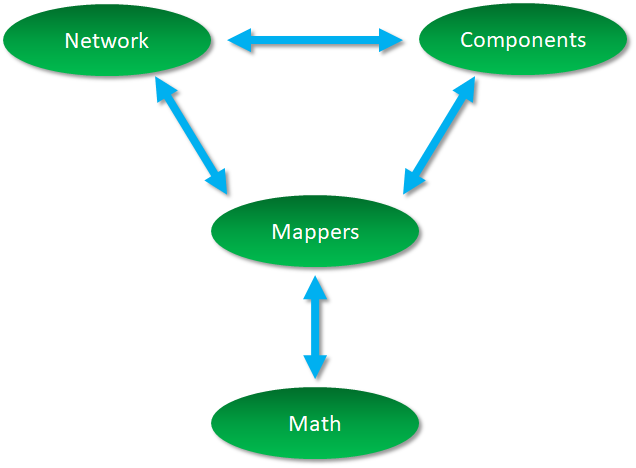
A full description of a power grid network requires specification of both the network topology and the physical properties of the bus and branch components. The combination of the models and the network generate algebraic equations that can be solved to get desired system properties. GridPACK supplies numerous modules to simplify the process of specifying the model and solving it. These include power grid components that describe the physics of the different network models or analyses, grid component factories that initialize the grid components, mappers that convert the current state of the grid components into matrices and vectors, solvers that supply the preconditioner and solver functionality necessary to implement solution algorithms, input and output modules that allow developers to import and export data, and other utility modules that support standard code development operations like timing, event logging, and error handling.
Many of these modules are constructed using libraries developed elsewhere so as to minimize framework development time. However, by wrapping them in interfaces geared towards power grid applications these libraries can be made easier to use by power grid engineers. The interfaces also make it possible in the future to exchange libraries for new or improved implementations of specific functionality without requiring application developers to rewrite their codes. This can significantly reduce the cost of introducing new technology into the framework. The software layers in the GridPACK framework are shown schematically in Figure 4.2.
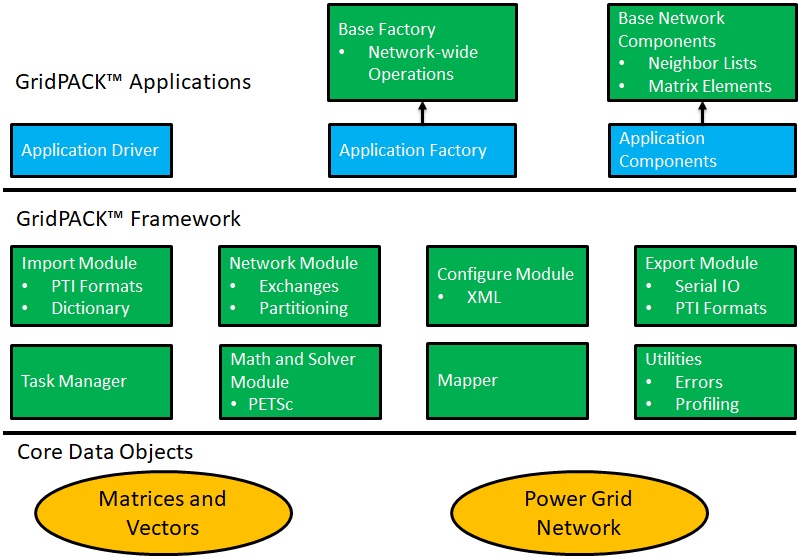
Core framework components are described below. Before discussing the components themselves, some of the coding conventions and libraries used in GridPACK will be described.
The GridPACK software uses a few coding conventions to help improve memory management and to minimize run-time errors. The first of these is to employ namespaces for all GridPACK modules. The entire GridPACK framework uses the gridpack namespace, individual modules within GridPACK are further delimited by their own namespaces. For example, the BaseNetwork class discussed in the next section resides in the gridpack::network namespace and other modules have similar delineations. The example applications included in the source code also have their own namespaces, but this is not a requirement for developing GridPACK-based applications.
To help with memory management, many GridPACK functions return boost shared pointers instead of conventional C++ pointers. These can be converted to a conventional pointer using the get() command. We also recommend that the type of pointers be converted using a dynamic_cast instead of conventional C-style cast. Application files should include the gridpack.hpp header file. This can be done by adding the line
#include "gridpack/include/gridpack.hpp"
at the top of the application .hpp and/or .cpp files. This file contains definitions of all the GridPACK modules and their associated functions.
Matrices and vectors in GridPACK were originally complex but now either complex or real matrices can be created using the library. Inside the GridPACK implementation, the underlying distributed matrices are either complex or real, but the framework adds a layer that supports both types of objects, even if the underlying math library does not. However, computations on complex matrices will perform better if the underlying math library is configured to use complex matrices directly. This should be kept in mind when choosing the math library to build GridPACK on. The underlying PETSc library can be configured to support either real or complex matrices, but not both at the same time. Complex numbers are represented in GridPACK as having type ComplexType. The real and imaginary parts of a complex number x can be obtained using the functions real(x) and imag(x).
The network module is designed to represent the power grid and has four major functions:
The network is a container for the grid topology. The connectivity of the network is maintained by the network object and can be made available through requests to the network. The network also maintains the “ghost” status of buses and branches and determines whether a bus or branch is owned by a particular processor or represents a ghost image of a bus or branch owned by a neighboring processor.
The network topology can be decorated with bus and branch objects that describe the properties of the particular physical system under investigation. Bus and branch objects are written by the application developer and incorporate the grid model and the analyses that need to be performed on it. Different applications will use different bus and branch implementations.
The network module is responsible for supplying update operations that can be used to fill in the value of ghost cell fields with current data from other processors. The updates of ghost buses and ghost branches have been split into separate operations to give users flexibility in optimizing performance by minimizing the amount of data that needs to be communicated in the code. Many applications do not require exchanges of branch data.
The network contains the partitioner. The partitioner is embedded in the network module but it is a substantial computational technology in its own right. Partitioning is a key part of parallel application development. It represents the act of dividing up the problem so that each processor is left with approximately equal amounts of work. At the same time, the partition is chosen so that communication between processors (a major source of computational inefficiency in HPC programs) is minimized.
A network is illustrated schematically in Figure 4.3. Each bus and branch has an associated bus or branch object. The buses and branches are derived from base classes that specify certain functions that must be implemented by the application developer so that the network can interact with other GridPACK modules. In addition, the application can have functionality outside the base class that is unique to the particular application.
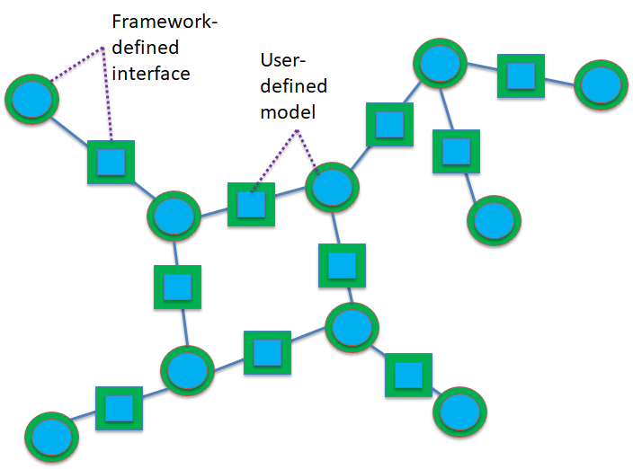
A major use of the partitioner is to rearrange the network in a form that is useful for computation immediately after it is read in from an external file. Typically, the information in the external file is not organized in a way that is necessarily optimal for computation, so the partitioner must redistribute data such that each processor contains at most a few large connected subsets of the network. The partitioner is also responsible for adding the ghost buses and branches to the system.
Ghost buses and branches in a parallel program represent images of buses and branches that are owned by other processes. In order to carry out operations on buses and branches it is frequently necessary to gain access to data associated with attached buses and branches. If the attached bus or branch resides on the same process, this is easily done but if they are located on another process, then some other mechanism is needed. The most efficient way to access remote data is to create copies of the buses and branches from other processors that are connected to locally owned objects. All local network components then have a complete set of attached neighbors. The ghost objects are updated collectively with current information from their home processors at points in the computation. Updating all ghosts at once is almost always more efficient than accessing data from one remote bus or branch at a time.
The use of the partitioner to distribute the network between different processors and create ghost nodes and branches is illustrated in Figure 4.4. Figure 4.4(a) shows a connected network that has been partitioned between two processors such that each processor owns roughly equally sized connected pieces. Figure 4.4(b) and Figure 4.4(c) show the pieces of the network on each processor after the ghost buses and branches have been added. Note that the ghost buses and branches represent connections that are split by the partition in Figure 4.4(a).
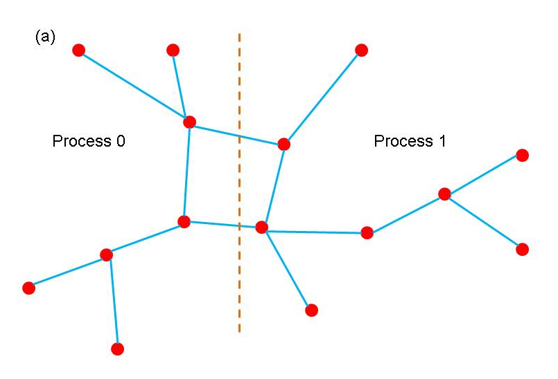
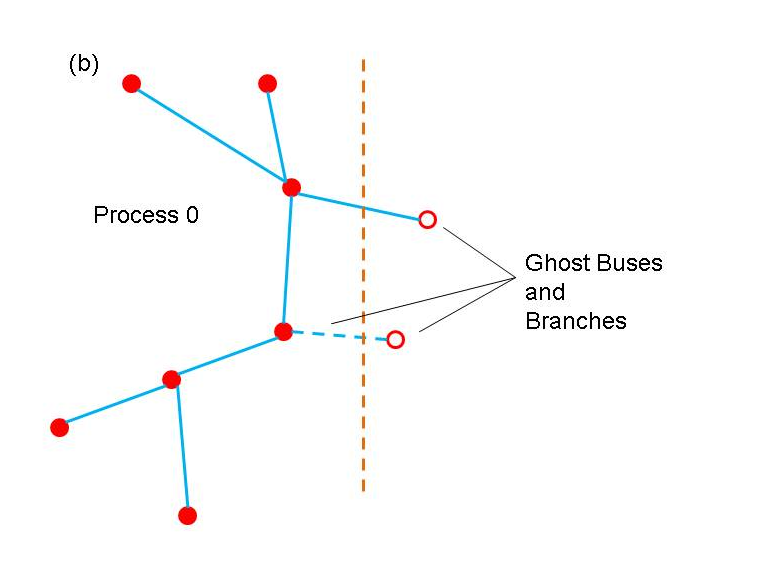
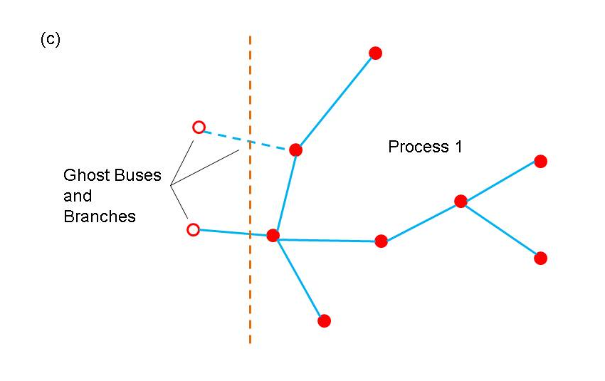
Networks can be created using the templated base class BaseNetworkclass Bus, class Branch, where Bus and Branch are application-specific classes describing the properties of buses and branches in the network. The BaseNetwork class is defined within the gridpack::network namespace. In addition to the Bus and Branch classes, each bus and branch has an associated DataCollection object, which is described in more detail in the data interface section 4.5. The DataCollection object is a collection of key-value pairs that acts as an intermediary between data that is read in from external configuration files and the bus and branch classes that define the network.
The BaseNetwork class contains a large number of methods, but only a relatively small number will be of interest to most application developers. Users that are interested in building networks from from an external file that is not supported by one of the GridPACK parser modules can read the section on advanced network functionality. This describes methods used primarily within other GridPACK modules to implement higher level capabilities. This section will focus on calls that are likely to be used by application developers.
The constructor for the network class is the function
BaseNetwork(const parallel::Communicator &comm)
The Communicator object is used to define the set of processors over which the network is distributed. Communicators are discussed in more detail in section 6.1. The network constructor creates an empty shell that does not contain any information about an actual network. The remainder of the network must be built up by adding buses and branches to it. Typically, buses and branches are added by passing the network to a parser (see import module) which will create an initial version of the network. The constructor is paired with a corresponding destructor
˜BaseNetwork()
that is called when the network object passes out of scope or is explicitly deleted by the user.
Two functions are available that return the number of buses or branches that are available on a process. This number includes both buses and branches that are held locally as well as any ghosts that may be located on the process.
int numBuses() int numBranches()
There are also functions that will return the total number of buses or branches in the network. These numbers ignore ghost buses and ghost branches.
int totalBuses() int totalBranches()
Buses and branches in the network can be identified using a local index that runs from 0 to the number of buses or branches on the process minus 1 (0-based indexing). For some calculations, it is necessary to identify one bus in the network as a reference bus. This bus is usually set when the network is created using an import parser. It can subsequently be identified using the function
int getReferenceBus()
If the reference bus is located on this processor (either as a local bus or a ghost) then this function returns the local index of the bus, otherwise it returns -1.
Ghost buses and branches are distinguished from locally owned buses and branches based on whether or not they are “active”. The two functions
bool getActiveBus(int idx) bool getActiveBranch(int idx)
provide the active status of a bus or branch on a process. The index idx is a local index for the bus or branch. Buses and branches are characterized by a number of different indices. One is the local index, already discussed above, but there are several others. Most of these are used internally by other parts of the framework but one index is of interest to application developers. This is the “original” bus index. When the network is described in the input file, the buses are labeled with a (usually) positive integer. There or no requirements that these integers be consecutive, only that each bus has its own unique index. The value of this index can be recovered using the function
int getOriginalBusIndex(int idx)
The variable idx is the local index of the bus. Branches are usually described in terms of the original bus indices for the two buses at each end of the branch, so there is no corresponding function for branches. Instead, the procedure is to get the local indices of the two buses at each end of the branch and then get the corresponding original indices of the buses. This information is usually used for output.
It is frequently necessary to gain access to the objects associated with each bus or branch. The following four methods can be used to access these objects
boost::shared_ptr<Bus> getBus(int idx) boost::shared_ptr<Branch> getBranch(int idx) boost::shared_ptr<DataCollection> getBusData(int idx) boost::shared_ptr<DataCollection> getBranchData(int idx)
The first two methods can be used to get Boost shared pointers to individual bus or branch objects indexed by local indices idx. The second two functions return pointers to the DataCollection objects associated with each bus or branch. These DataCollection objects can be used to initialize the bus and branch objects at the start of a calculation but they are also useful when converting a network of one type to a network of another type. This often happens when different computations are chained together. The following functions can be useful for handling input that is directed at certain network components
std::vector<int> getLocalBusIndices(int idx) std::vector<int> getLocalBranchIndices(int idx1, int idx2)
These functions return a list of local indices that correspond to either the original bus index idx for a bus, or the pair of indices idx1, idx2 for a branch. The reason that a list is returned instead of a single index is that in the case of ghost buses and branches, more than one copy of a network component may exist on a process. If no copies of a network component exist on a process then the returned vector has zero length. These functions can be used for applications such as contingency analysis, where modifications are made to a single network component and the modifications are specified in terms of the original bus indices. These functions can be used to find the local index of the component, if it exists.
The network partitioner can be accessed via the function
void partition()
The partition function distributes the buses and branches across processors such that the connectivity to branches and buses on other processors is minimized. It is also responsible for adding ghost buses and branches to the network. This function should be called after the network is read in but before any other operations, such as setting up exchange buffers or creating neighbor lists, have been performed. Finally, two sets of functions are required in order to set up and execute data exchanges between buses and branches in a distributed network. These exchanges are used to move data from active components to ghost components residing on other processors. Before these functions can be called, the buffers in individual network components must be allocated. See the documentation on network components in section 4.4 and the network factory in section 4.6 for more information on how to do this.
Once the buffers are in place, bus and branch exchanges can be set up and executed with just a few calls. The functions
void initBusUpdate() void initBranchUpdate()
are used to initialize the data structures inside the network object that manage data exchanges. Exchanges between buses and branches are handled separately, since not all applications will require exchanges between both sets of objects. The initialization routines are relatively complex and allocate several large internal data structures, so they should not be called if there is no need to exchange data as part of the algorithm.
After the updates have been initialized, it is possible to execute a data exchange at any point in the code by calling the functions
void updateBuses() void updateBranches()
These functions will cause data on ghost buses and branches to be updated with current values from active buses and branches located on other processors.
One additional network function that can be useful in certain circumstances is the capability for recovering the communicator on which the network is defined
const Communicator& communicator() const
This function can be used in implementing algorithms based on multilevel parallelism. Recovering the communicator is also needed for converting applications to modules that can be used to create higher level workflows that combine multiple different types of applications. This is discussed in more detail below.
Finally, two functions that can be of use in a variety of contexts return the local index of a bus or branch given the original indices of the bus or the original indices of the buses defining the endpoints of a branch. These functions are
std::vector<int> getLocalBusIndices(int idx) std::vector<int> getLocalBranchIndices(int idx1, int idx2)
These can be used to easily modify individual buses or branches based on user input. The functions return a vector of local indices, since it is possible that multiple buses may correspond to an original index. This can happen if the original index happens to correspond to a ghost bus on a particular process.
The BaseNetwork methods described in this section are only a subset of the total functionality available but they represent most of the methods that a typical developer would use. The remaining functions are primarily used to implement other parts of the GridPACK framework but are generally not required by people writing applications. More information on how the functions described above are used in practice can be found in the section on GridPACK factories.
The math module provides support in GridPACK for distributed matrices and vectors, linear solvers, non-linear solvers with preconditioning and DAE/ODE system time integration. Once created, vectors and matrices can be treated as opaque objects and manipulated using a high level syntax that is comparable to writing Matlab code. The distributed matrix and vector data structures themselves are based on external solver libraries and represent relatively lightweight wrappers on multipurpose HPC codes. The current math module is built on the PETSc library but other libraries, such as Hypre and Trilinos could potentially be used instead.
The main functionality associated with the math module is the ability to instantiate new matrices and vectors, add individual matrix and vector elements (and their values) to the matrix/vector objects, invoke the assemble operation on the object, perform basic algebraic operations, such as matrix-vector multiply, and solve systems of algebraic equations. The assemble operation is designed to give the library a chance to set up internal data structures and repartition the matrix elements, etc. in a way that will optimize subsequent calculations. Inclusion of this operation follows the syntax of most solver libraries when they construct a matrix or vector.
In addition to basic matrix operations, the math module contains linear and non-linear solvers and preconditioners. The module provides a simple interface on top of the PETSc libraries that will allow users access to this functionality without having to be familiar with the libraries themselves. This should make it possible to construct solver routines that are comparable in complexity to Matlab scripts. The use of a wrapper instead of having users directly access the libraries will also make it simpler to switch the underlying library in an application. All that will be required is that developers link to an implementation of the math module interface that is built on a different library. There will not be a need to rewrite any application code. This has the advantage that if a different library is used for the math module in one application, it instantly becomes available for other applications.
The functionality in the math component is distributed between the classes Matrix , RealMatrix, Vector, RealVector, LinearSolver,
RealLinearSolver, NonLinearSolver, RealNonlinearSolver, DAESolver, and RealDAESolver
Each of these classes is in the gridpack::math namespace and is described below. Like the BaseNetwork class, there are a lot of functions in Matrix and Vector that do not need to be used by users. Most of the functions related to matrix/vector instantiation and creation are used inside the mapper classes described in section 4.7, which eliminates the need for users to deal with them directly. However, users may be interested in creating functions not covered by existing library methods and in this case access to these functions is useful.
An additional note on the math module class names is in order. Originally, GridPACK only supported complex objects and used the names Vector, Matrix, etc. More recently, the capability for supporting real values was added and hence the new names RealVector, etc. The original names continued to be used for complex objects to maintain backwards compatibility. Complex objects can also be accessed using the names ComplexVector, ComplexMatrix, etc., which are mapped to the original complex objects.
The Matrix and RealMatrix classes are designed to create distributed matrices. Matrix is used for complex matrices and RealMatrix is used for real matrices. The matrix classes support two types of matrix, Dense and Sparse. In most cases users will want to use the sparse matrix but some applications require dense matrices. The Matrix and RealMatrix classes are nearly identical in functionality, so in the following we will only outline operations on the Matrix class. In most cases, the RealMatrix class contains the same operations. The only point to note is that for any operations that involve multiple matrices or a matrix and a vector, all matrix and vector objects must be either all complex or all real. In the future, we plan on adding some operations that will allow users to convert between types.
The matrix constructor is
Matrix(const parallel::Communicator &comm, const int &local_rows, const int &cols, const StorageType &storage_type=Sparse)
The communicator object comm specifies the set of processors that the matrix is defined on, the local_rows parameter corresponds to the number of rows contributed to the matrix by the processor, the cols parameter indicates what the second dimension of the matrix is and the storage_type parameter determines whether the matrix is sparse or dense. If the total dimension of the matrix is MN, then the sum of the local_rows parameters over all processors must equal M and the cols parameter is equal to N.
The matrix destructor is
˜Matrix()
Once a matrix has been created some inquiry functions can be used to probe the matrix size and distribution. The following functions return information about the matrix.
int rows() const int localRows() const void localRowRange(int &lo, int &hi) const int cols()
The function rows will return the total number of rows in the matrix, localRows returns the number of rows associated with the calling processor, localRowRange returns the lo and hi index of the rows associated with the calling processor and cols returns the number of columns in the matrix. Note that matrices are partitioned into row blocks on each processor.
Additional functions can be used to add matrix elements to the matrix, either one at a time or in blocks. The following two calls can be used to reset existing elements or insert new ones.
void setElement(const int &i, const int &j, const ComplexType &x) void setElements(const int &n, const int *i, const int *j, const ComplexType *x)
For real matrices, all variables of type ComplexType should be switched to type double. The first function will set the matrix element at the index location (i,j) to the value x. If the matrix element already exists, this function overwrites the value, if the element is not already part of the matrix, it gets added with the value x. Note that both i and j are zero-based indices. For the current PETSc based implementation of the math module, it is not required that the index i lie between the values of lo and hi obtained with localRowRange function, but for performance reasons it is desirable. Other implementations may require that i lie in this range. The second function can be used to add a collection of elements all at once. The variable n is the number of elements to be added, the arrays i and j contain the row and column indices of the matrix elements and the array x contains their values. Again, it is preferable that all values in i lie within the range [lo,hi].
Two functions that are similar to the set element functions above are the functions
void addElement(const int &i, const int &j, const ComplexType &x) void addElements(const int &n, const int *i, const int *j, const ComplexType *x)
These differ from the set element functions only in that instead of overwriting the new values into the matrix, these functions will add the new values to whatever is already there. If no value is present in the matrix at that location the function inserts it.
In addition to setting or adding new elements, it is possible to retrieve matrix values using the functions
void getElement(const int &i, const int &j, ComplexType &x) const void getElements(const int &n, const int *i, const int *j, ComplexType *x) const
These functions can only access elements that are local to the processor. This means that the index i must lie in the range [lo,hi] returned by the function localRowRange.
Finally, before a matrix can be used in computations, it must be assembled and internal data structures must be set up. This can be accomplished by calling the function
void ready()
After this function has been invoked, the matrix is read for use and can be used in computations. In general, the procedure for building a matrix is 1) create the matrix object 2) determine local parameters such as lo and hi 3) set or add matrix elements and 4) assemble the matrix using the ready function. For most applications, users can avoid these operations by building matrices and vectors using the mapper functionality described in section 4.7 and chapter 7.1.
Some additional functions have been included in the matrix class that can be useful for creating matrices or writing out their values (e.g. for debugging purposes). It is often useful to create a copy of a matrix. This can be done using the clone method
Matrix* clone() const
The new matrix is an exact replica of the matrix that invokes this function.
Two functions that can be used to write the contents of a matrix, either to standard output or to a file are
void print (const char *filename=NULL) const void save(const char *filename) const
The first function will write the contents of the matrix to standard output if no filename is specified, otherwise it writes to the specified file, the second function will write a file in MatLAB format. These functions can be used for debugging or to create matrices that can be fed into other programs.
Once a matrix has been created, a variety of methods can be applied to it. Most of these are applied after the ready call has been made by the matrix, but some operations can be used to actually build a matrix. These functions are listed below.
void equate(const Matrix &A)
This function sets the calling matrix equal to matrix A.
void scale(const ComplexType &x)
Multiply all matrix elements by the value x (use a value of type double for a real matrix).
void multiplyDiagonal(const Vector &x)
Multiply all elements on the diagonal of the calling matrix by the corresponding element of the vector x. The Vector class is described in section 4.3.2.
void addDiagonal(const Vector &x)
Add elements of the vector x to the diagonal elements of the calling matrix.
void add(const Matrix &A)
Add the matrix A to the calling matrix. The two matrices must have the same number of rows and columns, but otherwise there are no restrictions on the data layout or the number and location of the non-zero entries.
void identity()
Create an identity matrix. This function assumes that the calling matrix has been created but no matrix elements have been assigned to it.
void zero()
Set all non-zero entries to zero.
void conjugate(void)
Set all entries to their complex conjugate value. This function only applies to complex matrices. The following functions create a new matrix or vector.
Matrix *multiply(const Matrix &A, const Matrix& B)
Multiply matrix A times matrix B to create a new matrix.
Vector *multiply(const Matrix &A, const Vector &x)
Multiply matrix A times vector x to get a new vector.
Matrix *transpose(const Matrix &A)
Take the transpose of matrix A.
The vector class operates in much the same way as the matrix class. As above, most functions apply to both the Vector and RealVector class so only the Vector operations are described here. The vector constructor is
Vector(const parallel::Communicator& comm, const int& local_length)
The parameter local_length is the number of contiguous elements in the vector that are held on the calling processor. The sum of local_length over all processors must equal the total length of the vector. The functions
int size(void) const int localSize(void) const void localIndexRange(int &lo, int &hi) const
can by used to get the global size of the vector or the size of the vector segment held locally on the calling processor. The localIndexRange function can be used to find the indices of the vector elements that are held locally.
Vector elements can be set and accessed using the functions
void setElement(const int &i, const ComplexType &x) void setElementRange(const int& lo, const int &hi, ComplexType *x) void setElements(const int &n, const int *i, const ComplexType *x) void addElement(const int &i, const ComplexType &x) void addElements(const int& n, const int *i, const ComplexType *x) void getElement(const int& i, ComplexType& x) const void getElements(const int& n, const int *i, ComplexType *x) const void getElementRange(const int& lo, const int& hi, ComplexType *x) const void ready(void)
These functions all operate in a similar way to the corresponding matrix operations. The setElementRange function, etc. are similar to the setElements function except that instead of specifying individual element indices in a separate vector, the low and high indices of the segment to which the values are assigned is specified (this assumes that the values in the array x represent a contiguous segment of the vector). Again, for real vectors, all values of type ComplexType should be replaced by values of type double. The utility functions
Vector *clone(void) const void print(const char* filename = NULL) const void save(const char *filename) const
also have similar behaviors to their matrix counterparts.
Additional operations that can be performed on the entire vector include
void zero(void) void equate(const Vector &x) void fill(const ComplexType& v) ComplexType norm1(void) const ComplexType norm2(void) const ComplexType normInfinity(void) const void scale(const ComplexType& x) void add(const ComplexType& x) void add(const Vector& x, const ComplexType& scale = 1.0) void elementMultiply(const Vector& x) void elementDivide(const Vector& x)
The zero function sets all vector elements to zero, the equate function copies all values of the vector x to the corresponding elements of the calling vector, fill sets all elements to the value v, norm1 returns the L norm of the vector, norm2 returns the L norm and normInfinity returns the L norm. The scale function can be used to multiply all vector elements by the value x, the first add function can be used to add the constant x to all vector elements and the second add function can be used to add the vector x to the calling vector after first multiplying it by the value scale. The final two functions multiply or divide each element of the calling vector by the value in the vector x.
The following methods modify the values of the vector elements using some function of the element value.
void abs(void) void real(void) void imaginary(void) void conjugate(void) void exp(void) void reciprocal(void)
The function abs replaces each element with its complex norm (absolute value), real and imaginary replace the elements with their real or imaginary values, conjugate replaces the vector elements with their conjugate values, exp replaces each vector element with the exponential of its original value and reciprocal replaces each element by its reciprocal. The real, imaginary and conjugate functions only apply to complex vectors.
The math module also contains solvers. The LinearSolver class contains a constructor
LinearSolver(const Matrix &A)
that creates an instance of the solver. The matrix A defines the set of linear equations Ax=b that must be solved. If matrix A is a RealMatrix then the corresponding class and its constructor is
RealLinearSolver(const RealMatrix &A)
The properties of the solver can be modified by calling the function
void configure(utility::Configuration::Cursor *props)
The Configuration module is described in more detail section 4.10. This function can be used to pass information from the input file to the solver to alter its properties. For the PETSc library, the solver algorithm can be controlled using PETSc’s runtime options database. Different options can be passed to PETSc by including a block in the input deck (there is more documentation on input decks in the section on the Configuration module). An example of this type of input is
<LinearSolver> <PETScOptions> -ksp_view -ksp_type richardson -pc_type lu -pc_factor_mat_solver_package superlu_dist -ksp_max_it 1 </PETScOptions> </LinearSolver>
The LinearSolver block is where different solver parameters are defined and the PETScOptions block is where a string can be passed to the runtime options database. Additional parameters that can be passed to the solver include SolutionTolerance, MaxIterations and FunctionTolerance.
Some solvers that are available in PETSc only run serially and will fail if run on more than one processor. However, for the problem size ranges frequently encountered in power grid analysis, the serial solvers may be the fastest options. Other parts of the code may be more scalable so it is desirable to run them in parallel. GridPACK has options that allow users to run the code in parallel while using a serial solver, without the need to modify any application source code. This can be done by including the options
<ForceSerial>true</ForceSerial> <InitialGuessZero>true</InitialGuessZero> <SerialMatrixConstant>true</SerialMatrixConstant>
in the LinearSolver block. The first option can be used to replicate the linear solver across all processors in the system and then distribute the answer to processors. The second option eliminates the need for obtaining an initial guess for the solution from all processors and provides additional performance gains. The final option can be used if the matrix does not change between function calls. Only new versions of the RHS vector need to be replicated on each processor after the first call. This can also result in performance gains.
After configuring the solver, it can be used to solve the set of linear equations by calling the method
void solve(const Vector &b, Vector &x) const
This function returns the solution x based on the right hand side vector b.
The math module also supports non-linear solvers for systems of the type A(x)x = b(x) but the interface is more complicated than for the linear solvers. In order for the non-linear solver to work, two functions must be defined by the user. The first evaluates the Jacobian of the system for a given trial state x of the system and the second computes the right hand side vector for a given trial state x. The two functions are of type JacobianBuilder and FunctionBuilder. The JacobianBuilder function is a function with arguments
(const math::Vector &vec, math::Matrix &jacobian)
and FunctionBuilder is a function with arguments
(const math::Vector &xCurrent, math::Vector &newRHS)
These functions need to be added to the system somewhere. They can then be assigned to objects of type JacobianBuilder and FunctionBuilder and passed to the constructor of the non-linear solver. There are a number of ways to do this. In the following discussion, we will adopt the method used in the non-linear solver version of the power flow code that is distributed with GridPACK.
The first step is to define a struct that can be used to implement the functions needed by the non-linear solver (the actual implementation contains additional declarations and code, but the important features of this helper class are outlined here)
struct SolverHelper : private utility::Uncopyable { //Constructor SolverHelper(// Arguments to initialize helper //) { // Initialize non-linear calculation } : boost::shared_ptr<math::Matrix> matrix; // Jacobian matrix boost::shared_ptr<math::Vector> X; // Current state : void operator() (const math::Vector &xCurrent, math::vector &newRHS) { // Evaluate RHS vector from current state xCurrent } void operator() (const math::Vector &xCurrent, math::Matrix &Jacobian) { // Evaluate Jacobian from current state xCurrent } }
The important functions for this discussion are the overloaded operator() functions. In the application code, this helper struct can be initialized and used to create two functions of type JacobianBuilder and FunctionBuilder using the syntax
SolverHelper helper(//Arguments to initialize helper //); math::JacobianBuilder jbuild = boost::ref(helper); math::FunctionBuilder fbuild = boost::ref(helper);
At this point jbuild and fbuild are pointing to the overloaded functions in helper that have the appropriate arguments for a function of type JacobianBuilder and type FunctionBuilder. The boost::ref command provides a reference to the appropriate function in helper instead of making a copy, this preserves any state that might be present in helper between invocations of the functions jbuild and fbuild by the solver.
For the power flow application using a non-linear solver, the creation of the solver is a two-step process. First, a pointer to a non-linear solver interface is created and then a particular solver instance is assigned to this interface. The power flow application can point to a hand-coded Newton-Raphson solver or a wrapper to the PETSc library of solvers. The code for this is the following
boost::scoped_ptr<math::NonlinearSolverInterface> solver; if (useNewton) { math::NewtonRaphsonSolver *tmpsolver = new math::NewtonRaphsonSolver(*(helper.matrix), jbuild, fbuild); solver.reset(tmpsolver); } else { solver.reset(new math::NonlinearSolver(*(helper.matrix), jbuild, fbuild)); }
If you are only interested in using the NonlinearSolver, then it is possible to dispense with the NonlinearSolverInterface and just use the NonlinearSolver directly. The remaining call to invoke the solver is just
solver->solver(*helper.X);
Additional calls are likely to be added to these to allow user-specified parameters from the input deck to be sent to the solver. In the case of the NonlinearSolver, these can be used to specify which PETSc solver should be used. More details on how to use the non-linear solvers can be found by looking at the powerflow module in the GridPACK source code.
The DAESolver is used to integrate systems of differential and algebraic equations (DAE) of the form
It can also be used to solve systems of ordinary differential equations (ODE). As with other GridPACK math classes, DAESolver has real and complex versions. The complex version is discussed here, but the real version behaves identically.
At its simplest, a DAESolver is instantiated with the constructor
DAESolver(const parallel::Communicator& comm, const int local_size, DAESolver::JacobianBuilder& jbuilder, DAESolver::FunctionBuilder& fbuilder)
DAESolver, like NonlinearSolver, requires some helper functions. A helper function can be an actual function or a functor.
The system Jacobian matrix is computed by the DAESolver::JacobianBuilder helper which requires the following arguments:
(const double& time, const DAESolver::VectorType& x, const DAESolver::VectorType& xdot, const double& shift, DAESolver::MatrixType& J)
where the vectors x and xdot are the system variable state and its time derivative at time.
The DAESolver::FunctionBuilder helper is used to compute and requires these arguments:
(const double& time, const DAESolver::VectorType& x, const DAESolver::VectorType& xdot, DAESolver::VectorType& F)
It’s usually best to create a functor class or struct with appropriate methods and the necessary data for these helpers. For example,
struct MyDAEHelper { void operator() (const double& time, const DAESolver::VectorType& X, const DAESolver::VectorType& Xdot, const double& shift, DAESolver::MatrixType& J); void operator() (const double& time, const DAESolver::VectorType& X, const DAESolver::VectorType& Xdot, DAESolver::VectorType& F); };
which can be used to create a DAESolver like this.
gridpack::parallel::Communicator comm; MyDAEHelper myhelper; DAESolver::JacobianBuilder jbuilder = boost::ref(myhelper); DAESolver::FunctionBuilder fbuilder = boost::ref(myhelper); DAESolver solver(comm, lrows, jbuilder, fbuilder);
To use the solver, first it must be initialized, which is done with
DAESolver::initialize(const double& t0, const double& deltat0, DAESolver::VectorType& x0);
where t0 and deltat0 are the initial time and time step and x0 is the initial state. The system is then solved with
DAESolver::solve(double& maxtime, int& maxsteps);
This advances the time integration until maxtime is reached or maxsteps time steps are completed. The actual integration time and steps taken are returned in maxtime and maxsteps upon completion and the resulting state is placed in the x0 vector passed to initialize(). A subsequent call to solve will continue where the previous call left off.
In addition to the Jacobian and function builder helper functions, the DAESolver accepts functions executed before and after each time step that can be used to manipulate, or just report, DAESolver progression. These functions take the current time as the only argument. To illustrate ways to use these, MyDAEHelper might be modified to add some facilities and pass those to the solver:
struct MyDAEHelper { [...] void operator() (const double& time); static void postTimeStep (const double& time); }; [...] DAESolver::StepFunction sfunc; sfunc = boost::ref(myhelper); solver.preStep(sfunc); sfunc = &MyDAEHelper::postTimeStep; solver.postStep(sfunc);
The evolution of a DAESolver time integration can be manipulated with the use of events. Events can be used to modify the value of one or more time integration variables when a variable value changes sign. Three kinds of events can be created, based on how a variable changes sign:
CrossZeroNegative
variable value changes from positive to negative
CrossZeroPositive
variable value changes from negative to positive
CrossZeroEither
variable changes sign in either direction
Events are described using subclasses of DAESolver::Event, which should override
void p_handle(const bool *triggered, const double& t, T *state)
which does whatever is necessary to adjust the internals of the internals of the event when it is triggered, and
void p_update(const double& t, T *state)
which is used to modify the time integration state vector.
An arbitrary number of events can be managed using a DAESolver::EventManager instance. In order to use the event facility, an event manager must be created and populated with event instances, then the manager is used when creating the solver using this constructor:
DAESolver(const parallel::Communicator& comm, const int local_size, DAESolver::JacobianBuilder& jbuilder, DAESolver::FunctionBuilder& fbuilder, DAESolver::EventManagerPtr eman);
DAESolver can be configured from input. There is one option, Adaptive, which, if true, causes a variable time step to be used in the integration. Also, PETSc options can be specified, including an optional prefix. Some example configuration language might look like
<DAESolver> <Adaptive>true</Adaptive> <PETScPrefix>dsim_</PETScPrefix> <PETScOptions> -ts_type euler -ts_view -ts_monitor </PETScOptions> </DAESolver>
Network component is a generic term for objects representing buses and branches. These objects determine the behavior of the system and the type of analyses being done. Branch components can represent transmission lines and transformers while bus components could model loads, generators, or something else. Both kinds of components could represent measurements (e.g. for a state estimation analysis).
Network components cover a fairly broad range of behaviors and there is little that can be said about them outside the context of a specific problem. Each component inherits from a matrix-vector interface, which enables the framework to generate matrices and vectors from the network in a straightforward way. In addition, buses inherit from a base bus interface and branches inherit from a base branch interface. The relationship between these interfaces is shown in Figure 4.5.
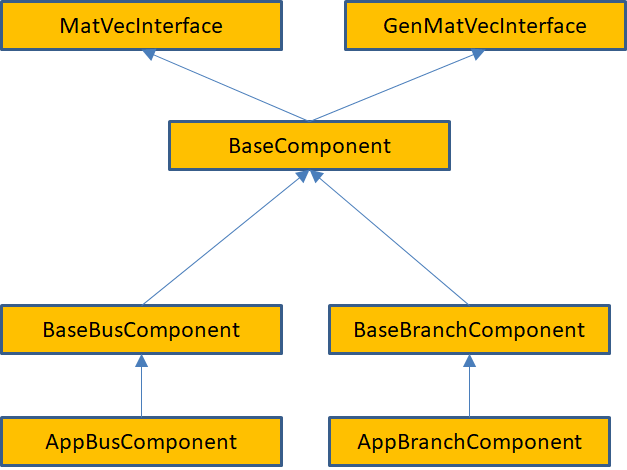
These base interfaces provide mechanisms for accessing the neighbors of a bus or branch and allow developers to specify what data is transferred in ghost exchanges. They do not define any physical properties of the bus or branch, it is up to application developers to do this.
Of these interfaces, the matrix-vector interfaces are the most important. The MatVecInterface is used for most calculations that directly model the physics of the power grid and described problems where the dependent and independent variables are associated with buses.
The GenMatVecInterface is used for problems where variables are also associated with branches, such as state estimation or Kalman filter calculations. This section will describe the MatVecInterface, the GenMatVecInterface is described in more detail later in this document. The MatVecInterface is designed to answer the question of what block of data is contributed by a bus or branch to a matrix or vector and what the dimensions of the block are. For example, in constructing the Y-matrix for a power flow problem using a real-valued formulation, the grid components representing buses contribute a 22 block to the diagonal of the matrix. Similarly, the grid components representing branches contribute a 22 block to the off-diagonal elements. (Note that if the Y-matrix is expressed as a complex matrix, then the blocks are of size 11.) The location of these blocks in the matrix is determined by the relative locations of the corresponding buses and branches in the network and the ordering of buses. The indexing calculations required to determine how these locations map to a location in the matrix can be quite complicated, particularly when combined with a parallel decomposition of the data, but can be made completely transparent to the user via the mapper module.
Because the matrix-vector interface focuses on small blocks, it is relatively easy for power grid engineers to write the corresponding methods. The full matrices and vectors can then be generated from the network using simple calls to the mapper interface (see the discussion below on the mapper module). All of the base network component classes reside in the gridpack::component namespace.
The primary function of the MatVecInterface class is to enable developers to build the matrices and vectors used in the solution algorithms for the network. It eliminates a large number of tedious and error-prone index calculations that would otherwise need to be performed in order to determine where in a matrix a particular data element should be placed. The MatVecInterface includes basic constructors and destructors. The first set of non-trivial operations are implemented on buses and set the values of diagonal blocks in the matrix. Additional functions are implemented on branches and set values for off-diagonal elements. Vectors can be created by calling functions defined on buses. These functions are described in detail below.
The functions that are used to create diagonal matrix blocks are
virtual bool matrixDiagSize(int *isize, int *jsize) const virtual bool matrixDiagValues(ComplexType *values) virtual bool matrixDiagValues(RealType *values)
These functions are virtual functions and are expected to be overwritten by application-specific bus and branch classes. Depending on whether the application should create real or complex matrices, either the real or complex versions of matrixDiagValues can be implemented. The default behavior is to return 0 for isize and jsize for matrixDiagSize and to return false for all functions. These functions will not build a matrix unless overwritten by the application. Not all functions need to be overwritten by a given bus or branch class. Generally, only a subset of functions may be needed by an application.
The matrixDiagSize function returns the size of the matrix block that is contributed by the bus to a matrix. If a single number is contributed by the bus, the matrixDiagSize function returns 1 for both isize and jsize. Similarly, for a 22 block then both isize and jsize are set to 2. The return value is true if the bus contributes to the matrix, otherwise it is false. Returning false can occur, for example, if the bus is the reference bus in a power flow calculation. For a more complicated calculation, such as a dynamic simulation with multiple generators on some buses, the size of the matrix blocks can differ from bus to bus. Note that the values returned by matrixDiagSize refer only to the particular bus on which the function is invoked. It does not say anything about other buses in the system.
The matrixDiagValues function returns the actual values for the matrix block associated with the bus for which the function is invoked. The values are returned as a linear array with values returned in column-major order. For a 22 block, this means the first value is at the (0,0) position, the second value is at the (1,0) position, the third value is at the (0,1) position and the fourth value is at the (1,1) position. This function also returns true if the bus contributes to the matrix and false otherwise. This may seem redundant, since the matrixDiagSize function has already returned this information but it turns out there are certain applications where it is desirable for the matrixDiagSize function to return true and the matrixDiagValues function to return false. The buffer values is supplied by the calling program and is expected to be big enough, based on the dimensions returned by the matrixDiagSize function, to contain all returned values.
The functions that are used to return values for off-diagonal matrix elements are listed below. These are only implemented for branches.
virtual bool matrixForwardSize(int *isize, int *jsize) const virtual bool matrixForwardValues(ComplexType *values) virtual bool matrixReverseSize(int *isize, int *jsize) const virtual bool matrixReverseValues(ComplexType *values)
Only the complex versions of these functions are listed but equivalent functions for real matrices are available. These functions work in a similar way to the functions for creating blocks along the diagonal, except that they split off-diagonal matrix calculations into forward elements and reverse elements. The initial approximate location of an off-diagonal matrix element in a matrix is based in some internal indices assigned to the buses at either end of the branch. Suppose that these indices are i, corresponding to the “from” bus and j, corresponding to the “to” bus. The “forward” functions assume that the request is for the ij block of elements while the “reverse” functions assume that the request is for the ji block of elements. Another way of looking at this is the following: as discussed below, branches contain pointers to two buses. The first is the “from” bus and the second is the “to” bus. The forward functions assume that the “from” bus corresponds to the first index of the element, the reverse functions assume that the “from” bus corresponds to the second index of the element. Note that if a bus does not contribute to a matrix, then the branches that are connected to the bus should also not contribute to the matrix.
The final set of functions in the MatVecInterface that are of interest to application developers are designed to set up vectors. These are usually implemented only for buses. These functions are analogous to the functions for creating matrix elements
virtual bool vectorSize(int *isize) const virtual bool vectorValues(ComplexType *values)
The vectorSize function returns the number of elements contributed to the vector by a bus and the vectorValues returns the corresponding values. The vectorValues function expects the buffer values to be allocated by the calling program. In addition to functions that can be used to specify a vector, there is an additional function that can be used to push values from a vector back onto a bus. This function is
virtual void setValues(ComplexType *values)
The buffer contains values from the vector corresponding to internal variables in the bus and this function can be used to set the bus variables. The setValues function could be used to assign bus variables so that they can be used to recalculate matrices and vectors for an iterative loop in a non-linear solver or so that the results of a calculation can be exported to an output file. Real versions of the vectorValues and setValues functions are available for real vectors.
The BaseComponent class contains additional functions that contribute to the base properties of a bus or branch. Again, most of the functions in this class are virtual and are expected to be overwritten by actual implementations. However, not all of them need to be overwritten by a particular bus or branch class. Many of these functions are used in conjunction with the BaseFactory class, which defines methods that run over all buses and branches in the network and invokes the functions defined below.
The load function
virtual void load(const boost::shared_ptr<DataCollection> &data)
is used to instantiate components based on data in the network configuration file that is used to create the network. It is used in conjunction with the DataCollection object, which is described in more detail below (section 4.5). Networks are generally created by first instantiating a network parser. The parser is used to read in an external network file and create the network topology. The next step is to invoke the partition function on the network to get all network elements properly distributed between processors. At this point, the network, including ghost buses and branches, is complete and each bus and branch has a DataCollection object containing all the data in the network configuration file that pertains to that particular bus or branch. The data in the DataCollection object is stored as simple key-value pairs. This data is used to initialize the corresponding bus or branch by invoking the load function on all buses and branches in the system. The bus and branch classes must implement the load function to extract the correct parameters from the DataCollection object and use them to assign internal component parameters.
Only one type of bus and one type of branch is associated with each network but many different types of equations can be generated by the network. To allow developers to embed many different behaviors into a single network and to control at what points in the simulation those behaviors can be manifested, the concept of modes is used. The function
virtual void setMode(int mode)
can be used to set an internal variable in the component that tells it how to behave. The variable “mode” usually corresponds to an enumerated constant that is part of the application definition. For example, in a power flow calculation it might be necessary to calculate both the Y-matrix and the equations for the power flow solution containing the Jacobian matrix and the right-hand side vector. To control which matrix gets created, two modes are defined: “YBus” and “Jacobian”. Inside the matrix functions in the MatVecInterface, there is a condition
if (p_mode == YBus) { // Return values for Y-matrix calculation } else if (p_mode == Jacobian) { // Return values for power flow calculation }
The variable “p_mode” is an internal variable in the bus or branch that is set using the setMode function.
The function
virtual bool serialWrite(char *string, const int bufsize, const char *signal = NULL)
is used in the serial IO modules described below to write out properties of buses or branches to standard output. The character buffer “string” contains a formatted line of text representing the properties of the bus or branch that is written to standard output, the variable “bufsize” gives the number of characters that “string” can hold, and the variable “signal” can be used to control what data is written out. The return value is true if the bus or branch is writing out data and false otherwise. For example, if the application is writing out the properties of all buses with generators, then the signal “generator” might be passed to this subroutine. If a bus has generators, then a string is copied into the buffer “string” and the function returns true, otherwise it returns false. The buffer “string” is allocated by the calling program. The variable “bufsize” is provided so that the bus or branch can determine if it is overwriting the buffer. Returning to the generator example, if this call returns a separate line for each generator, then it is possible that a bus with too many generators might exceed the buffer size. This could be detected by the implementation if the buffer size is known. More information on how this function is used can be found in the discussion of the serial IO modules.
The BaseComponent class also contains two functions that must be implemented if buses and/or branches need to exchange data with other processors. Data that must be exchanged needs to be placed in buffers that have been allocated by the network. The bus and branch objects specify how large the buffers need to be by implementing the function
virtual int getXCBufSize()
This function must return the same value for all buses and all branches in the same bus or branch classes. Buses can return a different value than branches. For example, in a power flow calculation, it is necessary that ghost buses get new values of the phase angle and voltage magnitude increments. These are both real numbers so the getXCBusSize routine needs to return the value 2*sizeof(double). Note that all buses must return this value even if the bus is a reference bus and does not participate in the calculation.
This function is queried by the network and used to allocate a buffer of the appropriate size. The network then informs the bus and branch objects where the location of the buffer is by invoking the function
virtual void setXCBuf(void *buf)
The bus or branch can use this function to set internal pointers to this buffer that can be used to assign values to the buffer (which is done before a ghost exchange) or to collect values from the buffer (which is done after a ghost exchange). Continuing with the powerflow example, the bus implemention of the setXCBuf function would look like
setXCBuf(void *buf) { p_Ang_ptr = static_cast<double*>(buf); p_Mag_ptr = p_Ang_ptr+1; }
The pointers p_Ang_ptr and p_Mag_ptr of type double are internal variables of the bus implementation and can be used elsewhere in the bus whenever the voltage angle and voltage magnitude variables are needed. After a network update operation, ghost buses will contain values for these variables that were calculated on the home processor that owns the corresponding bus.
The BaseBusComponent and BaseBranchComponent classes contain a few additional functions that are specific to whether or not a component is a bus or a branch. The BaseBusComponent class contains functions that can be used to identify attached buses or branches, determine if the bus is a reference bus, and recover the original indices of the bus. Other functions are included in the BaseBusClass but these are not usually required by application developers and are used primarily to implement other GridPACK functions.
To get a list of pointers to all branches connected to a bus, the function
void getNeighborBranches( std::vector<boost::shared_ptr<BaseComponent> > &nghbrs) const
can be called. This provides a list of pointers to all branches that have the calling bus as one of its endpoints. This function can be used inside a bus method to loop over attached branches, which is a common motif in matrix calculations. For example, to evaluate the contribution to a diagonal element of the Y-matrix coming from transmission lines, it is necessary to perform the sum
where the Y are the contribution due to transmission lines from the branch connecting i and j. The code inside a bus component that evaluates this sum can be written as
std::vector<boost::shared_ptr<BaseComponent> > branches; getNeighborBranches(branches); ComplexType y_diag(0.0,0.0); for (int i=0; i<branches.size(); i++) { YBranch *branch = dynamic_cast<YBranch*>(branches[i].get()); y_diag += branch->getYContribution(); }
The function getYContribution evaluates the quantity Y using parameters that are local to the branch. The return value is then accumulated into the bus variable y_diag, which is eventually returned through the matrixDiagValues function. The dynamic_cast is necessary to convert the pointer from a BaseComponent object to the application class YBranch. The BaseComponent class has no knowledge of the getYContribution function, this is only implemented in the class YBranch.
A function that is similar to getNeighborBranches is
void getNeighborBuses( std::vector<boost::shared_ptr<BaseComponent> > &nghbrs) const
which can be used to get a list of the buses that are connected to the calling bus via a single branch.
Many power grid problems require the specification of a special bus as a reference bus. This designation can be handled by the two functions
void setReferenceBus(bool status) bool getReferenceBus() const
The first function can be used (if called with the argument true) to designate a bus as the reference bus and the second function can be called to inquire whether a bus is the reference bus. A reference bus is usually set when the network configuration file is read in and does not need to be set explicitly by the application.
Finally, it is often useful when exporting results if the original index of the bus is available. This can be recovered using the function
int getOriginalIndex() const
The functions in the BaseBusComponent class only work correctly after a call to the base factory method setComponents, which is described in section 4.6. Other functions in the BaseBusComponent class are needed within the framework but are not usually required by application developers.
The BaseBranchComponent class is similar to the BaseBusComponent class and provides basic information about branches and the buses at either end of the branch. To retrieve pointers to the buses at the ends of the branch, the following two functions are available
boost::shared_ptr<BaseComponent> getBus1() const boost::shared_ptr<BaseComponent> getBus2() const
The getBus1 function returns a pointer to the “from” bus, the getBus2 function returns a pointer to the “to” bus.
Two other functions in the BaseBranchComponent class that are useful for writing output are
int getBus1OriginalIndex() const int getBus2OriginalIndex() const
These functions get the original index of “from” and “to” buses. Similar to the functions in the BaseBusComponent class, the functions in the BaseBranchComponent class will not work correctly until the setComponents method has been called in the base factory class.
The main route for incorporating information about buses and branches into GridPACK applications is the DataCollection class. Each bus and branch (including ghost buses and ghost branches) has an associated DataCollection object that contains all the parameters associated with that object. The DataCollection class works in conjunction with the dictionary.hpp header file, which defines a unified vocabulary for labeling power grid parameters that are used in applications. The dictionary.hpp file includes a collection of files in the parser/variables_defs directory that represent variables associated with different network components, such as buses, branches, transformers, generators, etc. The goal of using the dictionary is to create a unified vocabulary for power grid parameters within GridPACK that is independent of the source of the parameters.
The DataCollection class is a simple container that can be used to store key-value pairs and resides in the gridpack::component namespace. When the network is created using a standard parser to read a network configuration file (see more on parsers in section 4.8), each bus and branch created in the network has an associated DataCollection object. This object, in turn, contains all parameters from the configuration file that are associated with that particular bus or branch. The possible key values in the DataCollection object are defined in dictionary.hpp and represent parameters found in power grid applications. Parameters associated with a given key can be retrieved from the DataCollection object using some simple accessors.
Data can be stored in two ways inside the DataCollection object. The first method assumes that there is only a single instance of the key-value pair, the second assumes there are multiple instances. This second case can occur, for example, if there are multiple generators on a bus. Generators are characterized by a collection of parameters and each generator has its own set of parameters. The generator parameters can be indexed so that they can be matched with a specific generator.
When a network is created by parsing an external configuration file, for example a PSS/E format .raw file, the network topology and component objects are created and distributed over processors. All network components are in an initial state that is determined by the constructor for that object. This is usually very simple, since at the moment when the object is created, there is very little information available about how to initialize it. Along with the component object, a DataCollection object is also created. The DataCollection object stores all the parameters from the network configuration file using a key-value scheme. The situation is illustrated schematically in Figure 4.6.
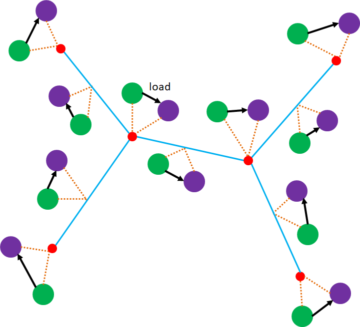
After the network is created, the DataCollection objects are filled with key-value pairs while network components are in an uninitialized state. The information can be transferred from the DataCollection objects to the network components by implementing the network component load function. The load function has a pointer to the associated DataCollection object passed when it is called, so that the contents of the data collection can be accessed using the functions described below.
Assuming that a parameter only appears once in the data collection, the contents of a DataCollection object can be accessed using the functions
bool getValue(const char *name, int *value) bool getValue(const char *name, long *value) bool getValue(const char *name, bool *value) bool getValue(const char *name, std::string *value) bool getValue(const char *name, float *value) bool getValue(const char *name, double *value) bool getValue(const char *name, ComplexType *value)
These functions return true if a variable of the correct type is stored in the DataCollection object with the key “name”, otherwise it returns false. For example, there is only one parameter BUS_VOLTAGE_MAG for each bus, so this value can be obtained using the double variant of getValue. All getValue functions (including the functions below) leave the value of the variable unchanged if the corresponding name is not found in the data collection. This can be used to implement default values using the following construct
double var; var = 1.0; getValue("SOME_VARIABLE_NAME",&var);
If the variable is not found in the data collection, the default value is 1. The returned bool value can also be used to implement defaults or take alternative actions if the value is not found. Note that it is important to make match the variable type correctly when calling getValue. For example, if a variable is stored as type double in the data collection, but you try and access it by passing in a variable of type float or int, the getValue call will return false.
If the variable is stored multiple times in the DataCollection, then it can be accessed with the functions
bool getValue(const char *name, int *value, const int idx) bool getValue(const char *name, long *value, const int idx) bool getValue(const char *name, bool *value, const int idx) bool getValue(const char *name, std::string *value, const int idx) bool getValue(const char *name, float *value, const int idx) bool getValue(const char *name, double *value, const int idx) bool getValue(const char *name, ComplexType *value, const int idx)
where idx is an index that identifies a particular instance of the key. In this case, the key is essentially a combination of the character string name and the index. An example is the parameter describing the generator active power output, GENERATOR_PG. Because there can be more than one generator on the bus, it is necessary to include an additional index to indicate which generator values are required. Internally, the key then becomes the combination GENERATOR_PG:idx. The index values are 0-based, so the first value has index 0, the second value has index 1 and so on up to N-1, where N is the total number of values. Because the combination of name and index is actually stored internally as a key, it is not necessary that all values of the index between 0 and N-1 be stored in the data collection. If some generators are missing some parameters, that is allowed. It is up to the application to account for these missing values. It is also important to note that variables without an index and those with an index are considered different, so if you attempt to access a variable that is indexed without using the indexed version of getValue, and visa-versa, the function will return false.
The data collection is generally filled with values after the parser is called to create the network. The nomenclature for these values can be found in the dictionary.hpp file in the main GridPACK directory. This file contains additional files that include definitions for bus variables, branch variables, etc. in the src/parser/variable_defs directory. Users are encouraged to look at these files to find out what parameters might be available to their applications. Different parameters may be available depending on the source file that was used to create that calculation. The PSS/E version 23 and versions 33-35 files currently supported in GridPACK have significant differences and values that are present in the 33-35 files are often not available from a version 23 file.
The aim of using the dictionary is to separate GridPACK applications from data sources so that applications can easily switch between different file formats without having to rewrite code within the application itself. In computure science parlance, this is known as an intermediate representation. The dictionary provides a common internal nomenclature for power grid parameters. Parsers for different file formats need to map the input data from those formats to the dictionary, but once this is done, all GridPACK applications should, in principle, be able to use any source of data. The definition files themselves have a very simple structure that consists of parameter definitions and some supporting documentation. Some examples of entries to the bus_defs.hpp and generator_defs.hpp files are given below.
/** * Bus voltage magnitude, in p.u. * type: real float */ #define BUS_VOLTAGE_MAG "BUS_VOLTAGE_MAG" /** * Bus voltage phase angle, in degrees * type: real float */ #define BUS_VOLTAGE_ANG "BUS_VOLTAGE_ANG" /** * Number of generators on a bus * type: integer */ #define GENERATOR_NUMBER "GENERATOR_NUMBER" /** * Non-blank alphanumeric machine identifier, used to distinguish * among multiple machines connected to the same bus * type: string * indexed */ #define GENERATOR_ID "GENERATOR_ID" /** * Generator active power output, entered in MW * type: real float * indexed */ #define GENERATOR_PG "GENERATOR_PG"
The names of these parameters follow the pattern that the first part of the name describes the type of network object that the parameter is associated with and the remainder of the name is descriptive of the particular parameter associated with that object. The second part of the name is frequently derived from the corresponding nomenclature used in PSS/E format files.
The #define statements that assign each character string to a C preprocessor symbol are used as a debugging tool. The getValue calls should use the preprocessor string instead of including the quotes. If a string has been mistyped or misspelled, the compiler will throw an error. The difference between using
getValue("BUS_VOLTAGE_MAG",&val);
and
getValue(BUS_VOLTAGE_MAG,&val);
is that the second construct will throw an error if BUS_VOLTAGE_MAG was misspelled or not included in the dictionary.
The dictionary entries also contain some descriptive information about the parameter itself. The two most important pieces of information are the type of data the string represents and whether or not the parameter is indexed. The type should be used to match the type of variable with the corresponding parameter and the indexed keyword can be used to determine if an index needs to be included when accessing the data. For indexed quantities, there should be a parameter that indicates how many times the value appears in the data collections. In the snippet above, the generator parameters are indexed, while the bus variables are not. The GENERATOR_NUMBER parameter is also not indexed and indicates how many generators are associated with the bus, as well as the number of times an indexed value associated with generators can appear in the data collection.
The DataCollection objects can also be used to transfer data between different networks. This is important for chaining different types of calculations together. For example, a powerflow or state estimation calculation might be used to initialize a dynamic simulation and the DataCollection object can be used as a mechanism for transferring data between the two different networks. Because of this, the functions for adding more data to the DataCollection and the functions for overwriting the values of existing data are useful. New key value pairs can be added to a data collection object using the functions
void addValue(const char *name, int value) void addValue(const char *name, long value) void addValue(const char *name, bool value) void addValue(const char *name, char *value) void addValue(const char *name, float value) void addValue(const char *name, double value) void addValue(const char *name, ComplexType value) void addValue(const char *name, int value, const int idx) void addValue(const char *name, long value, const int idx) void addValue(const char *name, bool value, const int idx) void addValue(const char *name, char *value, const int idx) void addValue(const char *name, float value, const int idx) void addValue(const char *name, double value, const int idx) void addValue(const char *name, ComplexType value, const int idx)
Existing values can be overwritten with the functions
bool setValue(const char *name, int value) bool setValue(const char *name, long value) bool setValue(const char *name, bool value) bool setValue(const char *name, char *value) bool setValue(const char *name, float value) bool setValue(const char *name, double value) bool setValue(const char *name, ComplexType value) bool setValue(const char *name, int value, const int idx) bool setValue(const char *name, long value, const int idx) bool setValue(const char *name, bool value, const int idx) bool setValue(const char *name, char *value, const int idx) bool setValue(const char *name, float value, const int idx) bool setValue(const char *name, double value, const int idx) bool setValue(const char *name, ComplexType value, const int idx)
The network component factory is an application-dependent piece of software that is designed to manage interactions between the network and the network component objects. Most operations in the factory run over all buses and all branches and invoke some operation on each component. An example is the “load” operation. After the network is read in from an external file, it consists of a topology and a set of simple data collection objects containing key-value pairs associated with each bus and branch. The load operation then runs over all buses and branches and instantiates the appropriate objects by invoking a local load method that takes the values from the data collection object and uses it to instantiate the bus or branch. The application network factory is derived from a base network factory class that contains some additional routines that set up indices, assign neighbors to individual buses and branches and assign buffers. The neighbors are originally only known to the network, so a separate operation is needed to push this information down into the bus and branch components. The network component factory may also execute other routines that contribute to setting up the network and creating a well-defined state.
Factories can be derived from the BaseFactory class, which is a templated class that is based on the network type. It resides in the gridpack::factory namespace. The constructor for a BaseFactory object has the form
BaseFactory<MyNetwork>(boost::shared_ptr<MyNetwork> network)
The BaseFactory class supplies some basic functions that can be used to help instantiate the components in a network. Other methods can be added for particular applications by inheriting from the BaseFactory class. The two most important functions in BaseFactory are
virtual void setComponents() virtual void setExchange()
The setComponents method pushes topology information available from the network into the individual buses and branches using methods in the base component classes. This operation ensures that operations in the BaseBusComponent and BaseBranchComponent classes, such as getNeighborBuses, etc. work correctly. The topology information is originally only available in the network and it requires additional operations to imbed it in individual buses and branches. Being able to access this information directly from the buses and branches can simplify application programming substantially.
The setExchange function allocates buffers and sets up pointers in the components so that exchange of data between buses and branches can occur and ghost buses and branches can receive updated values of the exchanged parameters. This function loops over the getXCBusSize and setXCBuf commands defined in the network component classes and guarantees that buffers are properly allocated and exposed to the network components. If the application does not use exchanges, then this operation is unecessary and need not be called.
Two other functions are defined in the BaseFactory class as convenience functions. The first is
virtual void load()
This function loops over all buses and branches and invokes the individual bus and branch load methods. This moves information from the DataCollection objects that are instantiated when the network is created from a network configuration file to the bus and branch objects themselves. The second convenience function is
virtual void setMode(int mode)
This function loops over all buses and branches in the network and invokes each bus and branch setMode method. It can be used to set the behavior of the entire network in single function call. The setMode function has been refined to include
virtual void setBusMode(int mode) virtual void setBranchMode(int mode)
These functions can be used to set modes on only the bus or branch classes. In some instances, a matrix or vector may be constructed using only buses or branches.
Some utility functions in the BaseFactory class that are occasionally useful are
bool checkTrue(bool flag) bool checkTrueSomewhere(bool flag)
The checkTrue function returns true if the variable flag is true on all processors, otherwise it returns false. This function can be used to check if a condition has been violated somewhere in the network. The checkTrueSomewhere function returns true if flag is true on at least one processor. This function can be used to check if a condition is true anywhere in the system.
In the context of debugging, it is occasionally useful to dump the contents of the DataCollection objects associated with the network components. The factory command
void dumpData()
will list the contents of each data collection object in the network to standard out. This output can be large for large networks so the use of this function should be restricted to smaller networks.
The mappers are a collection of generic capabilities that can be used to generate matrices or vectors from the network components. This is done by looping over all the network components and invoking methods in the matrix-vector interface. The mapper then uses the information gleaned from these functions to set up a matrix representing the entire system. The mapper is basically a transformation that converts the information generated by the matrix-vector interface into a set of algebraic equations represented by matrixes and vectors. It has no explicit dependencies on either the network components or the type of analyses being performed so this capability is applicable across a wide range of problems. At present there are three types of mapper, the standard mapper described here that is implemented on top of the MatVecInterface, a more generalized mapper that utilizes the GenMatVecInterface and a mapper for generating matrices resembling “fat” vectors. These are dense matrices that are basically a collection of column vectors. The generalized mapper and its corresponding interface are described in section 7.1, along with the mapper for generating fat vectors. The mapper discussed in this section is used for problems where both dependent and independent variables are associated with buses, which is the case for problems such as power flow calculations and dynamic simulation. Other problems, such as state estimation, have variables associated with both buses and branches and require the more general interface. See section 7.1 for details.
The basic matrix-vector interface contains functions that provide two pieces of information about each network component. The first is the size of the matrix block that is contributed by the component and the second is the values in that block. Using this information, the mapper can calculate the dimensions of the matrix and where individual elements in the matrix are located. The construction of a matrix by the mapper is illustrated in Figure 4.7 for a small network. Figure 4.7(a) shows a hypothetical network. The contributions from each network component are shown in Figure 4.7(b). Note that some buses and branches do not contribute to the matrix. This could occur in real systems because the transmission line corresponding to the branch has failed or because a bus represents the reference bus. In addition, it is possible that buses and branches can contribute different size blocks to the matrix. The mapping of the individual contributions from the network in Figure 7(b) to initial matrix locations is shown in Figure 4.7(c). This is followed by elimination of gaps in the matrix in Figure 4.7(d).
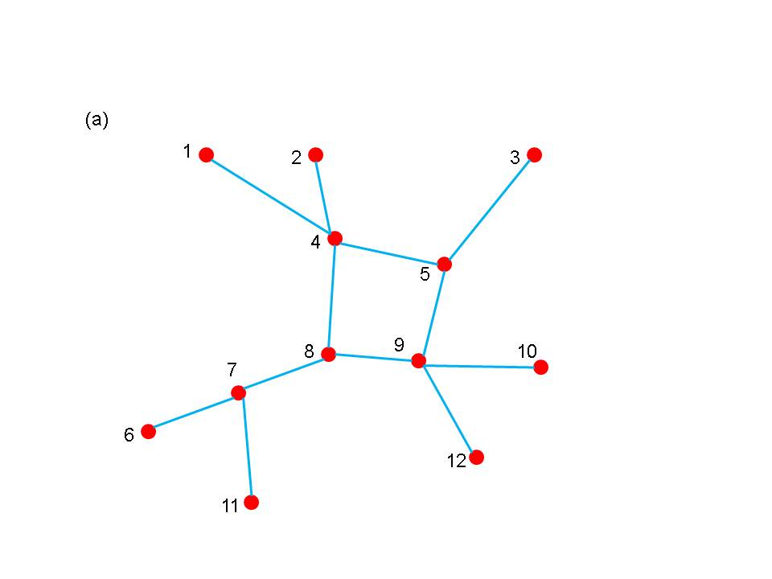
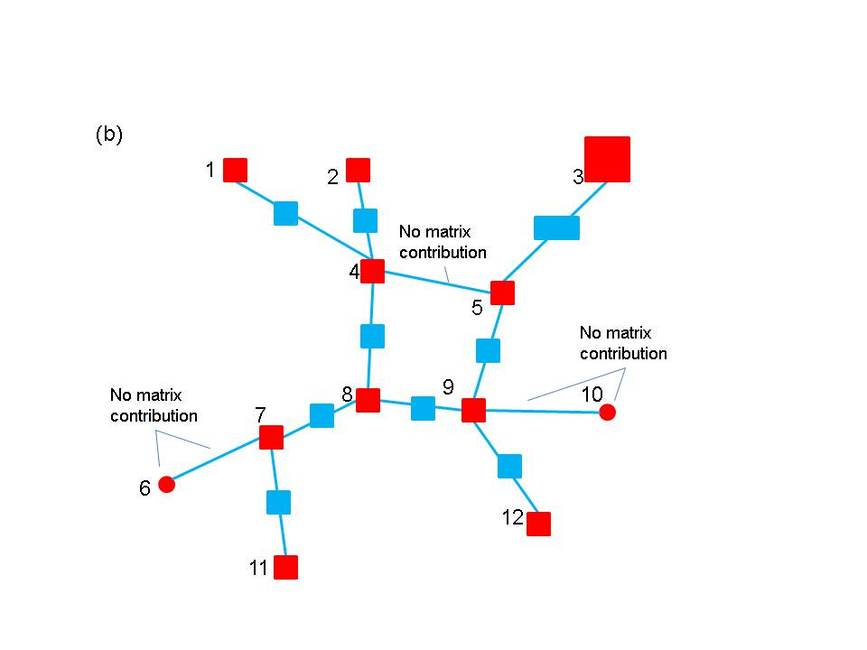
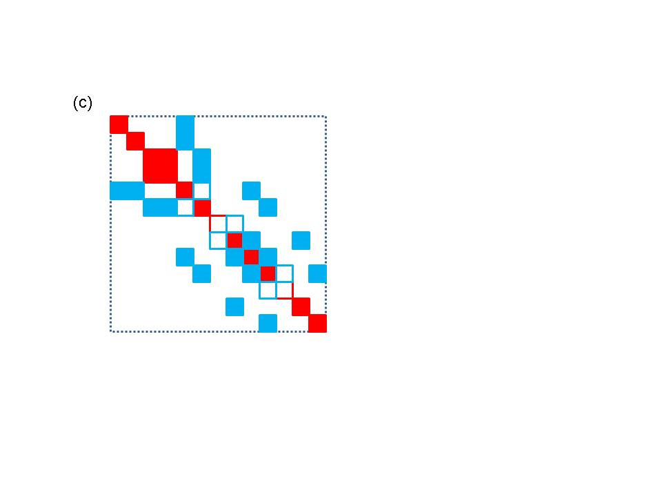
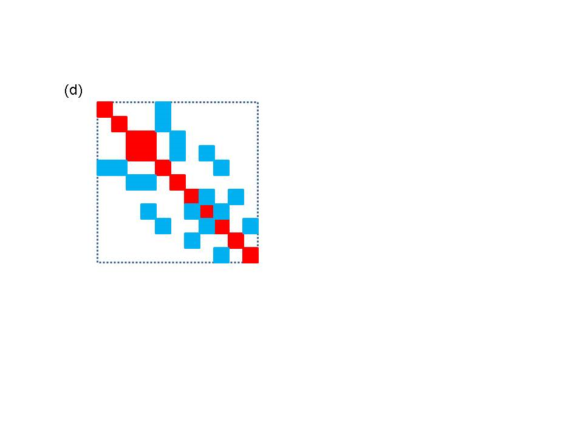
The most complex part of generating matrices and vectors is implementing the functions in the MatVecInterface. Once this has been done, actually creating matrices and vectors using the mappers is quite simple. The MatVecInterface is associated with two mappers, one that creates matrices from buses and branches and a second that can create vectors from buses. Both mappers are templated objects based on the type of network being used and use the gridpack::mapper namespace. The FullMatrixMap object runs over both buses and branches to set up a matrix. The constructor is
FullMatrixMap<MyNetwork>(boost::shared_ptr<MyNetwork> network)
The network is passed in to the object via the constructor. The constructor sets up a number of internal data structures based on what mode has been set in the network components. For example, for a power flow application where it might be necessary to create both a Y-matrix and a Jacobian matrix, it would be necessary to create two mappers. If the first mapper is created while the mode is set to construct the Y-matrix, then it will be necessary to instantiate a second mapper to create the Jacobian for a power flow calculation. Before instantiating the second matrix, the mode should be set to Jacobian. Once the mapper has been created, a complex matrix can be generated using the call
boost::shared_ptr<gridpack::math::Matrix> mapToMatrix(bool isDense = false)
This function creates a new matrix and returns a pointer to it. The parameter isDense can be set to true if a matrix that is stored internally using a dense representation is desired. The corresponding function call for real matrices is
boost::shared_ptr<gridpack::math::RealMatrix> mapToRealMatrix(bool isDense = false)
If a matrix already exists and it is only necessary to update the values, then the functions
void mapToMatrix( boost::shared_ptr<gridpack::math::Matrix> &matrix) void mapToRealMatrix( boost::shared_ptr<gridpack::math::RealMatrix> &matrix) void mapToMatrix(gridpack::math::Matrix &matrix) void mapToRealMatrix(gridpack::math::RealMatrix &matrix)
can be used. These functions use the existing matrix data structures and overwrite the values of individual elements. For these to work, it is necessary to use the same mapper that was used to create the original matrix and to have the same mode set in the network components.
Additional operations that can be used on existing matrices include
void overwriteMatrix(boost::shared_ptr<gridpack::math::Matrix> matrix) void overwriteRealMatrix(boost::shared_ptr<gridpack::math::RealMatrix> matrix) void overwriteMatrix(gridpack::math::Matrix &matrix) void overwriteRealMatrix(gridpack::math::RealMatrix &matrix) void incrementMatrix(boost::shared_ptr<gridpack::math::Matrix> matrix) void incrementRealMatrix(boost::shared_ptr<gridpack::math::RealMatrix> matrix) void incrementMatrix(gridpack::math::Matrix &matrix) void incrementRealMatrix(gridpack::math::RealMatrix &matrix)
These operations are designed to support making small changes in an existing matrix instead of reconstructing the full matrix from scratch. This can happen in contingency calculations or simulations of faults where a single grid element goes out or changes value. Instead of rebuilding the entire matrix, it is possible to modify only a small portion if it. To use these functions, it is necessary to define at least two modes in the network components. The first mode is used to build the original matrix, the second is used to make changes. All MatVecInterface functions that return true using the second mode (the one making changes) must return true for the first mode (used to build the original matrix). Furthermore, all block sizes for the second mode must match the block sizes in the first mode. The overwriteMatrix functions replace the values in the matrix with the values returned by the MatVecInterface functions, the incrementMatrix functions add these values to whatever is already in the matrix.
The vector mapper works in an entirely analogous way to the matrix mapper. The constructor for the BusVectorMap class is
BusVectorMap<MyNetwork>(boost::shared_ptr<MyNetwork> network)
and the function for building a new vector is
boost::share_ptr<gridpack::math::Vector> mapToVector() boost::share_ptr<gridpack::math::RealVector> mapToRealVector()
The functions for overwriting the values of an existing vector are
void mapToVector( boost::shared_ptr<gridpack::math::Vector> &vector) void mapToRealVector( boost::shared_ptr<gridpack::math::RealVector> &vector) void mapToVector(gridpack::math::Vector &vector) void mapToRealVector(gridpack::math::RealVector &vector)
The vector map can also be used to write values back to buses using the function
void mapToBus(const gridpack::math::Vector &vector) void mapToBus(const gridpack::math::RealVector &vector)
This function will copy values from the vector into the bus using the setValues function in the MatVecInterface.
The parser modules are designed to read an external network file, set up the network topology and assign any parameter fields in the file to simple fields. The parsers do not partition the network, they are only responsible for reading in the network and distributing the different network elements in a way that guarantees that not too much data ends up on any one processor. The parsers are also not responsible for determining if the input is compatible with the analysis being performed. This can be handled, if desired, by building checks into the network factory. The parsers are only responsible for determining if they can read the file.
Currently, GridPACK supports five file formats. Files based on the PSS/E PTI version 23, 33, 34 and 35 formats can be read in using the classes PTI23_parser, PTI33_parser, PTI34_parser, and PTI35_parser. These parsers can also read PSS/E formatted .dyr files that are used to read in extra parameters used in dynamic simulation. In addition, there is a parser that can read MatPower formatted files, MAT_Parser. The parsers are templated classes that again use the network type as a template argument. All parsers are located in the gridpack::parser namespace. These classes have only a few important functions. The first are the constructors
PTI23_parser<MyNetwork>(boost::shared_ptr<MyNetwork> network) PTI33_parser<MyNetwork>(boost::shared_ptr<MyNetwork> network) PTI34_parser<MyNetwork>(boost::shared_ptr<MyNetwork> network) PTI35_parser<MyNetwork>(boost::shared_ptr<MyNetwork> network) MAT_parser<MyNetwork>(boost::shared_ptr<MyNetwork> network)
The remaining functions are common to all parsers. To read a PSS/E PTI file containing a network configuration and generate a network, the parser calls the method
void parse(const std::string &filename)
where filename refers to the location of the network configuration file. To use this parser, the network object with the appropriate bus and branch classes is instantiated and then passed to the constructor of the parser object. The parse method is then invoked with the name of the network configuration file passed in as an argument and the network is filled out with buses and branches. The parameters in the network configuration file are stored as key-value pairs in the DataCollection object associated with each bus and branch. Once the network partition method has been called, the network is fully distributed and ghost buses and branches have been created. Other operations operations can then be performed. A variant on parse is the command
void externalParse(const std::string &filename)
This command can be used to parse .dyr files containing dynamic simulation parameters. The difference between this function and parse is that externalParse assumes that the network already exists and that the parameters that are read in will be added to it. This command should therefore only be called after a network has been created using parse.
As discussed in section 4.5, another key part of the parsing capability is the dictionary.hpp file.
This is designed to provide a common nomenclature for parameters associated with
power grid components. The definitions in the dictionary.hpp and the files in the
src/parser/variable_defs subdirectory are used to extract parameters from the
DataCollection objects created by the parser. For example, the parameter describing the
resistance of a transmission element is given the common name BRANCH_R. This string is
defined as a macro in the variable_defs/branch_defs.hpp, which provides compile
time error checking on the name. The goal of using the dictionary is that all parsers
will eventually store the branch resistance parameter in the DataCollection object
using this common name. Applications can then switch easily between different network
configuration file formats by simply exchanging parsers, which will all store corresponding
parameters using a common naming convention that can used within the code to access
data.
The serial IO module is designed to provide a simple mechanism for writing information from selected buses and/or branches to standard output or a file using a consistent ordering scheme. Individual buses and/or branches implement a write method that will write bus/branch information to a single string. This information usually consists of bus or branch identifiers plus some parameters that are desired in the output. The serial IO module then gathers this information, moves it to the head node, and writes it out in a consistent order. An example of this type of output is shown in Figure 4.8.
Bus Voltages and Phase Angles Bus Number Phase Angle Voltage Magnitude 1 0.000000 1.060000 2 -4.982589 1.045000 3 -12.725100 1.010000 4 -10.312901 1.017671 5 -8.773854 1.019514 6 -14.220946 1.070000 7 -13.359627 1.061520 8 -13.359627 1.090000 9 -14.938521 1.055932 10 -15.097288 1.050985 11 -14.790622 1.056907 12 -15.075585 1.055189 13 -15.156276 1.050382 14 -16.033645 1.035530
Note that the output is ordered by bus index (which matches the ordering of the buses in the original network configuration file). This ordering would be preserved regardless of the number of processors used in the calculation.
Like the mapper, the serial IO classes are relatively easy to use. Most of the complexity is associated with implementing the serialWrite methods in the buses and branches. Data can be written out for buses and/or branches using either the SerialBusIO class or the SerialBranchIO class. These are again templated classes that take the network as an argument in the constructor. Both classes reside in the gridpack::serial_io namespace. The SerialBusIO constructor has the form
SerialBusIO<MyNetwork>(int max_str_len, boost::shared_ptr<MyNetwork> network)
The variable max_str_len is the length, in bytes, of the maximum size string you would want to write out using this class and network is a pointer to the network that is used to generate output. The value of max_str_len is used to allocate internal memory and also determines how much data needs to be moved around each time data from the entire network is written out. As the value of this parameter increases, the amount of memory needed and the amount of data that needs to move increases, so this value should be kept to a minimum, if possible.
Two additional functions can be used to actually generate output. They are
void header(const char *string) const
and
void write(const char *signal = NULL)
The header method is a convenience function that will only write the buffer string from the head processor (process 0) and can be used for creating the headings above an output listing. The write function traverses all the buses in the network and writes out the strings generated by the serialWrite methods in the buses. The SerialBusIO object is responsible for reordering these strings in a consistent manner, even if the buses are distributed over many processors. The optional variable “signal” is passed to the serialWrite methods and can be used to control what output is listed. For example, in one part of a simulation it might be desirable to list the voltage magnitude and phase angle from a powerflow calculation and in another part of the calculation to list the rotor angle for a generator. These two outputs could be distinguished from each other in the serialWrite function using the signal variable.
To generate the output in Figure 4.8, the following calls are used
gridpack::serial_io::SerialBusIO<MyNetwork> busIO(128,network); busIO.header("\n Bus Voltages and Phase Angles\n"); busIO.header( "\n Bus Number Phase Angle Voltage Magnitude\n"); busIO.write();
The first call creates the SerialIOBus object and specifies the internal buffer size (128 bytes). This buffer must be large enough to incorporate the output from any call to one of the serialWrite calls in the bus components. The next two lines print out the header on top of the bus listing and the last line generates the listing itself. The serialWrite implementation looks like
bool gridpack::myapp::MyBus::serialWrite(char *string, const int bufsize, const char *signal) { double pi = 4.0*atan(1.0); double angle = p_a*180.0/pi; sprintf(string, " %6d %12.6f %12.6f\n", getOriginalIndex(),angle,p_v); return true; }
For this simple case, signal is ignored as well as the variable bufsize. The return value of the function is set to true. If more than one type of bus listing is desired, additional conditions based on the value of signal could be included. For the case of generators, the length of the output may vary from one bus to the next since buses can have different numbers of generators associated with them. It may therefore be important to check the length of the output string being generated against the size of the buffer to make sure there is no overwrite and to take some kind of appropriate action if there is. Output from generators is also conditional on the bus having some generators. In this case, the return value, true or false can be used to signal whether of not the bus is returning some data.
If you wish to direct the output to a file, then calling the function
void open(const char *filename)
will direct all output from the serial IO object to the file specified in the variable filename. Similarly, calling the function
void close(void)
will close the file and all subsequent writes are directed back to standard output. The same SerialBusIO object can be used to write data to multiple different files, as long as the files are opened and closed sequentially. If two files need to be used at the same time, then two SerialBusIO objects need to be created. Two additional methods can be used to further control where output goes. If a file already exists, you can use the function
boost::shared_ptr<std::ofstream> getStream()
to recover a pointer to the file stream currently being used by the SerialBusIO object. This can then be used to redirect output from some other part of the code to the same file. The function
void setStream(boost::shared_ptr<std::ofstream> stream)
can be used to redirect the output from the SerialIOBus object to an already existing file. The main use of these two functions is to direct the output from both buses and branches to the same file instead of standard output. The SerialBranchIO module is similar to the SerialBusIO module but works by creating listings for branches. The constructor is
SerialBranchIO<MyNetwork>(int max_str_len, boost::shared_ptr<MyNetwork> network)
and the header and write methods are
void header(const char *string) const void write(const char *signal = NULL)
These have exactly the same behavior as in the SerialBusIO class. Similarly, the methods
void open(const char *filename) void close(void) boost::shared_ptr<std::ofstream> getStream() void setStream(boost::shared_ptr<std::ofstream> stream)
can be used to redirect output to a file instead of standard output.
The usual method for directing the output from both a SerialBusIO object and SerialBranchIO object to the same file is to use the calling sequence
SerialBusIO<MyNetwork> busIO(max_str_len, network); SerialBranchIO<MyNetwork> branchIO(max_str_len, network); busIO.open("file.dat"); branchIO.setStream(busIO.getStream());
The file can be closed by calling close from either busIO or branchIO. In some cases it may be useful to use the serial IO module to extract information from the network to a data structure that can then be used in some other analysis. This can be done in the case of the contingency analysis to get a list of properties for all buses or branches in the system that can then be used as input to some other module. Instead of writing the strings to a file, the output can be sent to a vector of strings instead, where each string in the vector represents the output from a single bus or branch. The individual strings in the vector can then be parsed to extract properties of individual buses or branches. For both the SerialBusIO class and SerialBranchIO classes, the method is
std::vector<std::string> writeStrings(const char *signal = NULL)
If the output describes the properties of something like generators or individual transmission lines, each string may describe multiple devices. Note that this vector is only produced on one processor (corresponding to rank 0 on whatever communicator the network is using). Other processors will have a zero length vector. The contents of each string can then be parsed to extract other parameters (see section 6.7 on String Utilities for some useful tools for doing this). The powerflow output described above can be parsed to get the voltage magnitude and phase angle on each bus. This information can then be stored in a vector that can be saved to the GlobalStore or StatBlock data structures described described in sections 6.9 and 6.12.
The configuration module is designed to provide a central mechanism for directing information from the input file to the components making up a given application. For example, information about convergence thresholds and maximum numbers of iterations might need to be picked up by the solver module from an external configuration file. The configuration module is designed to read files using a simple XML format that supports a hierarchical input. This can be used to control which input gets directed to individual objects in the application, even if the object is a framework component and cannot be modified by the application developer.
The Configuration class is in the namespace gridpack::utility. This class follows the C++ singleton pattern and does not have a public constructor. The static method configuration() returns a pointer to the shared instance of this class and guarantees that the same instance is used by all modules in an application. The shared instance can be initialized with data from an external file using the code
gridpack::utility::Configuration * c = gridpack::utility::Configuration::configuration() ; c->open(input_file, comm);
where comm is a GridPACK Communicator.
The input file uses XML syntax. The single top-level element must be named “Configuration” but other elements may have module- and application-specific names. Refer elsewhere in this document for details. For illustration purposes, an example configuration file for a power flow calculation might look like:
<?xml version="1.0" encoding="utf-8"?> <Configuration> <PowerFlow> <networkConfiguration> IEEE118.raw </networkConfiguration> </PowerFlow> <DynamicSimulation> <StartTime> 0.0 </StartTime> <EndTime> 0.1 </EndTime> <TimeStep> 0.001 </TimeStep> <Faults> <Fault> <StartFault> 0.03 </StartFault> <EndFault> 0.06 </EndFault> <Branch> 3 7 </Branch> </Fault> <Fault> <StartFault> 0.07 </StartFault> <EndFault> 0.06=8 </EndFault> <Branch> 4 8 </Branch> </Fault> </Faults> </DynamicSimulation> </Configuration>
A value in this configuration file is accessed with a call to the overloaded method get(). The following line will return the value of the input file corresponding to the XML field ‘‘networkConfiguration’’
std::string s = c->get("Configuration.PowerFlow.networkConfiguration", "IEEE.raw");
The first argument has type Configuration::KeyType which is a typedef of std::string. Values are selected by hierarchically named “keys” using “.” as a separator. In the example input file, “PowerFlow” is a block under “Configuration” and “networkConfiguration” is, in turn, a block under “PowerFlow”. The second argument in get is a default value that is used if the field corresponding to the key can’t be found. There are overloaded versions of get() for accessing standard C++ data types: bool, int, long, float, double, ComplexType and std::string. For each type there are two variants. For integers these look like
int get(const KeyType &, int default_value) const ; bool get(const KeyType &, int *value) const;
The first variant takes a key name and a default value and returns either the value in the configuration file or the default value when none is specified. In the second variant, a Boolean value is returned indicating whether or not the value was in the configuration file and the second argument points to an object that is updated with the configuration value when it is present. For strings, the second argument is passed by reference.
The method getCursor(KeyType) returns a pointer to an internal element in the hierarchy. This “cursor” supports the same get() methods as above but the names are now relative to the name of the cursor. Thus, we might modify the previous example to:
Configuration::CursorPtr p = c->getCursor("Configuration.PowerFlow"); std::string s = p->get("networkConfiguration", "IEEE14.raw");
An additional use of such cursors is to access lists of values. The method
typedef std::vector<CursorPtr> ChildCursors; void children(ChildCursors &);
can be used to get a vector of all the elements that are children in the name hierarchy of some element. These children need not have unique names, as illustrated by the children of the “Faults” element shown in the XML file above. In this example, each of the children is a cursor that can be used to access “StartFault”, “EndFault”, and “Branch” parameters for each of the “Fault” blocks. Again, returning to the sample input above, the following code will return a list of faults
Configuration::CursorPtr p = c->getCursor("Configuration.DynamicSimulation.Faults"); ChildCursors faults; p->children(faults);
The cursor p is set so that is is pointing at the Faults block in the input. The children function then picks up all XML blocks on one level and returns a list of cursor pointers to those blocks. The individual data elements in faults can be accessed using the following loop
int nfaults = faults.size() for (int i=0; i<nfaults; i++) { double start = faults[i]->get("StartFault", 0.0); double end = faults[i]->get("EndFault", 0.0); std::string indices = faults[i]->get("Branch", "-1 -1"); // Do something with these parameters }
Note that this method does not have any way of distinguishing between different blocks below Faults and if two types of blocks where listed within the Faults block, the children method would pick up both of them.
The previous section outlined most of the basic modules in the GridPACK framework. In this section, we provide an overview of how to use these modules to create actual applications by discussing the development of a power flow simulation in detail. Actual examples of a power flow application can be found by looking at an example code located under the top-level GridPACK directory in src/applications/examples/powerflow. Users can also look at the power flow module located in the
src/applications/modules/powerflow
directory. The main difference between the power flow example code and the power flow module is that the module breaks up the power flow calculation into more separate function calls and the module also has options for using a non-linear solver. The power flow bus and branch classes are located in the directory src/applications/components/pf_matrix.
A schematic of a power flow code based on GridPACK is shown in Figure 5.1. For different power grid problems, the details of the code will be different, but most of these motifs will appear at some point or other. The main differences will probably be in feedback loops as results from one part of the calculation are fed back into other parts. For example, an iterative solver will need to update the current values of the network components, which can then be used to generate new matrices and vectors that are fed back into the next iteration of the solver. The diagram in Figure 5.1 is not complete, but gives an overall view of code structure and data movement.
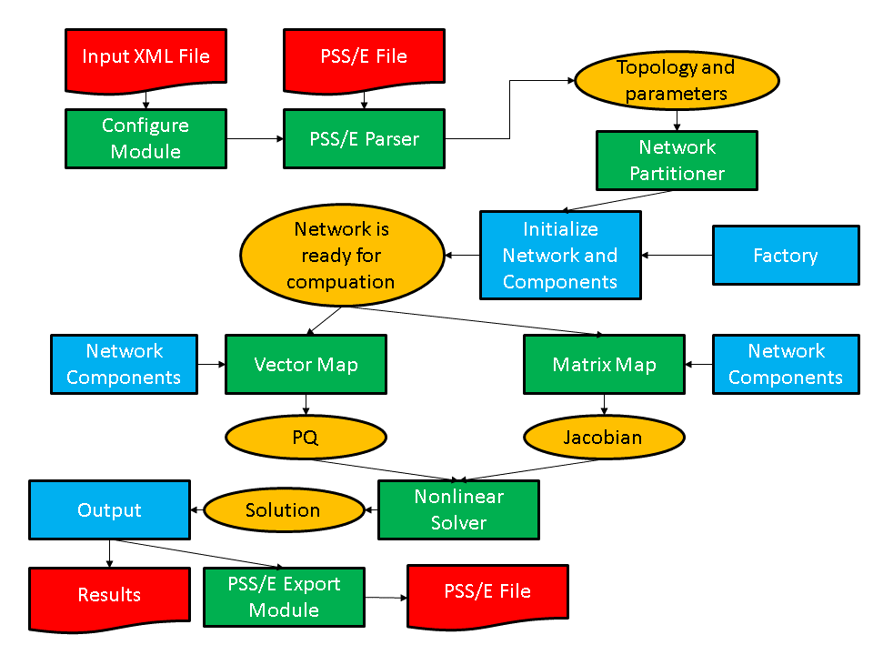
As shown in the figure, application developers will need to focus on writing two or three sets of modules. The first is the network components. These are the descriptions of the physics and/or measurements that are associated with buses and branches in the power grid network. The network factory is a module that initializes the grid components on the network after the network is originally created by the import module. The power flow problem is simple enough that it can use a non-linear solver directly from the math module but even a straightforward solution such as this requires the developer to overwrite some functions in the factory that are used in the non-linear solver iterations.
Most of the work involved in creating a new application is centered on creating the bus and branch classes. This discussion will describe in some detail the routines that need to be written in order to develop a working power flow simulation. Additional application modules for dynamic simulation and contingency analysis have also been included in the distribution and users are encouraged to look at these modules for additional coding examples on how to use GridPACK. The discussion below is designed to illustrate how to build an application and for brevity has left out some code compared to the working implementation. The source code contains more comment lines as well as some additional diagnostics that may not appear here. However, the overall design is the same and readers who have a good understanding of the following text should have no difficulty understanding the power flow source code.
For the power flow calculation, the buses and branches will be represented by the classes PFBus and PFBranch. PFBus inherits from the BaseBusComponent class, so it automatically inherits the BaseComponent and MatVecInterface classes as well. The first thing that must be done in creating the PFBus component is to overwrite the load function in the BaseComponent class. The original function is just a placeholder that performs no action. The load function should take parameters from the DataCollection object associated with each bus and use them to initialize the bus component itself. For the PFBus component, a simplified load function is
void gridpack::powerflow::PFBus::load( const boost::shared_ptr<gridpack::component ::DataCollection> &data) { data->getValue(CASE_SBASE, &p_sbase); data->getValue(BUS_VOLTAGE_ANG, &p_angle); data->getValue(BUS_VOLTAGE_MAG, &p_voltage); p_v = p_voltage; double pi = 4.0*atan(1.0; p_angle = p_angle*pi/180.0; p_a = p_angle; int itype; data->getValue(BUS_TYPE, &itype); if (itype == 3) { setReferenceBus(true); } bool lgen; int i, ngen, gstatus; double pg, qg; if (data->getValue(GENERATOR_NUMBER, &ngen)) { for (i=0; i<ngen; i++) { lgen = true; lgen = lgen && data->getValue(GENERATOR_PG, &pg,i); lgen = lgen && data->getValue(GENERATOR_QG, &qg,i); lgen = lgen && data->getValue(GENERATOR_STAT, &gstatus,i); if (lgen) { p_pg.push_back(pg); p_qg.push_back(qg); p_gstatus.push_back(gstatus); } } } }
This version of the load function has left off additional properties, such as shunts and loads and some transmission parameters, but it serves to illustrate how load is suppose to work. The load method in the base factory class will run over all buses, get the DataCollection object associated with each bus and then call the PFBus::load method using the DataCollection object as the argument. The parameters p_sbase, p_angle, p_voltage are private members of PFBus. The variables corresponding to the keys CASE_SBASE, BUS_VOLTAGE_ANG, BUS_VOLTAGE_MAG were stored in the DataCollection object when the network configuration file was parsed. They are retrieved from this object using the getValue functions and assigned to p_sbase, p_angle, p_voltage. Additional internal variables are also assigned in a similar manner. The value of the BUS_TYPE variable can be used to determine whether the bus is a reference bus. As mentioned previously, the CASE_SBASE etc. symbols are just preprocessor symbols that are defined in the dictionary.hpp file, which must be included in the file defining the load function. The dictionary.hpp and associated files can be found in the src/parser directory of the GridPACK distribution.
The variables referring to generators have a different behavior than the bus voltage variables. A bus can have multiple generators and these are stored in the DataCollection object with an index. The total number of generators on the bus is also stored in the DataCollection object with the key GENERATOR_NUMBER. First, the number of generators is retrieved and then a loop is set up so that all the generator variables can be accessed. The generator parameters are stored in local private arrays. The loop shows how the return value of the getValue function can be used to verify that all three parameters for a generator were found. If they aren’t found, then the generator is incomplete and the generator is not added to the local data. The boolean return value can also be used to determine if the bus has other properties and to set internal flags and parameters accordingly. The load function for the PFBranch is constructed in a similar way, except that the focus is on extracting branch related parameters from the DataCollection object.
Both the PFBus and PFBranch classes contain an application-specific function called setYBus that is used to set up values in the Y-matrix. There is also a function in the powerflow factory class that runs over all buses and branches and calls this function. The setYBus function in PFBus is
void gridpack::powerflow::PFBus::setYBus(void) { gridpack::ComplexType ret(0.0,0.0); std::vector<boost::shared_ptr<BaseComponent> > branches; getNeighborBranches(branches); int size = branches.size(); int i; for (i=0; i<size; i++) { gridpack::powerflow::PFBranch *branch = dynamic_cast<gridpack::powerflow::PFBranch*> (branches[i].get()); ret -= branch->getAdmittance(); ret -= branch->getTransformer(this); ret += branch->getShunt(this); } if (p_shunt) { gridpack::ComplexType shunt(p_shunt_gs,p_shunt_bs); ret += shunt; } p_ybusr = real(ret); p_ybusi = imag(ret); }
This function evaluates the contributions to the Y-Matrix associated with buses. The real and imaginary parts of this number are stored in the internal variables p_ybusr and p_ybusi. The subroutine first creates the local variable ret and then gets a list of pointers to neighboring branches from the BaseBusComponent function getNeighborBranches. The function then loops over each of the branches and uses the dynamic cast function in C++ to convert the BaseComponent pointer to a PFBranch pointer. Note that the cast is necessary since the getNeighborBranches function only returns a list of BaseComponent object pointers. The BaseComponent class does not contain application-specific functions such as getAdmittance. The getAdmittance, getTransformer and getShunt methods return the contributions from transmission elements, transformers, and shunts associated with the branch. These are accumulated into the ret variable.
The reason that the getAdmittance variable has no argument while both getTransformer and getShunt take the pointer “this” as an argument is that the admittance contribution from simple transmission elements is symmetric with respect to whether or not the calling bus is the “from” or “to” buses while the transformer and shunt contributions are not. This can be seen by examining the getTransformer function.
gridpack::ComplexType gridpack::powerflow::PFBranch::getTransformer( gridpack::powerflow::PFBus *bus) { gridpack::ComplexType ret(p_resistance,p_reactance); if (p_xform) { ret = -1.0/ret; gridpack::ComplexType a(cos(p_phase_shift),sin(p_phase_shift)); a = p_tap_ratio*a; if (bus == getBus1().get()) { ret = ret/(conj(a)*a); } else if (bus == getBus2().get()) { // ret is unchanged } } else { ret = gridpack::ComplexType(0.0,0.0); } return ret; }
The variables p_resistance, p_reactance, p_phase_shift, and p_tap_ratio are all internal variables that are set based on the variables read in from using the load method or are set in other initialization steps. The boolean variable p_xform variable is set to true in the PFBranch::load method if transformer-related variables are detected in the DataCollection objects associated with the branch, otherwise it is false.
The PFBranch version of the setYBus function is
void gridpack::powerflow::PFBranch::setYBus(void) { gridpack::ComplexType ret(p_resistance,p_reactance); ret = -1.0/ret; gridpack::ComplexType a(cos(p_phase_shift),sin(p_phase_shift)); a = p_tap_ratio*a; if (p_xform) { p_ybusr_frwd = real(ret/conj(a)); p_ybusi_frwd = imag(ret/conj(a)); p_ybusr_rvrs = real(ret/a); p_ybusi_rvrs = imag(ret/a); } else { p_ybusr_frwd = real(ret); p_ybusi_frwd = imag(ret); p_ybusr_rvrs = real(ret); p_ybusi_rvrs = imag(ret); } gridpack::powerflow::PFBus *bus1 = dynamic_cast<gridpack::powerflow::PFBus*>(getBus1().get()); gridpack::powerflow::PFBus *bus2 = dynamic_cast<gridpack::powerflow::PFBus*>(getBus2().get()); p_theta = (bus1->getPhase() - bus2->getPhase()); }
Note that the branch version of the setYBus function calculates different values Y-matrix contribution for the forward and reverse directions, where forward and reverse are defined depending on whether the first index in the Y-matrix element corresponds to bus 1 (the forward direction) or bus 2 (the reverse direction). These are stored in the separate variables p_ybusr_frwd and p_ybusi_frwd for the forward direction and p_ybusr_rvrs and p_ybusi_rvrs for the reverse direction. This routine also calculates the variable p_theta which is equal to the difference in the phase angle variable associated with the two buses at either end of the branch. This last variable provides an example of calculating a branch parameter based on the values of parameters located on the terminal buses.
The setYBus functions are used in the power flow components to set some basic parameters that eventually incorporated into the Jacobian matrix and PQ vector. These constitute the matrix and right hand side vector of the power flow equations. To build the matrix, it is necessary to implement the matrix size and matrix values functions in the MatVecInterface. The functions for setting up the matrix are discussed in detail below, the vector functions are simpler but follow the same pattern. The mode used for setting up the Jacobian matrix is “Jacobian”. The corresponding matrixDiagSize routine is
bool gridpack::powerflow::PFBus::matrixDiagSize(int *isize, int *jsize) const { if (p_mode == Jacobian) { *isize = 2; *jsize = 2; return true; } else if (p_mode == YBus) { *isize = 1; *jsize = 1; return true; } }
This function handles two modes, stored in the internal variable p_mode. If the mode equals Jacobian, then the function returns a contribution to a 22 matrix. In the case that the mode is “YBus” the function would return a contribution to a 11 matrix. (The Jacobian is treated as a real matrix where the real and complex parts of the problem are treated as separate variables, the Y-matrix is handle as a regular complex matrix). The corresponding code for returning the diagonal values is
bool gridpack::powerflow::PFBus::matrixDiagValues(ComplexType *values) { if (p_mode == YBus) { gridpack::ComplexType ret(p_ybusr,p_ybusi); values[0] = ret; return true; } else if (p_mode == Jacobian) { if (!getReferenceBus()) { values[0] = -p_Qinj - p_ybusi * p_v *p_v; values[1] = p_Pinj - p_ybusr * p_v *p_v; values[2] = p_Pinj / p_v + p_ybusr * p_v; values[3] = p_Qinj / p_v - p_ybusi * p_v; if (p_isPV) { values[1] = 0.0; values[2] = 0.0; values[3] = 1.0; } return true; } else { values[0] = 1.0; values[1] = 0.0; values[2] = 0.0; values[3] = 1.0; return true; } } }
In this implementation, the return values are of type ComplexType, even if they are real. For real values, the imaginary part is set to zero. If the mode is “YBus”, the function returns a single complex value. If the mode is “Jacobian”, the function checks first to see if the bus is a reference bus or not. If the bus is not a reference bus, then the function returns a 22 block corresponding to the contributions to the Jacobian matrix coming from a bus element. If the bus is a reference bus, the function returns a 22 identity matrix. This is a result of the fact that the variables associated with a reference bus are fixed. In fact, the variables contributed by the reference bus could be eliminated from the matrix entirely by returning false for both the matrix size and matrix values routines if the mode is “Jacobian” and the bus is a reference bus. This would also require some adjustments to the off-diagonal routines as well so that the size and matrix values routines for off-diagonal block both return false if either end of the branch is connected to the reference bus. There is an additional condition for the case where the bus is a “PV” bus. In this case one of the independent variables is eliminated by setting the off-diagonal elements of the block to zero and the second diagonal element equal to 1. The values are returned in column-major order, so values[0] corresponds to the (0,0) location in the 22 block, values[1] is the (1,0) location, values[2] is the (0,1) location and values[3] is the (1,1) location.
The matrixForwardSize and matrixForwardValues routines, as well as the corresponding Reverse routines, are implemented in the PFBranch class. These functions determine the off-diagonal blocks of the Jacobian and Y-matrix. The matrixForwardSize routine is given by
bool gridpack::powerflow::PFBranch::matrixForwardSize(int *isize, int *jsize) const { if (p_mode == Jacobian) { gridpack::powerflow::PFBus *bus1 = dynamic_cast<gridpack::powerflow::PFBus*>(getBus1().get()); gridpack::powerflow::PFBus *bus2 = dynamic_cast<gridpack::powerflow::PFBus*>(getBus2().get()); bool ok = !bus1->getReferenceBus(); ok = ok && !bus2->getReferenceBus(); if (ok) { *isize = 2; *jsize = 2; return true; } else { return false; } } else if (p_mode == YBus) { *isize = 1; *jsize = 1; return true; } }
If the mode is “YBus”, the size function returns a 11 block for the off-diagonal matrix block. For the Jacobian, this function first checks to see if either end of the branch is a reference bus by evaluating the Boolean variable “ok”. If neither end is the reference bus then the function returns a 22 block, if one end is the reference bus then the function returns false. The false value indicates that this branch does not contribute to the matrix. For this system, the matrixReverseSize function is the same. For applications that return a non-square block, the reverse function must transpose the block dimensions relative to the forward direction.
The matrixForwardValues function is
bool gridpack::powerflow::PFBranch::matrixForwardValues( ComplexType *values) { if (p_mode == Jacobian) { gridpack::powerflow::PFBus *bus1 = dynamic_cast<gridpack::powerflow::PFBus*>(getBus1().get()); gridpack::powerflow::PFBus *bus2 = dynamic_cast<gridpack::powerflow::PFBus*>(getBus2().get()); bool ok = !bus1->getReferenceBus(); ok = ok && !bus2->getReferenceBus(); if (ok) { double cs = cos(p_theta); double sn = sin(p_theta); values[0] = (p_ybusr_frwd*sn - p_ybusi_frwd*cs); values[1] = (p_ybusr_frwd*cs + p_ybusi_frwd*sn); values[2] = (p_ybusr_frwd*cs + p_ybusi_frwd*sn); values[3] = (p_ybusr_frwd*sn - p_ybusi_frwd*cs); values[0] *= ((bus1->getVoltage())*(bus2->getVoltage())); values[1] *= -((bus1->getVoltage())*(bus2->getVoltage())); values[2] *= bus1->getVoltage(); values[3] *= bus1->getVoltage(); bool bus1PV = bus1->isPV(); bool bus2PV = bus2->isPV(); if (bus1PV & bus2PV) { values[1] = 0.0; values[2] = 0.0; values[3] = 0.0; } else if (bus1PV) { values[1] = 0.0; values[3] = 0.0; } else if (bus2PV) { values[2] = 0.0; values[3] = 0.0; } return true; } else { return false; } } else if (p_mode == YBus) { values[0] = gridpack::ComplexType(p_ybusr_frwd,p_ybusi_frwd); return true; } }
For the “YBus” mode, the function simply returns the complex contribution to the Y-matrix. For the “Jacobian” mode, the function first determines if either end of the branch is connected to the reference bus. If it is, then the function returns false and there is no contribution to the Jacobian. If neither end of the branch is the reference bus then the function evaluates the 4 elements of the 22 contribution to the Jacobian coming from the branch. To do this, the branch needs to get the current values of the voltages on the buses at either end by using the getVoltage accessor functions that have been defined in the PFBus class. Finally, if one end or the other of the branch is a PV bus, then some variables need to be eliminated from the equations. This can be done by setting appropriate values in the 22 block equal to zero.
The matrixReverseValues function is similar to the matrixForwardValues functions with a few key differences. 1) the variables p_ybusr_rvrs and p_ybusi_rvrs are used instead of p_ybusr_frwd and p_ybusi_frwd 2) instead of using cos(p_theta) and sin(p_theta) the function uses cos(-p_theta) and sin(-p_theta) since p_theta is defined as difference in phase angle on bus 1 minus the difference in phase angle on bus 2 and 3) the values that are set to zero in the conditions for PV buses are transposed. The PV conditions are the same as the forward case if both bus 1 and bus 2 are PV buses, if only bus 1 is a PV bus then values[2] and values[3] are zero and if only bus2 is a PV bus then values[1] and values[3] are zero.
The functions for setting up vectors are similar to the corresponding matrix functions, although they are a bit simpler. The vector part of the MatVecInterface contains one function that does not have a counterpart in the set of matrix functions and that is the setValues function. This function can be used to push values in a vector object back into the buses that were used to generate the vector. For the Newton-Raphson method used to solve the power flow equations, it is necessary to push the current solution back into the buses at each iteration so they can be used to evaluate new Jacobian and right hand side vectors. The solution vector contains the current increments to the voltage and phase angle. These are written back to the buses using the function
void gridpack::powerflow::PFBus::setValues( gridpack::ComplexType *values) { p_a -= real(values[0]); p_v -= real(values[1]); *p_vAng_ptr = p_a; *p_vMag_ptr = p_v; }
If the matrix equation Ax = b is being solved, then the mapper used to create the right hand side vector b should be used to push results back onto the buses using the mapToBus method. The setValues method above takes the contributions from the solution vector and uses then to decrement the internal variables p_a (voltage angle) and p_v (voltage magnitude). The new values of p_a and p_v are then assigned to the buffers p_vAng_ptr and p_vMag_ptr so that they can be exchanged with other buses. This is discussed below.
The two routines that need to be created in the PFBus class to copy data to ghost buses are both simple. There is no need to create corresponding routines in the PFBranch class since branches do not exchange data in the power flow calculation. Two values need to be exchanged between buses, the current voltage angle and the current voltage magnitude. This requires a buffer that is the size of two doubles so the getXCBufSize function is written as
int gridpack::powerflow::PFBus::getXCBufSize(void) { return 2*sizeof(double); }
The setXCBuf assigns the buffer created in the base factory setExchange function to internal variables used within the PFBus component. It has the form
void gridpack::powerflow::PFBus::setXCBuf(void *buf) { p_vAng_ptr = static_cast<double*>(buf); p_vMag_ptr = p_vAng_ptr+1; *p_vAng_ptr = p_a; *p_vMag_ptr = p_v; }
The buffer created in the setExchange routine is split between the two internal pointers p_vAng_ptr and p_vMag_ptr. These are then initialized to the current values of p_a and p_v. Whenever the updateBuses routine is called, the buffers on the ghost buses are refreshed with the current values of the variables from the processes that own the corresponding buses. Note that both the getXCBufSize and the setXCBuf routines are only called during the setExchange routine. They are not called during the actual bus updates.
One final function in the PFBus and PFBranch class that is worth taking a brief look at is the set mode function. This function is used to set the internal p_mode variable that is defined in both classes. The PFMode enumeration, which contains both the “YBus” and “Jacobian” modes, is defined within the gridpack::powerflow namespace. The setMode function for both buses and branches has the form
void gridpack::powerflow::PFBus::setMode(int mode) { p_mode = mode; }
This function is triggered on all buses and branches if the setMode method in the factory class is called. Once the PFBus and PFBranch classes have been defined, it is possible to define a PFNetwork using a typdef statement. This can be done using the line
typedef network::BaseNetwork<PFBus, PFBranch > PFNetwork;
in the header file declaring the PFBus and PFBranch classes. This type can then be used in other powerflow files that need to create objects from templated classes.
The discussion above summarizes many of the important functions in the PFBus and PFBranch classes. Additional functions are included in these classes that are not discussed here, but the basic principles involved in implementing the remaining functions have been covered.
The first part of creating a new application is writing the network component classes. The second part is implementing the application-specific factory. For the power flow application, this is the PFFactory class, which inherits from the BaseFactory class. Most of the important functionality in PFFactory is derived from the BaseFactory class and is used without modification, but several application-specific functions have been added to PFFactory that are used to set internal parameters in the network components. As an example, consider the setYBus function
void gridpack::powerflow::PFFactory::setYBus(void) { int numBus = p_network->numBuses(); int numBranch = p_network->numBranches(); int i; for (i=0; i<numBus; i++) { p_network->getBus(i).get()->setYBus(); } for (i=0; i<numBranch; i++) { p_network->getBranch(i).get()->setYBus(); } }
This function loops over all buses and branches and invokes the setYBus method in the individual PFBus and PFBranch objects. The first two lines in the factory setYBus method get the total number of buses and branches on the process. A loop over all buses on the process is initiated and a pointer to the bus object is obtained via the getBus bus method in the BaseNetwork class. This pointer is returned as a pointer of type PFBus, so it is not necessary to do a dynamic cast on it and the setYBus method, which is not part of the base class, can be invoked. The same set of steps is then repeated for the branches. The factory can be used to create other methods that invoke functions on buses and/or branches.
Most of these functions follow the same general form as the setYBus method just described. The last part of building an application is creating the top level application driver that actually instantiates all the objects used in the calculation and controls the program flow. Running the code is broken up into two parts. The first is creating a main program and the second is creating the application driver. The main routine is primarily responsible for initializing the communication libraries and creating the application object, the application object then controls the application itself. The main program for the powerflow application is
main(int argc, char **argv) { gridpack::parallel::Environment env(argc,argv); { gridpack::powerflow::PFApp app; app.execute(); } }
The first line in this program creates a variable of type Environment that initializes the MPI and GA communication libraries as well as the math initialization routine (the initialization happens in the constructor, so all that is necessary is to create the variable). More can be found out about the Environment class in Section 6.2. The code then instantiates a power flow application object and calls the execute method for this object. The remainder of the power flow application is contained in the PFApp::execute method. Finally, when the application has finished running, the main program cleans up the communication and math libraries. The communication libraries are handled when the env variable goes out of scope and calls the Environment destructor. The main reason for breaking the code up in this way instead of including the execute function as part of main is to force the invocation of all the destructors in the GridPACK objects used to implement the application. Otherwise, these destructors get called after the communication libraries have been finalized and the program will fail to exit cleanly.
The top level control of the application is embedded in the power flow execute method. The execute method starts off with the code
gridpack::parallel::Communicator world; boost::shared_ptr<PFNetwork> network(new PFNetwork(world)); gridpack::utility::Configuration *config = gridpack::utility::Configuration::configuration(); config->open("input.xml",world); gridpack::utility::Configuration::Cursor *cursor; cursor = config->getCursor("Configuration.Powerflow"); std::string filename; if (!cursor->get("networkConfiguration", &filename)) { printf("No network configuration specified\n"); return; } gridpack::parser::PTI23_parser<PFNetwork> parser(network); parser.parse(filename.c_str()); network->partition();
The first two lines create a communicator for this application and use it to instantiate a PFNetwork object (note that this is really a BaseNetwork template class that is instantiated using the PFBus and PFBranch classes as template arguments). The network object exists but has no buses or branches associated with it. The next few lines get an instance of the configuration object and use this to open the input.xml file. This filename has been hardwired into this implementation but it could be passed in as a runtime argument, if desired. The code then creates a Cursor object and initializes this to point into the Configuration.Powerflow block of the input.xml file. The cursor can then be used to get the contents of the networkConfiguration block in input.xml, which corresponds to the name of the network configuration file containing the power grid network. This file is assumed to use the PSS/E version 23 format. After getting the file name, the code creates a PTI23_parser object and passes in the current network object as an argument. When the parse method is called, the parser reads in the file specified in filename and uses that to add buses and branches to the network object. The network now has all the bus and branches from the configuration file, but no ghost buses or branches exist and buses and branches are not distributed in an optimal way. Calling the partition method on the network distributes the buses and branches and adds appropriate ghost buses and branches.
The next set of calls initialize the network components and prepare the network for computation.
gridpack::powerflow::PFFactory factory(network); factory.load(); factory.setComponents(); factory.setExchange(); network->initBusUpdate(); factory.setYBus();
The first call creates a PFFactory object and instantiates it with a reference to the current network. PFFactory inherits from the BaseFactory class and assumes that a PFNetwork is used as the template argument for the BaseFactory. The next line calls the BaseFactory load method which invokes the component load method on all buses and branches. These methods use data from the DataCollection objects to initialize the corresponding bus and branch objects. Note that when the partition function creates the ghost bus and branch objects, it copies the associated DataCollection objects to these ghosts so the parameters from the network configuration file are available to instantiate all objects in the network. There is no need to do a data exchange at this point in the code in order to get current values on the ghost objects.
The next two calls are implemented in the BaseFactory class. The setComponents method sets up pointers in the network components that point to neighboring branches and buses (in the case of buses) and terminal buses (in the case of branches). It is also responsible for setting up internal indices that are used by the mapper functions to create matrices and vectors. The setExchange method sets up the buffers that are used to exchange data between locally owned buses and branches and their corresponding ghost images on other processors. The call to initBusUpdate creates internal data structures that are used to exchange bus data between processors and the final factory call to setYBus evaluates the Y-matrix contributions from all network components. The network is fully initialized at this point and ready for computation.
The next calls create the matrices used in the Newton-Raphson iteration loop.
factory.setSBus(); factory.setMode(RHS); gridpack::mapper::BusVectorMap<PFNetwork> vMap(network); boost::shared_ptr<gridpack::math::Vector> PQ = vMap.mapToVector(); factory.setMode(Jacobian); gridpack::mapper::FullMatrixMap<PFNetwork> jMap(network); boost::shared_ptr<gridpack::math::Matrix> J = jMap.mapToMatrix(); boost::shared_ptr<gridpack::math::Vector> X(PQ->clone());
The factory calls the setSBus method that sets some additional network component parameters used in the RHS vector (again, by looping over all buses and invoking a setSBus method on each bus). The next three lines set the mode to “RHS”, create a BusVectorMap object and create the right hand side vector in the powerflow equations using the mapToVector method. This builds the vector based on the “RHS” mode. The next three lines create the Jacobian using the same pattern as for the Y-matrix. The mode gets set to “Jacobian”, another FullMatrixMap object is created and this is used to create the Jacobian using the mapToMatrix method. The last line creates a new vector by cloning the PQ vector. The X vector has the same dimension and data layout as PQ so it could be used with the vMap object.
This application only creates one matrix so only one FullMatrixMap object is needed. If multiple matrices are required by an application then multiple FullMatrixMap objects may need to be created, one for each matrix. In the case that multiple matrices have exactly the same dimensions and fill pattern, it may be possible to reuse a mapper for more than one matrix, but this will generally not be the case.
Once the vectors and matrices for the problem have been created and set to their initial values, it is possible to start the Newton-Raphson iterations. The code to set up the first Newton-Raphson iteration is
double tolerance = 1.0e-6; int max_iteration = 100; ComplexType tol; gridpack::math::LinearSolver solver(*J); solver.configure(cursor); int iter = 0; X->zero(); solver.solve(*PQ, *X); tol = PQ->normInfinity();
The first three lines define some parameters used in the Newton-Raphson loop. The tolerance and maximum number of iterations are hardwired in this example but could be made configurable via the input deck using the Configuration class. The next line creates a linear solver based on the current value of the Jacobian, J. The call to the configure method allows configuration parameters in the input file to be passed directly to the newly created solver. The iteration counter is set to zero and the value of X is also set to zero. The linear solver is called with PQ as the right hand side vector and X as the solution. An initial value of the tolerance is set by evaluating the infinity norm of PQ. The calculation can now enter the Newton-Raphson iteration loop
while (real(tol) > tolerance && iter < max_iteration) { factory.setMode(RHS); vMap.mapToBus(X); network->updateBuses(); vMap.mapToVector(PQ); factory.setMode(Jacobian); jMap.mapToMatrix(J); X->zero(); solver.solve(*PQ, *X); tol = PQ->normInfinity(); iter++; }
This code starts by pushing the values of the solution vector back on to the buses using the same mapper that was used to create PQ. The network then calls the updateBus routine so that the ghost buses have new values of the voltage angle and magnitude parameters from the solution vector. New values of the Jacobian and right hand side vector are created based on the solution values from the previous iteration. Note that since J and PQ already exist, the mappers are just overwriting the old values instead of creating new data objects. The linear solver is already pointing to the Jacobian matrix so it automatically uses the new Jacobian values when calculating the solution vector X. If the norm of the new PQ vector is still larger than the tolerance, the loop goes through another iteration. This continues until the tolerance condition is satisfied or the number of iterations reaches the value of max_iteration.
If the Newton-Raphson loop converges, then the calculation is essentially done. The last part of the calculation is to write out the results. This can be accomplished using the code
factory.setMode(RHS); vMap.mapToBus(); network->updateBuses(); gridpack::serial_io::SerialBusIO<PFNetwork> busIO(128,network); busIO.header("\n Bus Voltages and Phase Angles\n"); busIO.header("\n Bus Number Phase Angle"); busIO.header(" Voltage Magnitude\n"); busIO.write();
The first three lines guarantee that current values of the solution vector are available on all buses. The final five lines create a serial bus IO object that assumes that no line of output will exceed more than 128 characters, write out the header for the output data and then write a listing of data from all buses. The data from each bus is generated by the serialWrite method defined in the PFBus class. A similar set of calls can be used to write out data from the branches. This completes the execute method and the overview of the power flow application.
The core operations supported by GridPACK have been described above and these can be used in to create many different kinds of power grid applications. This section will describe features that are more advanced but can be extremely useful in certain cases. Additional capabilities of the GridPACK framework include
Communicators and task managers that can be used to create multiple levels of parallelism and implement dynamic load balancing schemes
A generalized matrix-vector interface to handle applications where the dependent and independent variables are associated with both buses and branches. The MatVecInterface described above can only be used for systems where the dependent and independent variables are associated solely with buses
A “slab” matrix-vector interface for creating matrices based on multiple values on each of the network components. This can be used for algorithms such as Kalman filter
Profiling and error handling capabilities
A hashed data distribution capability that can be used to direct network data to the processors that own the corresponding network components
This functionality is described in more detail in the following sections.
The subject of communicators has already been mentioned in the context of the constructor for the BaseNetwork class. This section will describe communicators in more detail and will show how the GridPACK communicators can be used to partition a large calculation into separate pieces that all run concurrently. A communicator can crudely be though of as a communication link between a group of processors. Whenever a process needs to communicate with another process it needs to specify the communicator over which that communication will occur. When a parallel job is started, it creates a “world” communicator to which all processes implicitly belong. Any process can communicate with any other process via the world communicator. Other communicators can be created by an application and it is possible for a process to belong to multiple communicators. The concept of communicators is particularly important for restricting the scope of “global” operations. These are operations that require every process in the communicator to participate. Failure of a process to participate in the operation usually results in the calculation stalling because multiple processors are waiting for a communication from a process that is not part of the global operation. A program can remain in this state indefinitely. Many of the module functions in GridPACK represent global operations and contain embedded calls that act collectively on a communicator. In order for two separate calculations to proceed concurrently, they must be run on disjoint sets of processors using separate communicators.
The use of communicators to create multiple concurrent parallel tasks within an application is usually straightforward to implement but it is frequently much more confusing to understand. A diagram of a set of 16 processes that are divided into 4 groups each containing 4 processes is shown schematically in Figure 6.1. In this example, each subgroup could potentially execute a separate parallel task within the larger parallel calculation.
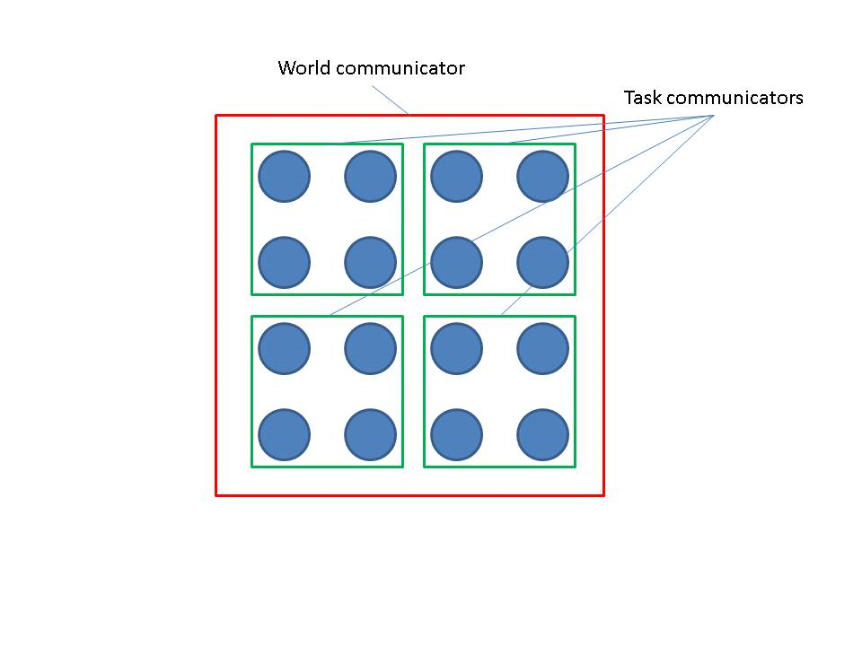
Global operations on the world communicator involve all 16 processes, global operations on one of the task communicators just involve the 4 processes in the group used to define the task communicator. If a network object is created on one of the task communicators, then a global operation such as the bus update only occurs between the 4 processes in the task communicator. The network object is, in a certain sense, “invisible” to the processes outside that communicator. If a network is created on a sub-communicator, then all objects derived from the network, such as factories, parsers, serial IO objects, etc. are also associated with the same sub-communicator.
The communicator supports some basic operations that are commonly used in parallel programming. GridPACK has been designed to minimize the amount of explicit communication that must be handled by application developers, but it is occasionally useful to have access to standard communication protocols in applications. In particular, it is useful to be able to divide a given communicator into a set of non-overlapping sub-communicators. The basic operations supported by the GridPACK communicator class are described below.
The GridPACK Communicator class is in the gridpack::parallel namespace. Several constructors for the communicator class are available. The simplest is
Communicator(void)
and takes no arguments. This constructor returns a communicator that is defined on the world group containing all processes available to the calculation. Other constructors take an argument and can be used to construct or copy communicators from a subset of processes. These include
Communicator(const Communicator& comm) Communicator(const boost::mpi::communicator& comm) Communicator(const MPI_Comm& comm)
The first constructor is a copy constructor and creates a separate instance of the communicator, the remaining two constructors allow users to create a communicator from MPI or Boost communicators. These can be useful if using GridPACK in conjunction with other parallel applications created outside the GridPACK framework.
Two basic functions associated with communicators are
int size(void) const
and
int rank(void) const
The first function returns the number of processors in the communicator and the second returns the index of the processor within the communicator. If the communicator contains N processes, then the rank will be an integer ranging from 0 to N-1. The process corresponding to rank 0 is often referred to as the head process or head node for the communicator. Note that if a process belongs to more than one communicator, its rank may differ depending on which communicator is being referred to. Information on size and rank is used extensively when explicitly programming in parallel. GridPACK has tried to abstract much of this programming so that developers do not need to pay attention to it, but it is still occasionally useful to be able to access these numbers. For example, the header function in the SerialIO classes is essentially equivalent to the following code fragment
Communicator comm; if (comm.rank() == 0) { printf("My message\n"); }
This code creates some output. If the condition was not there, the code would print out the message from all N processors in the world communicator and N copies of “My message” would appear in the output. The condition restricting the print statement to process 0 guarantees that the message appears only once.
A more important use of communicators is to divide up the world communicator into separate communicators that can be used to run independent parallel calculations. This is known as multi-level parallelism. Two functions can be used to split up an existing communicator into sub-communicators. The first is split
Communicator split(int color) const
This function divides the calling communicator into sub-communicators based on the color variable. All processors with the same value of the color variable end up in the same communicator. Thus, if 16 processors on the world communicator are divided up such that processes 0-3 are color 0, processes 4-7 are color 1, processes 8-11 are color 2 and processes 12-15 are color 3, then split will generate 4 sub-communicators from the world communicator such that 0-3 are on one communicator, 4-7 are on another communicator and so on. Note that this function divides the communicator completely into complementary pieces with all processes in the old communicator ending up in a new communicator and no process ending up in more than one new communicator.
A second function that can be used to decompose a communicator into sub-communicators is divide. This function has the form
Communicator divide(int nsize) const
Each sub-communicator returned by this function contains at most nsize processes. The function will try and create as many communicators of size nsize as possible. For example, if the calling communicator contains 10 processes and nsize is set to 4, then this function will create 3 sub-communicators, two of which contain 4 processors and one containing 2 processors.
An example of how communicators can be used to create multiple levels of parallelism is illustrated in Figure 11. The example has 8 tasks that can be evaluated independently. The first row in Figure 6.2 shows four processors. Two of the 8 tasks are run on each processor so if each task has been parallelized then it needs to run on a communicator with only 1 processor in it. The second row shows the same calculation running on 8 processors. In this case, each processor only has 1 task associated with it but each task is still running on a single processor. If the tasks have not been parallelized, then this is as far as you can go. However, if the tasks have been parallelized, then you can move on to the configuration shown in the third line using 16 processors. In this case, the system has been divided into 8 groups, each containing two processors. Each group has its own separate subcommunicator and each task can be run in parallel on two processors. This gives additional speed-up over what can be achieved by simply distributing tasks to separate processors.
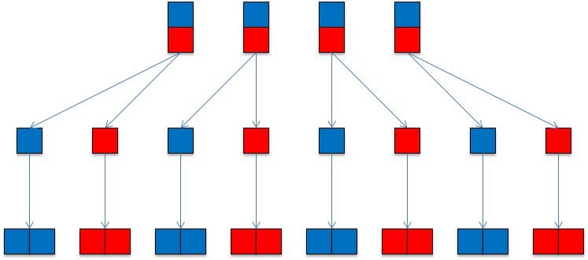
Additional functions are available for communicators that support basic parallel computing tasks. The objective of GridPACK is to abstract most aspects of parallel computing so that users do not need to deal with them directly, but there are some tasks, particularly those associated with collecting and organizing data, that are not difficult to program but are difficult to generalize. Some support for simple parallel operations is useful in these cases. The following operations can be used to sum data across all processors
void sum(float *x, int nvals) const void sum(double *x, int nvals) const void sum(int *x, int nvals) const void sum(long *x, int nvals) const void sum(ComplexType *x, int nvals) const
The array x holds the values to be summed and nvals is the number of values in x. This operation can be used to compute the total of some quantity after partial sums have been calculated on each processor. It can also be used to collect an array of values across a collection of processors by having each processor compute a portion of an array and then using the sum operation to create a complete copy of the array on all processors.
Maximum and minimum values can be calculated using the functions
void max(float *x, int nvals) const void max(double *x, int nvals) const void max(int *x, int nvals) const void max(long *x, int nvals) const void min(float *x, int nvals) const void min(double *x, int nvals) const void min(int *x, int nvals) const void min(long *x, int nvals) const
Again, a global maximum or minimum can be calculated by first computing the local maximum or minimum on each processor and then evaluating it across processors.
One other common parallel construct that may be useful in some contexts is the barrier or synchronization function. In GridPACK, this is available as the function
void sync() const
The sync function does not allow any processor in the communicator to proceed beyond this call until all processors in the communicator have reached the call. This is used in some parallel programming situations to guarantee a consistent state across all processors. In general, there should be relatively little need for this call in GridPACK. See, however, the comment below at the end of the section 6.9 on GlobalStore.
GridPACK applications need to initialize several libraries in order to execute properly. These can be initialized explicitly by the user in their application but they can also be initialized by creating a single Environment object at the start of the code. This module uses just the gridpack namespace. The constructor for this object will automatically call all the appropriate initialization functions for libraries used by GridPACK. This object can also be used to support an inline help message that can be used to document how to use the application.
There are two main constructors for this class
Environment(int argc, char **argv)
Environment(int argc, char **argv, const char* help)
The argc and argv arguments are the standard command line variables used in C and C++ main programs. These will be passed to the math library and MPI initialization. Other options can also be passed from the command line as well. Currently, the only command line options that are supported directly by the Environment class are -h and -help. If the application is invoked with these options, then the program will print out whatever information is stored in the help variable and then exit.
When using the Environment object to initialize GridPACK, it is important to set the main body of the code apart from the creation of the Environment object. The code should have a structure that looks like
int main(int argc, char **argv) { gridpack::Environment env(argc,argv); { // Main body of code goes here } return 0; }
This form guarantees that all objects created by the application are destroy first before the Environment destructor is called. This is important since otherwise the destructors for some objects in the application may be called after the Global Array or MPI environments have been shut down and if they rely on calls in the Global Array or MPI libraries, the application will not exit cleanly.
The task manager functionality is designed to parcel out tasks on a first come, first serve basis to processes in a parallel application. Each processor can request a task ID from the task manager and based on the value it receives, it will execute a block of work corresponding to the ID. The task manager guarantees that all IDs are sent out once and only once. The unique feature of the task manager is that if the tasks take unequal amounts of time, then processes with longer tasks will make fewer requests to the task manager than processes that have relatively short tasks. This leads to an automatic dynamic load balancing of the application that can substantially improve performance. The task manager also supports multi-level parallelism and can be used in conjunction with the sub-communicators described above to implement parallel tasks within a parallel application. An example of the use of communicators and task managers to create a code that uses multiple levels of parallelism can be found in the contingency analysis application that is part of the GridPACK distribution. This application is located in src/applications/examples/contingency_analysis.
Task managers use the gridpack::parallel namespace and can be created either on the world communicator or on a subcommunicator. Two constructors are available.
TaskManager(void) TaskManager(Communicator comm)
The first constructor must be called on all processors in the system and creates a task manager on the world communicator, the second is called on all processors within the communicator comm. Once the task manager has been created, the number of tasks must be set. This can be done with the function
void set(int ntask)
where the variable ntask corresponds to the total number of tasks to be performed. This call is collective on all processes in the communicator and each process must use the same value of ntask. The task IDs returned by the task manager will range from 0 to ntask-1.
Once the task manager has been created, task IDs can be retrieved from the task manager using one of the functions
bool nextTask(int *next) bool nextTask(Communicator &comm, int *next)
The first function is called on a single processor and returns the task ID in the variable next. The second is called on the communicator comm by all processors in comm and returns the same task ID on all processors (note that if all processors in comm called the first nextTask function, each processor in comm would end up with a different task ID). The communicator argument in the second nextTask call should be a subcommunicator relative to the communicator that was used to create the task manager. Both functions return true if the task manager has not run out of tasks, otherwise they return false and the value of next is set to -1.
The task manager also has a function
void printStats(void)
that can be used to print out information to standard out about how many tasks were assigned to each process. Thise function should be called collectively on all processes.
A simple code fragment shows how communicators and task managers can be combined to create an application exhibiting multi-level parallelism.
gridpack::parallel::Communicator world int grp_size = 4; gridpack::parallel::Communicator task_comm = world.divide(grp_size); App app(task_comm); gridpack::parallel::TaskManager taskmgr; taskmgr.set(ntasks); int task_id; while(taskmgr.nextTask(task_comm, &task_id) { app.execute(task_data[task_id]); }
This code divides the world communicator into sub-communicators containing at most 4 processes. An application is created on each task communicator and a task manager is created on the world group. The task manager is set to execute ntasks tasks and a while loop is created to execute each task. Each call to nextTask returns the same value of task_id to the processors in task_comm. This ID is used to index into an array task_data of data structures that contain the input data necessary to execute the task. The size of task_data corresponds to the value of ntasks. When the task manager runs out of tasks, the loop terminates. Note that this structure does not guarantee that tasks are mapped to processors in any fixed order. There is no guarantee that task 0 is executed on process 0 or that some process will execute a given number of tasks. If one task takes significantly longer than other tasks then it is likely that other processors will pick up work from the processors executing the longer task. This balances the workload if each process is involved in multiple tasks. Once the workload drops to 1 task per process, this advantage is lost. There is also no guarantee that if the calculation is repeated, that the same processes will end up executing the same tasks. However, the final results should be the same.
Profiling applications is an important part of characterizing performance, identifying bottlenecks and proposing remedies. Profiling in a parallel context is also extremely tricky. Unbalanced applications can lead to incorrect conclusions about performance when load imbalance in one part of the application appears as poor performance in another part of the application. This occurs because the part of the application that appears slow has a global operation that acts as an accumulation point for load imbalance. Nevertheless, the first step in analyzing performance is to be able to time different parts of the code. GridPACK provides a timer functionality that can help users do this. These modules are designed to do relatively coarse-grained profiling, they should not be used to time the inside of computationally intensive loops.
GridPACK contains two different types of timers. The first is a global timer that can be used anywhere in the code and accumulates all results back to the same place for eventual display. Users can get a copy of this timer from any point in the calculation. The second timer is created locally and is designed to only time portions of the code. The second class of timers was created to support task-based parallelism where there was an interest in profiling individual tasks instead of getting timing results averaged over all tasks. Both timers can be found in the gridpack::utility namespace.
The CoarseTimer class represents a timer that is globally accessible from any point in the code. A pointer to this timer can be obtained by calling the function
static CoarseTimer *instance()
A category within the timer corresponds to a portion of the code that is to be timed. A new category in the timer can be created using the command
int createCategory(const std::string title)
This command creates a category that is labeled by the name in the string title. The function returns an integer handle that can be used in subsequent timing calls. For example, suppose that all calls to function1 within a code need to be timed. The first step is to get an instance of the timer and create the category “Function1”
gridpack::utility::CoarseTimer *timer = gridpack::utilitity::CoarseTimer::instance(); int t_func1 = timer->createCategory("Function1");
This code gets a copy of the timer and returns an integer handle t_func1 corresponding to this category. If the category has already been created, then createCategory returns a handle to the existing category, otherwise it adds the new category to the timer.
Time increments can be accumulated to this category using the functions
void start(const int idx) void stop(const int idx)
The start command begins the timer for the category represented by the handle idx and stop turns the timer off and accumulates the increment. At the end of the program, the timing results for all categories can be printed out using the command
void dump(void) const
The results for each category are printed to standard out. An example of a portion of the output from dump for a power flow code is shown below.
Timing statistics for: Total Application Average time: 14.7864 Maximum time: 14.7864 Minimum time: 14.7863 RMS deviation: 0.0000 Timing statistics for: PTI Parser Average time: 0.1553 Maximum time: 1.2420 Minimum time: 0.0000 RMS deviation: 0.4391 Timing statistics for: Partition Average time: 2.8026 Maximum time: 2.9668 Minimum time: 1.7142 RMS deviation: 0.4398 Timing statistics for: Factory Average time: 1.2424 Maximum time: 1.2540 Minimum time: 1.2336 RMS deviation: 0.0056 Timing statistics for: Bus Update Average time: 0.0019 Maximum time: 0.0025 Minimum time: 0.0016 RMS deviation: 0.0003
For each category, the dump command prints out the average time spent in that category across all processors, the minimum and maximum times spent on a single processor and the RMS standard deviation from the mean across all processors. It is also possible to get more detailed output from a single category. The commands
void dumpProfile(const int idx) const void dumpProfile(const std::string title)
can both be used to print out how much time was spent in a single category across all processors. The first command identifies the category through its integer handle, the second via its name.
Some other timer commands also can be useful. The function
double currentTime()
returns the current time in seconds (if you want to do timing on your own). If you want to control profiling in different sections of the code the command
void configureTimer(bool flag)
can be used to turn timing off (flag = false) or on (flag = true). This can be used to restrict timing to a particular section of code and can be used for debugging and performance tuning.
In addition to the CoarseTimer class, there is a second class of timers called LocalTimer. LocalTimer supports the same functionality as CoarseTimer but differs from the CoarseTimer class in that LocalTimer has a conventional constructor. When an instance of a local timer goes out of scope, the information associated with it is destroyed. Apart from this, all functionality in LocalTimer is the same as CoarseTimer. The LocalTimer class was created to profile individual tasks in applications such as contingency analysis. Each contingency can be profiled separately and the results printed to a separate file. The only functions that are different from the CoarseTimer functions are the functions that print out results. The dumpProfile functions are not currently supported and the dump command has been modified to
void dump(boost::shared_ptr<ofstream> stream) const
This function requires a stream pointer that signifies which file the data is written to.
The math module has been implemented so that failures throw exceptions. These can be caught by other parts of code and managed so that code does something more graceful than simply crash when an error is encountered. For example, a calculation that fails because the solver throws an exception might try to run again using a different solver. In a contingency analysis calculation, a contingency that fails because the solver did not converge can be marked as a failed calculation and the code can proceed to the next contingency. This allows the code to evaluate all contingencies even if some do not converge. A solver exception can be handled using the following construct
LinearSolver solver(*A); // User code... try { solver.solve(*B,*X); } catch (const gridpack::Exception e) { // Do something to manage exception }
If the solve command fails, it throws a gridpack::Exception that can then be managed by the code. This could consist of simply exiting cleanly or the code could try and take corrective action by using a different algorithm.
Exceptions can also be added to error conditions that are detected in user written code so that the error can be picked up in some other part of the application and managed there. Exceptions have two constructors that can be used in applications
Exception(const std::string msg) Exception(const char* msg)
where msg is a text string describing the error that was encountered. This message can be read later using the function
const char* what()
Exceptions are usually created in user code using the following syntax
if (...some_condition_is_violated...) { throw gridpack::Exception("Describe error condition"); }
The error message can be printed out to standard out (or standard error) by catching the exception and calling what
try { // Some action } catch (const gridpack::Exception e) { std::cout << e.what() << std::endl; // After printing error take some action }
The hash distribution functionality provides a simple mechanism for quickly distributing data associated with individual buses and branches to the processors that own those buses and branches. This situation can come up in several contexts, particularly when network data is distributed across multiple files. For example, the information on measurements in the state estimation calculation is contained in a file that is distinct from the file that holds the network configuration. The program starts by reading in the network configuration and partitioning it. The program next reads in the measurements, but there is no simple map between the measurements, each of which is associated with either a branch or a bus, and the distributed network. Even if the measurements are read in before the network is distributed, there is still no simple map between measurements and their corresponding buses and branches, since some components may have no measurements associated with them and other components may have multiple measurements. Moving this data to the right processor and providing a simple way of mapping it to the correct bus or branch on that processor is a non-trivial task.
The HashDistribution module is a templated class that assumes that the data that is to be sent to the buses and branches are held in user-defined structs. It is contained in the gridpack::hash_distr namespace. The structs used for branches can be different from the structs used for buses. If we designate the bus and branch structs by the names BusData and BranchData then the constructor for the HashDistribution class has the form
HashDistribution<MyNetwork, BusData, BranchData> (const boost::shared_ptr<MyNetwork> network)
Both the BusData and BranchData structs must be specified when creating a new HashDistribution object, even if only bus or branch data is actually being used. If you are just using bus data you can simply repeat the BusData type in the branch slot without causing any problems. Similarly, you can also use BranchData in both slots if you are only interested in moving data to branches.
The following command can be used to move bus data to the processors that actually hold the corresponding buses
void distributeBusValues(std::vector<int> &keys, std::vector<BusData> &values)
The integer array “keys” holds the original indices of the buses that the data in the vector “values” is supposed to map to. The keys and values vectors should be the same length and the data in the values array at index n should be mapped to the bus indicated by the original index stored at the same location in the keys array. This function is collective and must be called on all processors. The amount of data on each processor does not need to be the same and some processors, or even most of them, can have no data (it is still necessary to call the distributeBusValues function across all processors even if some processors contain no data). It also possible that the same original index can appear multiple times in the keys array, i.e., multiple pieces of data can map to the same bus. On output, the values array contains all the data objects that map to buses on that processor and the keys array contains the local indices of the bus. This will include data that maps to ghost buses so a piece of data may map to more than one processor in a distributed system.
An analogous command can be used to distribute data to branches. It has the form
void distributeBranchValues(std::vector<std::pair<int,int> > &keys, std::vector<int> &branch_ids, std::vector<BranchData> &values)
Branches are uniquely identified by the buses at each end of the branch, so the keys array in this case is a vector consisting of index pairs representing the original indices of these buses. The values array contains the data to be distributed to the branches and the branch_ids array contains the local index of the branch on output. Unlike the command to distribute bus values, the keys array cannot be reused to store the destination index of the data. Similar to buses, multiple data items can be mapped to the same branch.
The distribute values methods each have a generalization that allows users to distribute a vector of values to individual buses and branches. These functions have the form
void distributeBusValues(std::vector<int> &keys, std::vector<BusData*> &values, int nvals)
and
void distributeBranchValues(std::vector<std::pair<int,int> > &keys, std::vector<int> &branch_ids, std::vector<BranchValues*>, int nvals)
Instead of moving a single value struct for each bus or branch, these functions move a vector of structs. Each struct must be the same size and contain nvals elements. These functions are useful for assigning a time series of data to buses and branches.
At some point, users may want to develop their own parsers for reading in information in external files. The StringUtils class is contained in the gridpack::utility namespace and is designed to provide some useful string manipulation routines that can be used to parse individual lines of a file. Other capabilities are available in standard C routines such as strcmp and the Boost libraries also have many useful routines. The StringUtils class is just a convenient container for different string manipulation methods; it has no internal state.
Some basic routines for modifying strings so that they can be compared with other strings are
void trim(std::string &str)
which can be used to remove white space at the beginning and end of a string. This function will also convert all tabs and carriage returns to white space before trimming the white space at the ends of the string. The functions
void toUpper(std::string &str) void toLower(std::string &str)
can be used to convert all characters in the string to either upper or lower case.
Many devices in power grid applications are characterized by a one or two character alphanumeric string. It is useful to get these strings into a standard form so that they can be compared with other strings. The function
std::string clean2Char(std::string &str)
returns a two character string that is left-justified. It will also remove any quotes that may or may not be around the original string. The strings C1, ‘C1’, “C1” and “ C1” will all return a string containing the two characters C1. A single character string will return a two character string with a blank as the second character.
The function
std:: string trimQuotes(std::string &string)
can be used to remove either single or double quotation marks from around a string and remove any remaining white space at the beginning and end of the string.
Tokenizers can be used to break up a long string into individual elements. This is useful for comma or blank delimitted strings representing a sequence of values. The function
std::vector<std::string> blankTokenizer(std::string &str)
will take a string in which individual elements are delimited by blank spaces and return a vector in which each element is a separate string (token). This function treats anything inside the original string that may be delimited by quotes as a single token, even if there are additional blank spaces between the quotes. Thus, the string
1 5 "ATLANTA 001" 0.00056 1.02
is broken up into a vector containing the strings
1 5 "ATLANTA 001" 0.00056 1.02
Both single and double quotes can be used as delimiters for internal strings.
The function
std::vector<std::string> charTokenizer(std::string &str, const char *sep)
will break up a string using the character string sep as a delimiter. Thus, the string
1, 5, "ATLANTA 001", 0.00056, 1.02
would be broken up into a vector containing the strings
1 5 "ATLANTA 001" 0.00056 1.02
Note the presence of the leading white space in the last four tokens. This may need to be removed using the trim function before using these strings in any comparisons.
Finally, the functions
bool getBool(std::string &str) bool getBool(const char *str)
can be used to convert a string to a bool value. These functions will convert the strings “True”, “Yes”, “T”, “Y” and “1” to the bool value “true” and the strings “False”, “No”, “F”, “N” and “0” to the bool value “false”. Both functions are case insensitive and will treat the strings “TRUE”, “True” and “true”, etc. as equivalent.
Most users will create networks by reading in an external configuration file using a parser and let that function create and populate the network. Users that are interested in creating networks through another channel will need functionality in the BaseNetwork class that was not described earlier. These can be used, for example, to write routines for creating networks from external configuration formats not currently supported in GridPACK. The functions described below can be used to populate a network directly with buses and branches.
When a network is originally created, it is just an empty object with no buses or branches associated with it. Adding buses and branches directly to a networks is straightforward in certain respects and complicated in others. Buses and branches can be added to the network in any order and any process can add buses and branches without regard to topology. The partition algorithm will sort out which buses and branches should be grouped together based on connectivity, as well as adding whatever ghost buses and branches that are required to the system. Buses are originally characterized by a unique index. This index does not need to start at 0 or 1 and the indices do not need to form a contiguous sequence. The only requirement is that each bus has a unique index. When using one of the GridPACK parsers to read in an external configuration file, GridPACK internally assigns a second index, called the global index, that starts at 0 and forms a continuous sequence that runs up to N-1, where N is the number of unique buses in the network. Information written out by the serial IO modules, for example, will be ordered based on the global index. To add a bus to the network and to get all other module functions to work, the user must assign both these indices to the bus. The function to add a new bus to the network is
void addBus(int idx);
The argument idx is the original index of the bus. The function to set the global index of the bus is
bool setGlobalBusIndex(int ldx, int gdx);
The argument ldx is the local index of the bus in the network, the argument gdx is the global index assigned by the user. This function will return false if the local index exceeds the number of buses on the processor. The existing GridPACK parsers assign the original index based on the index used in the configuration file and the global index based on the position of the bus in the configuration file. For other sources, it may be necessary for users to develop their own strategies for assigning indices.
Once the bus has been added, its properties can be modified using methods in the BaseBusComponent class. Note that creating the bus simultaneously creates the associated DataCollection object. This can be accessed using the network function
boost::shared_ptr<DataCollection> getBusData(int ldx);
where ldx is once again the local bus index. Once the data collection object is available, properties can be added to it as described earlier.
New buses are added to the system with the assumption that they are local to the processor. This means the “active” flag is originally set to true. The partitioner can then be used to redistribute buses and branches and add ghost components. If the user wants to set their own local/ghost status, then this can be done through the function
bool setActiveBus(int ldx, bool flag);
The index ldx is a local index, flag is the status of the bus (true for local buses, false for ghost buses) and the function returns false if the local bus index does not correspond to a bus on the process. The status of a bus as a reference bus can be set using the function
void setReferenceBus(int ldx);
where ldx is a local index.By default, buses are created as ordinary buses.
Branches can be added to the system using a similar set of functions. Note that there is no requirement that branches be created on processes that contain either of the endpoint buses. In an extreme case, the complete set of buses and branches can be created on separate processes. To add a new branch to the system, the user must supply the original indices of the buses at each end of the branch and a global index for each individual branch. Again, the global index runs consecutively from 0 to M-1, where M is the total number of unique branches in the system. A new branch is added to the network using the function
void addBranch(int idx1, int idx2);
where idx1 is the original index of the “from” bus and idx2 is the original index of the “to” bus. The global index of the branch can be set with the function
bool setGlobalBranchIndex(int ldx, int gdx);
where ldx is the local index of the branch on the processor and gdx is the global index. As in the case of buses, the complicated part of adding a branch to the network is to determine a global index for the branch. When a branch is created, a DateCollection object for the branch is created along and can be accessed using
boost::shared_ptr<DataCollection> getBranchData(int ldx);
where ldx is the local index of the branch. Once a pointer to the data collection object is available, parameters can be added to it or modified as described earlier. The active status of the branch can be set with
bool setActiveBranch(int ldx, bool flag);
The arguments ldx and flag are the local branch index and the branch status and the function returns false if the local index is not in the range of branches on the processor.
These functions are all that is needed to create a network from scratch or to write a parser for a new network configuration file format. These are currently used in the PSS/E parser classes to implement the network setup functionality.
The GlobalStore class was created to make large amounts of data globally accessible to any processor when replicating the data would be inefficient in terms of the amount of memory required. The premise of the GlobalStore class is that processors generate vectors of data and this data is added to a GlobalStore object. After all processors have completed adding data, the data is “uploaded” to the GlobalStore object so that it is visible to all processors in the system. Prior to the upload operation, the data is held locally on the processor that generated it. The original motivation for creating this class was to save system state variables that represent the results of individual simulations in a contingency analysis context. These variables could then be used to initialize additional calculations.
The module GlobalStore is a templated class that is located in the gridpack::parallel namespace. The GlobalStore constructor is
GlobalStore<data_type>(const gridpack::parallel::Communicator &comm)
The constructor takes a communicator as an argument so data in the GlobalStore object will only be visible to processors in the communicator. It also takes the template argument data_type that can be any fixed-sized data type. This includes standard data types such as int, float, double, etc. but could also represent user-defined structs.
Data can be added to the GlobalStore object using the command
void addVector(const int idx, const std::vector<data_type> &vec)
This command assumes that the user has some way of uniquely identifying each contributed vector by an index idx. The indices do not have to be complete, i.e. not all indices in some interval [0,…,N-1] need to be added to the storage object, although large gaps between contributed indices are potentially wasteful. The length of the vectors can differ for different indices and there are also no restrictions on which processor contributes which index, so contributions can be made in any order from any processor. The only restriction on indices is that they are not used more than once, i.e. addVector is not call more than once on any processor for a given index. This behavior maps fairly well to contingency calculations where the index represents the index of a particular contingency. The data layout in the GlobalStore object is illustrated schematically in Figure 6.3.
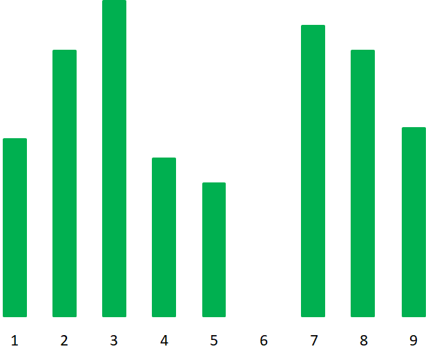
Once the processors have completed adding vectors to the storage object, the data is still only stored locally. To make it globally accessible, it is necessary to move it from local buffers to a globally accessible data structure. This is accomplished by calling the function
void upload()
This function takes no arguments. After calling upload, it is no longer possible to continue adding data to the storage object using the addVector function.
Once data has been uploaded to the storage object, any processor can retrieve the data associated with a particular index using the function
void getVector(const int idx, std::vector<data_type> &vec)
This function retrieves the data corresponding to index idx from global storage and stores it in a local vector. The getVector function can be called an arbitrary number of times after the data has been uploaded. If no data is found, the return vector will have length zero.
One note about using the getVector function is worth mentioning. The implementation of the GlobalStore class uses some Global Array calls that can potentially interfere with MPI calls in a subsequent function call, resulting in the code hanging. If this occurs, it is usually possible to prevent the hang by calling Communicator::sync on the communicator that was used to define the GlobalStore object. This should be done after completing all getVector calls but before making calls to other parallel functions.
The GlobalVector class was created to allow data to be stored in a linear array that is accessible from any processor. Each processor can upload a list of elements and their locations to the GlobalVector. All processors can then access any portion of the vector. Processors generate elements and assign an index to each element. Generally, the elements in each processor will represent a contiguous block in the global vector, but other patterns are possible. After uploading, a processor can copy any portion of the global vector, or the whole vector, back to a local vector. This functionality is primarily used for constructing a data set that is accessible to the entire system using contributions from individual processors.
The module GlobalVector is a templated class that is located in the gridpack::parallel namespace. The GlobalVector constructor is
GlobalVector<data_type>(const gridpack::parallel::Communicator &comm)
The constructor takes a communicator as an argument so data in the GlobalVector object will only be visible to processors in the communicator. Similar to the GlobalStore class, GlobalVector also takes a template argument data_type that can be any fixed-sized data type. This includes standard data types such as int, float, double, etc. but could also represent user-defined structs.
Data can be added to the GlobalVector object using the command
void addElements(std::vector<int> &idx, const std::vector<data_type> &vec)
The vector idx contains the index locations of each of the elements in the vector vec. The indices do not have to be complete, i.e. not all indices in some interval [0,…,N-1] need to be added to the storage object, although the data in those locations will be undefined and it is up to the application to avoid accessing those locations. The length of the vectors can differ for different processors and there are also no restrictions on which processor contributes which set of indices, so contributions can be made in any order from any processor. The only restriction on indices is that they are not used more than once.
Once the processors have completed adding elements to the storage object, the data is still only stored locally. To make it globally accessible, it is necessary to move it from local buffers to a globally accessible data structure. This is accomplished by calling the function
void upload()
This function takes no arguments. After calling upload, it is no longer possible to continue adding data to the storage object using the addElements function.
After calling upload, any processor can retrieve data using the function
void getData(const std::vector<int> &idx, std::vector<data_type> &vec)
This function retrieves the data corresponding to indices in idx from global storage and stores it in a local vector. The getData function can be called an arbitrary number of times after the data has been uploaded.
If all the data in the global vector is needed, then it can be recovered using the function
void getAllData(std::vector<data_type> &vec)
The return vector contains all values stored in the global vector. The number of elements can be found by checking the size of vec.
Similar to the GlobalStore class, it is worth noting that the implementation of the GlobalVector class uses some Global Array calls that can potentially interfere with MPI calls in a subsequent function call, resulting in the code hanging. If this occurs, it is usually possible to prevent the hang by calling Communicator::sync on the communicator that was used to define the GlobalVector object. This should be done after completing all getData calls but before making calls to other parallel functions.
The bus table I/O module was created to allow applications to update the properties of buses over multiple scenarios. This module is designed to read files of the form
11002 BL 0.0011 0.0009 0.0018 0.0023 11003 BL 0.2232 0.2113 0.2202 0.2317 11005 BL 0.1188 0.1076 0.1211 0.1197 11008 BL 0.0053 0.0045 0.0067 0.0072
The first column is a bus ID, the second column is a one- or two-character tag identifying some device on the bus (e.g. a generator) and the remaining columns are properties of the bus for different scenarios. The columns are delimited by white space. If there are N columns of properties for the buses then the total number of columns in the file is N+2, where the extra two columns represent the bus indices and the device tags. The columns containing data are indexed from 0 to N-1. If the properties apply to the bus as a whole and not some device on the bus, then the tags can be ignored but some arbitrary one- or two-character string still needs to be included in the file for the second column. The scenarios themselves can represent different times, different parameter sets, different loads etc. The properties are assumed to be double precision values. Integer values can be used as properties by storing them as double precision values and then casting them back to integers inside the application. Not all buses need to be included in the table and in many cases, where a device is not present on a bus, it is undesirable to require that each bus be represented.
The BusTable module is a templated class that takes the network type as a parameter. It is located in the gridpack::bus_table namespace. The constructor has the form
BusTable<MyNetwork>(const boost::shared_ptr<MyNetwork> network)
An external file with the format described above can be read in using the function
bool readTable(std::string filename)
where filename points to the appropriate file. This function will ingest the file and store the contents in a distributed form that can be readily access by the application. This function is collective and must be called by all processes over which the network is defined.
Accessing the data in the table can be accomplished using the following three functions
void getLocalIndices(std::vector<int> &indices) void getTags(std::vector<std::string> &tags) void getValues(int idx, std::vector<double> &values)
The first function returns a list of the local bus indices to which the data applies, the second function returns a list of the corresponding device tags and the third function returns the values from column idx in the table. The index idx refers to the columns of bus data, not the actual numbers of columns in the file, so it ignores the columns describing the bus indices and the device tags. Index 0 in this function refers to the first column of bus data, which is actually the third column in the file.
After calling the functions, the data can be applied to the appropriate buses using a loop of the form
MyBus *bus; For (i=0; i<indices.size(); i++) { bus = network->getBus(indices[i]).get(); bus->setProperty(tags[i], values[i]); }
where setProperty is a user-defined function in the MyBus class that does something useful with the data. This example assumes that the getLocalIndices, getTags and getValues functions have already been called outside the loop.
The number of columns of properties can be accessed using the function
int getNumColumns()
Calculations such as contingency analysis can generate enormous amounts of data that can be further analyzed to discover instabilities or weak points in the system. The StatBlock class described in this section is designed to provide users with a mechanism for storing all this information in a distributed way and then allowing them to perform some analyses on the resulting data array. The basic idea is that each contingency calculation produces a vector of results and this vector can be stored in a large array where one axis is an index that labels the contingency and the other index labels the elements of the vector. Each contingency must produce a vector of the same length. The vector may contain values such as the voltage magnitude on each bus, the real or reactive power generation on each generator, the power flow on each transmission line, or some similar quantity. The assumption is that each element in the vector represents a property of some device on either a bus or a branch and this device can be uniquely identified by a collection of indices that identify the bus or branch and a second two character ID that identifies the device within the bus or branch.
For N contingencies, the contingency index runs between 0 and N, with 0 representing a base case in which no contingency is present. A schematic figure of the data layout is shown in Figure 6.4.
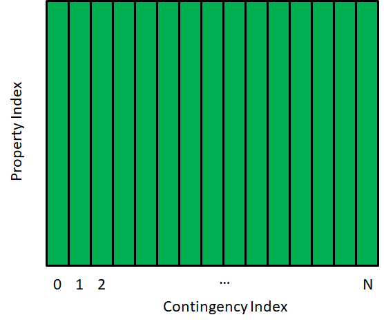
Once data has been added to the array, a number of different analyses can be performed on it and the results written to a file. This array and the operations that can be used to analyze data are included in the StatBlock data class. A complete description of this class and the operations that are supported by it is given below.
This class has been used to extend the capabilities of the contingency analysis application under src/applications/contingency_analysis. The new output from this calculation is described in the README.md file in this directory. The ca_driver.cpp file contains examples of how to use this functionality in an application. The constructor for the StatBlock class has the form
StatBlock(const Communicator &comm, int nrows, int ncols)
The Communictor represents the collection of processors over which the StatBlock array is defined, the variable nrows is the total number of elements in each data vector that will be added to the array and ncols is the number of columns in the array. For a contingency calculation, ncols should be equal to N+1, where the extra column is for the base case. The number of rows and columns are defined at the outset of the calculation, so they must be evaluated before any other calculations are performed.
Data can be added to the array from any processor using the function
void addColumnValues(int idx, std::vector<double> vals, std::vector<int> mask)
The value idx is the index of the column into which the vector will be placed. The length of the vals and mask vectors needs to match the value of nrows used in the constructor. The vals vector contains the actual values that are being placed in the StatBlock array. All values are doubles. If an integer value is to be stored in the array, it should first be converted to the corresponding double. The mask vector is a set of set of integer values that can be used to control whether the corresponding value in the vals array is included in any of the statistical operations in StatBlock. For example, a particular contingency calculation might fail altogether and no values are recorded. In this case, the vals vector could be filled with nrows values (these can be any number, but 0.0 is convenient) and the corresponding mask array fill with nrows values of 0. For successful calculations, the mask array is filled with 1s. Later calculations can then exclude the failed contingencies by only including values with a corresponding mask value of 1 (or greater). This guarantees that some information is extracted from the calculation, even if some contingencies fail. Furthermore, by excluding these contingencies instead of setting their values to zero or some other dummy value, the results are not biased by the dummy values. The addColumnValues can be called by any processor.
In addition to the array values, several other vectors can be added to the array. These are used either to label the output in useful ways or to control some of the analyses. The function
void addRowLabels(std::vector<int> indices, std::vector<std::string> tags)
can be used to label data quantities derived from buses. The length of these arrays should correspond to the value of nrows used in the constructor. For each row there is a corresponding index in the indices vector and a 2-character tag in the tags vector that can be used to uniquely identify the corresponding row quantity. For example, if each row represents the real power for a generator, then the index for each row is the ID of the bus to which the generator is attached and the tag is the 2-character identifier for that generator within the bus. This information will be printed out along with any statistical analyses that are performed on the data. The addRowLabels function can be called from any processor. It should be called at least once before doing any analyses. It can be called more than once, but the data contained in multiple calls should be the same.
Similarly, for data associated with branches, there is the function
void addRowLabels(std::vector<int> idx1, std::vector<int> idx2, std::vector<std::string> tags)
In this case, two vectors of indices, idx1 and idx2, are included for each row. These can represent the IDs of the “from” and “to” buses for a branch and the tag can represent the 2-character identifier of a single transmission line within the branch. In general, only one set of indices should be added to the StatBlock object, depending on whether the values are derived from buses or branches.
Some additional information can be added to the StatBlock object. If the data quantity should be bounded by some parameters, then these can be included in the output by adding the bounds using the functions
void addRowMinValue(std::vector<double> min) void addRowMaxValue(std::vector<double> max)
Again, the min and max vectors should both have nrows elements. Both of these vectors are optional. If added to the StatBlock object, they will be included in some of the output. This can simplify subsequent analysis and display. Like the addRowLabels function, these functions can be called more than once, but they should contain the same data.
Once information has been added to the StatBlock object, some analyses can be performed and the results written to a file by calling a few methods. The average value of a parameter for each row and its RMS fluctuation can be printed to a file with the method
void writeMeanAndRMS(std::string filename, int mval=1, bool flag=true)
The parameter filename is the name of the file to which results are written, all values with the corresponding mask value greater than or equal to mval will be included in the calculation and flag can be set to false if it is not necessary to write out the 2-character device ID to the file. For buses, the first column of output is the row index, the second column is the bus ID, the third column is the device ID (optional) and the next three columns are the average value of the parameter across each row, the RMS deviation with respect to the average value, defined as
where M is the total number of elements in the row that satisfy the criteria that the mask value is greater than mval, and the RMS deviation with respect to the base case value, , defined as
This RMS deviation with respect to the base case value is designed to identify cases where the base case may be unstable and almost any contingency has a tendency to disturb it. The results for branches have a similar format, except that the bus ID column is replaced by two columns, one representing the bus ID for the “from” bus and the other representing the bus ID of the “to” bus.
The minimum and maximum values for the parameter can be evaluated by calling
void writeMinAndMax(std::string filename,int mval=1,bool flag=true)
The arguments have the same interpretation as the writeMeanAndRMS function. This function will scan each row and determine the minimum and maximum value for the parameter in that row, as well calculating the maximum and minimum deviation from the base case and the contingency index at which the minimum and maximum values occur. If the allowed minimum and maximum values for the parameter have been set using the addRowMinValue and addRowMaxValue functions, these values will be printed as well. The first columns in the file produced by this function follow the same rules as the writeMeanAndRMS function. Following the columns identifying the bus or branch and the device ID, the next three columns of output contain the base case value for each row, the minimum value for each row and the maximum value for each row. The next two columns are the deviation of the minimum value from the base case value and the deviation of the maximum value from the base. These five columns are always included in the file. The next two columns are optional and only appear if the minimum and maximum allowed values are added to the StatBlock object. If both values have been added, then the minimum value appears before the maximum value. The last two columns are integers and represent the index of the contingency at which the minimum and maximum values of the parameter occur.
The number of contingencies corresponding to a particular value of the mask variable for each row can be evaluated with the function
void writeMaskValueCount(str::string filename, int mval, bool flag=true)
This function evaluates the total number of times the mask value mval occurs in each row. This can be used to identify the number of contingencies for which a device violates its operating parameters. For example, if a contingency is successfully evaluated and there is no violation of operating parameters then the mask value for that device and that contingency is set equal to 1. If the contingency is successfully evaluated but there is a violation of operating parameters, the mask value is set to 2 (the mask value of 0 would still be reserved for contingency calculations that fail completely). Calling the writeMaskValueCount method with mval set to 2 would then reveal the total number of contingencies for each device for which there was a violation. The format for the output file follows the previous pattern, the first columns identify the bus or branch and the device ID and the last column is the number of times the value mval occurs in the mask array for each row.
Even with these methods, it is still complicated to use this functionality so we will examine code to store the generator parameters from a contingency analysis calculation based on power flow simulations of a network. This example is drawn from the existing contingency analysis application released with GridPACK. We start by assuming that the TaskManager is being used to distribute power flow simulations on different processor groups within the main calculation. The data for generators is exported from the individual buses using the serialWrite method base component class. For the buses, this has a section that writes out the real and reactive power for each generator on the bus
} else if (!strcmp(signal,"gen_str") || !strcmp(signal,"gfail_str")) { bool fail = false; if (!strcmp(signal,"gfail_str")) fail = true; char sbuf[128]; int slen = 0; char *ptr = string; for (int i=0; i<ngen; i++) { if (!fail) { : // Evaluate real power p and reactive power q // for each generator : } else { p = 0.0; q = 0.0; } sprint(sbuf,"%6d %s %20.12e %20.12e\n" getOriginalIndex(),gid[i].c_str(),p,q); } int len = strlen(sbuf); if (slen+len <= bufsize) { sprint(ptr,"%s",sbuf); slen +=len; ptr += len; } if (slen > 0) return true; return false; } else if ...
This code snippet will return a string containing the real and reactive power of each generator on the bus. The string includes a large number of decimal places for the floating point values to avoid large roundoff errors. The length of the string will vary with the number of generators on the bus. The number of generators on the bus is given by the variable ngen and the vector of strings gid contains the two character identifier tag for each generator. The fail variable is designed to prevent the calculation from writing out strings that may cause problems in other parts of the code if the powerflow calculation is unsuccessful.
The real and reactive power output for all generators can be gathered into a single vector using the writeBusString method in the PFAppModule class (this is base, in turn, on the writeStrings method in the SerialBusIO class). This will gather the strings being returned from each bus into a single vector of strings. The code for doing this is
int nsize = gen_strings.size(); std::vector<int> ids; std::vector<std::string> gen_tags; std::vector<double> pgen; std::vector<double> qgen; std::vector<mask> StringUtils util; if (pf_app.solve()) { std::vector<std::string> gen_strings = pf_app.writeBusString("gen_str"); for (int i=0; i<nsize; i++) { std::vector<std::string> tokens = util.blankTokenizer(gen_strings[i]); int ngen = tokens.size(); for (int j=0; j<ngen; j++) { ids.push_back(atoi(tokens[j*4].c_str())); gen_tags.push_back(tokens[j*4+1]); pgen.push_back(atof(tokens[j*4+2].c_str())); qgen.push_back(atof(tokens[j*4+3].c_str())); mask.push_back(1); } } } else { std::vector<std::string> gen_strings = pf_app.writeBusString("gfail_str"); for (int i=0; i<nsize; i++) { std::vector<std::string> tokens = util.blankTokenizer(gen_strings[i]); int ngen = tokens.size(); for (int j=0; j<ngen; j++) { ids.push_back(atoi(tokens[j*4].c_str())); gen_tags.push_back(tokens[j*4+1]); pgen.push_back(0.0); qgen.push_back(0.0); mask.push_back(0); } } }
The serialWrite method should return a string that writes out generator properties in groups of four non-blank characters. The blankTokenizer utility will then return a vector of strings whose length is a multiple of four. If the powerflow calculation is successful, the serialWrite method is called with the argument gen_str to get the real and reactive power values. If the calculation fails, it is still necessary to find out how many generators are in the system and this can be done by calling serialWrite with the argument gfail_str. This returns the bus ID and two character tag for each generator without performing any calculations or returning a value that might otherwise cause a segmentation fault or other problem in the code. The loop over all strings is designed to construct the data vectors pgen and qgen that can then be added to StatBlock objects. In addition, these loops also contruct the ids and gen_tags arrays that can be used to set the row labels. The vectors only have a non-zero length on rank 0 of whatever communicator the power flow calculation is running on but it is not necessary to put a condition on the calculation to check for this. The variable nsize will be set to zero on processes other than rank 0 and the loops will be skipped. It is necessary, however, to check the rank when adding these vectors to the StatBlock object.
The remaining issue is how to make use of these calculations in the context of a contingency analysis calculation. The StatBlock object should be visible to all processors in the system, so it must be created using the world communicator. Until a power flow calculation has been run it will be difficult to determine the number of elements in a column, which is needed by the constructor. As a result, it is easiest to create the StatBlock objects after the base case power flow calculation has been run. In the example contingency analysis application included with GridPACK, all task communicators run the base case power flow example. After the base case has been run, all processors need to initialize the StatBlock object using the same values for the number of elements and the number of contingencies. The number of contingencies should already be known by all processors, since this is required by the task manager. The number elements can be evaluated using
int ngen = pgen.size(); world.max(&ngen,1);
where world is a communicator on the world group. The vector pgen either has zero elements or the full set of generators, so taking the maximum value gives the correct number for setting up the statistics array. This can be created using the line
StatBlock pgen_stats(world,ngen,ntasks+1);
The the number of contingencies being evaluated is ntasks and the extra increment of 1 is for the base case. Only one processor needs to add the base case values and the row labels to the pgen_stats. Since these are available on process 0 on the world communicator, this information can be added using the following code
if (world.rank() == 0) { pgen_stats.addRowLabels(ids,gen_tags); pgen_stats.addColumnValues(0,pgen,mask); }
The individual tasks are similar. After completing the power flow calculation and constructing the mask values vectors, the data can be added to the StatBlock array with the code
if (task_comm.rank() == 0) { pgen_stats.addColumnValues(task_id+1,pgen,mask); }
The labels only need to be added to pgen_stats once, so they are not included in the conditional. The conditional itself is for rank 0 on the task communicator, since at this point in the calculation, the results from each task are different. The task_id variable in this example is zero-based, so it is incremented by 1 to get the correct column. Once all tasks (contingencies have been completed) the data can be written out using the commands
pgen_stats.writeMeanAndRMS("pgen.txt",1,true); pgen_stats.writeMinAndMax("pgen_min_max.txt",1,true);
The first line generates a file containing the average value and standard deviations across all successful calculations and the second line generates a file with the minimum and maximum values across all successful calculations.
The matrix-vector interface described earlier is suitable for problems where the independent and dependent variables are both associated with buses. This is usually true for systems where Kirchhoff’s law is strictly enforced. However, this interface does not work for systems where some variables are associated with branches. This can occur in optimization problems such as state estimation, where measurements are made on both buses and branches. Every measurement contributes an equation to the state-estimation optimization, which results in dependent variables associated with branches. To handle these types of problems, a more general approach to creating matrices and vectors is required. This is implemented via the GenMatVecInterface class described below.
In general, the GenMatVecInterface is much more complicated to use than the matrix-vector interface described in Section 4.7. However, we believe that it is still simpler than managing the index calculations needed to construct the matrix equations required by methods such as state estimation and dynamic state estimation (Kalman filter). User that are interested in implementing calculations using the GenMatVecInterface are encouraged to follow the documentation in the user manual and to also study the implementation in existing GridPACK applications.
Unlike the MatVecInterface class, there is no definitive way to map which elements are contributed by a branch or bus, and the number of elements contributed by a branch or bus does not reduce to simple blocks. Thus, the idea that buses and branches contribute simple blocks of data must be abandoned. The GenMatVecInterface just assumes that buses and branches contribute some number of equations (dependent variables) to the matrix and that they also contribute some number of independent variables to the matrix. As illustrated in Figure 5, the BaseComponent class directly inherits from this interface, along with the MatVecInterface. The information on number of equations and number of variables is embedded in the function calls
virtual int matrixNumRows(void) virtual int matrixNumCols(void)
These two functions specify how many dependent variables (rows) and how many independent variables (columns) are associated with a bus or branch. For the state estimation module that is currently available in the GridPACK release, the dependent variables are the number of measurements that are associated with the bus or branch and the independent variables are the voltage magnitude and phase angle, which are only associated with buses. Thus, if the state estimation Jacobian is being built, the matrixNumRows function returns the number of measurements on each bus and branch. The matrixNumCols only returns a non-zero value for buses since the branches have no independent variables. This value is generally 2, if the bus has any measurements associated with it or is attached to a bus or branch that has measurements, otherwise the value is 0. If the bus has measurements and is the reference bus, then the function returns 1. These functions allow the generalized mappers to determine the dimensions of the matrix (for state estimation, the Jacobian is not necessarily square). Unlike the original matrix-vector interface, the user has to assign the row and column indices to each matrix element. The actual values of these indices are evaluated by the mapper but it is up to the user to take the row index for a particular dependent variable (measurement) and the column index for a particular independent variable (voltage magnitude or phase angle) and pair them with a matrix element (contribution to the Jacobian). The functions that are used for this purpose are
virtual void matrixSetRowIndex(int irow, int idx) virtual void matrixSetColIndex(int icol, int idx) virtual int matrixGetRowIndex(int irow) virtual int matrixGetColIndex(int icol)
The first two functions are used by the mapper to assign indices for each of the rows and columns contributed by a component. The values of the indices need to be stored in the component so that they can be accessed by other components when evaluating matrix elements. Although these functions are only called by the mapper, they need to be implemented by the user, since multiple matrices may be generated by the application. The variables irow and icol refer to the list of rows and columns contributed by the component, while the index idx is the global index for that row or column in the full matrix. The point of the first two functions is to create a map between the local index of the row or column and the global index of the corresponding row or column in the full matrix. This map is needed because matrix elements constructed on one component may refer to rows or columns on other components. The second pair of functions allow users to recover the global index from the local index.
For example, the state estimation calculation needs to be able to build the Jacobian matrix plus a diagonal matrix that represents the inverse of the uncertainties in all the measurements. The state estimation components have two modes, Jacobian_H and R_inv for each of these calculations. The matrixSetRowIndex method for the buses has the form
void SEBus::matrixSetRowIndex(int irow, int idx) { if (p_mode == Jacobian_H) { if (irow < p_rowJidx.size()) { p_rowJidx[irow] = idx; } else { p_rowJidx.push_back(idx); } } else if (p_mode == R_inv) { if (irow < p_rowRidx.size()) { p_rowRidx[irow] = idx; } else { p_rowRidx.push_back(idx); } } }
The row indices for the Jacobian and are stored in two separate STL arrays p_rowJidx and p_rowRidx. For the state estimation example, the number of rows (for both the Jacobian and ) is equal to the number of measurements associated with the component. These measurements are held in an internal list in some order. If the number of measurements on the bus is M then the irow index will run from 0,..,M-1, with the irow index corresponding to the irow element in the list of measurements. The independent variables are also assumed to be ordered in some fashion. Again, for the state estimation example, the phase angle is indexed by 0 and the voltage magnitude is indexed by 1.
The function for accessing the row indices is implemented as
int gridpack::state_estimation::SEBus::matrixGetRowIndex(int idx) { if (p_mode == Jacobian_H) { return p_rowJidx[idx]; } else if (p_mode == R_inv) { return p_rowRidx[idx]; } }
Again, depending on the mode, this function will return different values and for this reason, these functions need to be implemented by the user. They cannot be implemented as part of the framework because the number of modes is application-specific and controlled by the developer. However, the form of these functions is fairly standard and can be generalized in a straightforward way from the examples presented here.
The functions that are used to actually evaluate matrix elements are
virtual int matrixNumValues(void) const virtual void matrixGetValues(ComplexType *values, int *rows, int *cols) virtual void matrixGetValues(double *values, int *rows, int *cols)
The first function returns the total number of matrix elements that will be evaluated by the component. This is used inside the mapper to allocate arrays that hold matrix elements coming from the components. The second function is used to evaluate actual matrix elements, along with their row and column indices. The real-valued version of matrixGetValues replaces ComplexType with double. The matrixGetRowIndex and matrixGetColIndex functions are used in implementing the matrixGetValues function.
The evaluation of the matrixNumValues function can be quite complicated. For the state estimation Jacobian matrix, the number of matrix elements contributed by a component depends on the number of measurements associated with that component and the number of variables that couple to that measurement. A measurement on a bus will usually contribute two values for the independent variables on the bus, plus an additional two values for each bus that is attached to the center bus via a branch. This number will be modified slightly if one of the buses in this group is a reference bus. For branches, the number of matrix elements contributed by each measurement is approximately four, two elements for each bus at either end of the branch. This number may drop if one of the buses is a reference bus.
The matrixGetValues function is used to evaluate each of the matrix elements. It also gets the matrix indices for this element from the appropriate network component. The number of matrix elements returned by this function must correspond to the number returned by the matrixNumValues function. To see how the assignment of the indices works, we can look at the matrix element of the Jacobian corresponding to the gradient of a real power injection measurement P on bus i with respect to the phase angle on another bus j that is connected to i via a single branch. The contribution to the Jacobian from this measurement is given by the formula
Suppose is measurement on the bus. Then the row index im for this matrix element can be evaluated by calling the function
im = matrixGetRowIndex(k);
The column index is associated with the phase angle variable on the remote bus j. Assuming that a pointer (bus_j) to the remote bus is already available, then the column index jm for this matrix element could be obtained by calling
jm = bus_j->matrixGetColIndex(0);
This function is called with the argument 0 since the dependent variables are always ordered as phase angle (0) followed by voltage magnitude (1). The full list of Jacobian matrix elements can be obtained by looping over all measurements. For each bus measurement, there are contributions from the dependent variables on each connected bus plus two contributions from the calling bus. Similarly, for each branch measurement there are approximately four contributions coming from the independent variables associated with the buses at each end of the branch. A simple counter variable can be used to make sure that the matrix element value and the corresponding row and column indices stored in the same location of the values, rows and cols arrays that are returned by the getMatrixValues function.
The GenMatVecInterface also includes functions for setting up vectors. These work in a very similar way to the generalized matrix functions, so they will only be described briefly. The two functions
virtual void vectorSetElementIndex(int ielem, int idx) virtual void vectorGetElementIndices(int *idx)
can be used to set and retrieve vector indices. The index ielem is the local index within the element while idx is the global index within the distributed vector. In this case it is usually more convenient to get all indices associate with a component at once, so the vectorGetElementIndices returns an array instead of a single value. The function
virtual int vectorNumElements() const
returns the number of vector elements contributed by a component and the function
virtual void vectorGetElementValues(ComplexType *values, int *idx) virtual void vectorGetElementValues(double *values, int *idx)
returns a list of the values along with their global indices. For real vectors, the ComplexType array is replaced an array of type double. Again, the index value can be obtained by first calling the vectorGetElementIndices function and using this to obtain the correct index for each element.
The vector interface includes one additional function that does not have a counterpart in the matrix interface. This is the function
virtual void vectorSetElementValues(ComplexType *values) virtual void vectorSetElementValues(double *values)
This function can be used to push values from a solution vector back into the network components. The values are ordered in the same way as the values in the corresponding vectorGetElementValues call, so it is possible to unpack them and assign them to the correct internal variables for each component. This function is analogous to the setValues call in the regular MatVecInterface.
The functions in the GenMatVecInterface are invoked in the generalized mappers. These reside in the GenMatrixMap and GenVectorMap classes. Like the standard mappers, these classes are relatively simple and contain only a few methods. The GenMatrixMap class consists of the constructor
GenMatrixMap<MyNetwork>(boost::shared_ptr<MyNetwork> network)
and the methods
boost::shared_ptr<gridpack::math::Matrix> mapToMatrix(void) boost::shared_ptr<gridpack::math::RealMatrix> mapToRealMatrix(void) void mapToMatrix(boost::shared_ptr<gridpack::math::Matrix> matrix) void mapToRealMatrix(boost::shared_ptr<gridpack::math::RealMatrix> matrix) void mapToMatrix(gridpack::math::Matrix &matrix) void mapToRealMatrix(gridpack::math::RealMatrix &matrix) void overwriteMatrix(boost::shared_ptr<gridpack::math::Matrix> matrix) void overwriteRealMatrix(boost::shared_ptr<gridpack::math::RealMatrix> matrix) void overwriteMatrix(gridpack::math::Matrix &matrix) void overwriteRealMatrix(gridpack::math::RealMatrix &matrix) void incrementMatrix(boost::shared_ptr<gridpack::math::Matrix> matrix) void incrementRealMatrix(boost::shared_ptr<gridpack::math::RealMatrix> matrix) void incrementMatrix(gridpack::math::Matrix &matrix) void incrementRealMatrix(gridpack::math::RealMatrix &matrix)
These functions all have the same behaviors as the analogous functions in the standard FullMatrixMap. The GenVectorMap class has the constructor
GenVectorMap<MyNetwork>(boost::shared_ptr<MyNetwork> network)
and supports the methods
boost::shared_ptr<gridpack::math::Vector> mapToVector(void) boost::shared_ptr<gridpack::math::RealVector> mapToRealVector(void) void mapToVector(boost::shared_ptr<gridpack::math::Vector> &vector) void mapToRealVector(boost::shared_ptr<gridpack::math::RealVector> &vector) void mapToVector(gridpack::math::Vector &vector) void mapToRealVector(gridpack::math::RealVector &vector)
These functions have the same interpretations as the analogous functions in the BusVectorMap class.
This interface also hosts a new function
mapToNetwork(boost::shared_ptr<gridpack::math::Vector> &vector) mapToNetwork(boost::shared_ptr<gridpack::math::RealVector> &vector) mapToNetwork(const gridpack::math::Vector &vector) mapToNetwork(const gridpack::math::RealVector> &vector)
which can be used to push data from a vector back into the network components (both buses and branches).
The generalized slab mapper also uses functions in the generalized matrix-vector interface to build dense matrices. These matrices are dense since they are generated by taking a typical vector, corresponding to a set of variables on the buses and branches, and inserting copies of the vector into the matrix for different values of the variables. An example would be a matrix formed from a time series of values for a set of variables on the buses and branches. One set of indices for the matrix corresponds to the set of variables and the other set of indices corresponds to the time series. In a certain sense, these matrices are “fat” vectors since instead of each variable having only one value, they have multiple values. In general, slab matrices are not square. The slab matrices are used in the Kalman filter application, but they may have applicability elsewhere.
The slab mappers use additional functions from the GenMatVecInterface in order to construct matrices. These functions are analogous to the functions for setting up vectors using the GenVectorMap. The main difference is that instead of describing a list of values, the functions describe a matrix block. The row dimension corresponds to a list of variables and the column dimension describes the number of values taken by each variable. The column dimension must be the same across all variables. The contribution to the matrix from each network component is given by the function
void slabSize(int *rows, int *cols) const
The index for each row can be stored using the function
void slabSetRowIndex(int irow, int idx)
This function is called by the mapper and is analogous to the vectorSetElementIndex function. For the slab matrices, there is no corresponding call for columns since the matrices are dense and all rows have the same number of non-zero columns. The indices can be retrieved by the function
void slabGetRowIndices(int *idx)
which is similar to the vectorGetElementIndices function.
Many of the example applications in GridPACK have been converted to modules that can be called from other programs. These modules make it relatively simple to chain different types of calculations together to form larger applications. An example is using power flow or state estimation to initialize a dynamic simulation. The modules are designed to separat the major phases of the calculation into calls so that users have some fine-grained control that allows them to mix different applications together. In most cases, different options for setting up calculations are provided so that once a network has been read in and partitioned, it is not necessary to repeat this process when a new calculation is started based on the results of a previous simulation.
Currently, three applications are available as modules within GridPACK. They include power flow, state estimation, and dynamic simulation using the full Y-matrix. Each of these modules can be used to create a short, standalone application, but the goal is to enable users to combine modules together in more complicated work flows. These modules can also be used as a starting point for users to create their own applications by modifying the existing code in the modules to create new functionality. Each of the modules is described in more detail below. Example codes that use the modules to implement applications can be found in the src/application directory. These include powerflow, state estimation, contingency analysis and dynamic simulation. These directories also contain sample input networks and input files. Options for different solvers can be found in these files.
The power flow module consists of a collection of function calls that can be used to set up and run power flow calculations. Additional routines are designed to support different types of contingency analysis. The power flow application class is PFAppModule and belongs to the gridpack::powerflow namespace. The constructor and destructor for this class are simple and only create the basis power flow object. In particular, the power flow network must be created outside the power flow object and then assigned to the object when the network configuration file is read in. This can be done with the call
void readNetwork(boost::shared_ptr<PFNetwork> &network, Configuration *config)
The Configuation object should already be pointing to an open file containing a Powerflow block. This block contains a networkConfiguration field that has the name of the PSS/E format file containing the network information. The network configuration file is read directly from the input deck by the readNetwork method. The PFNetwork is defined in the the gridpack.hpp header file. The configuration module is usually opened in the main calling program and a pointer to the file can be passed through to power flow module. The readNetwork routine also partitions the network.
Once the network has been read in, the internal indices and exchange buffers can be set up by calling
void initialize()
The power flow application is now ready to be used. To solve the current configuration, the calls
void solve() void nl_solve()
can be used. The first call solves the system uses a hand coded Newton-Raphson iteration loop to solve the system, the second call uses a non-linear solver to solve the power flow equations. Both solvers can be controlled through solver options in the input file. The type of linear solver used in the solve routine is controlled by the parameters in the LinearSolver block, the non-linear solver is controlled by the properties in the NonlinearSolver block Output from the power flow solution can be written to an output file or standard out using one of the commands
void write() void writeBus(const char* signal) void writeBranch(const char* signal)
The first command writes out the real and imaginary parts of the complex power for the branches and the voltage magnitude and phase angle for the buses. The second command only writes out bus properties. If no argument is given, the command writes out the voltage magnitude and phase angle for every bus. For buses, the argument “pq” writes out the real and imaginary parts of the complex voltage and “record” writes out the type of bus, the total active and reactive constant power loads, and the total active and reactive generator power outputs. For branches, “flow” writes out the real and imaginary parts of the complex power and “record” writes out the values of the resistance, reactance, charging and A, B, C ratings for each line element.
Additional information can be written to standard out or a file using the command
void print(const char* buf)
which writes out the contents of the character array buf. This command can be called from all processors, but only one processor actually writes out data.
The location of output can be controlled using the commands
void open(const char* filename) void close()
If the write commands or print are used without calling open, then all output is directed to standard out. If open is called, then the output is directed to the file specified in filename until the close command is called, after which all output is again directed towards standard out.
If the results of the power flow calculation are needed by another calculation, then the voltage magnitude and phase angle of the bus and the real and imaginary parts of the complex power for each generator can be stored in the DataCollection objects on each bus using the command
void saveData()
If the network is then copied to a new type of network, this information is carried over to the new network. The voltage magnitude and phase angle is stored in the DataCollection variables BUS_PF_VMAG and BUS_PF_VANG and the generator parameters are stored in the indexed variables GENERATOR_PF_PGEN[i] and GENERATOR_PF_QGEN[i], where the index i runs over all generators on the bus.
The remaining methods in the PFAppModule class support different kinds of contingency applications. Contingencies are defined using the data structure
struct Contingency { int p_type; std::string p_name; // Line contingencies std::vector<int> p_from; std::vector<int> p_to; std::vector<std::string> p_ckt; // Status of line before contingency std::vector<bool> p_saveLineStatus; // Generator contingencies std::vector<int> p_busid; std::vector<std::string> p_genid; // Status of generator before contingency std::vector<bool> p_saveGenStatus; };
The variable p_type corresponds to an enumerated type that can have the values Generator and Branch. The variables p_saveLinesStatus and p_saveGenStatus are used internally and do not have to be set by the user. The remaining variables are used to describe the lines and generators that may fail during a contingency event. These variables are all vectors, since a single contingency could theoretically represent the failure of multiple elements. For failures of type Branch, the variables p_from and p_to are the original indices of the “from” and “to” bus that identify a branch and the variable p_ckt is the 2 character identifier of the individual transmission element. For failures of type Generator, p_busid is the original index of the bus and p_genid is the 2 character identifier of the generator that fails. An example of how to use this functionality is given in the contingency analysis application that can be found under src/applications/contingency_analysis. This is also a good example of how to use modules.
Two calls
bool setContingency(Contingency &event) bool unsetContingency(Contingency &event)
can be used to set or unset a contingency. The call unsetContingency should only be called after calling setContingency and it should use the same event argument. After calling the unsetContingency method, the network should have the same configuration as before calling the setContingency method.
The remaining calls in PFAppModule can be used to determine the status of a network after solving a configuration with a contingency. The functions
bool checkVoltageViolations(double Vmin, double Vmax) bool checkVoltageViolations(int area, double Vmin, double Vmax)
can be used to check for a voltage violation anywhere in the system where Vmin and Vmax are the minimum and maximum allowable voltage excursions (per unit). The second function only checks for violations on buses with the specified value of area. These functions are true if there are no voltage violations and return false if a violation is found on one or more buses. It frequently turns out that many networks have voltage violations even in the absence of any contingencies and it is often desirable to ignore these violations. This can be accomplished using the function
void ignoreVoltageViolations(double Vmin, double Vmax)
If this function is called after solving the power flow system in the absence of any contingencies, then buses that contain violations will be ignored in subsequent checks of violations. These settings can be undone by calling
void clearVoltageViolations()
Line overload violations can be checked by calling one of the functions
bool checkLineOverloadViolations() bool checkLineOverloadViolations(int area)
The limits on the line are contained in parameters read in from the network configuration file so these functions have no arguments describing the line limits. The second function will only check for violations on lines with the specified value of area. Like voltage violations, branches that display line overload violations that are present even without contingencies can be ignored in the checks by calling the function
void ignoreLineOverloadViolations()
after running a calculation on the system without contingencies. These settings can be cleared using the function
void clearLineOverloadViolations()
Finally, the internal voltage variables that are used as the solution variables in the power flow calculation can be reset to their original values (specified in the network configuration file) by calling the function
void resetVoltages()
Again, this may be useful in contingency calculations where multiple calculations are run on the same network and it is desirable that they all start with the same initial condition.
The state estimation module can be used to set up and run a state estimation calculation. It does not have the extra functions that the power flow module contains for supporting contingency analysis, so the interface is a bit smaller. In addition to a standard network configuration file, the state estimation calculation needs a second file consisting of measurements. This file has the format
<Measurements> <Measurement> <Type>VM</Type> <Bus>1</Bus> <Value>1.0600</Value> <Deviation>0.0050</Deviation> </Measurement> <Measurement> <Type>PIJ</Type> <FromBus>1</FromBus> <ToBus>2</ToBus> <CKT>BL</CKT> <Value>1.5688</Value> <Deviation>0.0100</Deviation> </Measurement> <Measurement> <Type>QIJ</Type> <FromBus>1</FromBus> <ToBus>2</ToBus> <CKT>BL</CKT> <Values>-0.2040</Value> <Deviation>0.0100</Deviation> </Measurement> <Measurement> <Type>PI</Type> <Bus>1</Bus> <Value>2.3240</Value> <Deviation>0.0100</Deviation> </Measurement> <Measurement> <Type>QI</Type> <Bus>1</Bus> <Value>-0.1690</Value> <Deviation>0.0100</Deviation> </Measurement> </Measurements>
for the five types of measurements VM, PIJ, QIJ, PI, and PJ. Measurements can appear on any element of the network and multiple measurements are allowed on each element. The state estimation module does not have any error checking ability to determine if there are sufficient measurements to guarantee solvability, if not enough measurements are available then the calculation will simply crash or fail to converge. The state estimation module is represented by the SEAppModule class which is in the gridpack::state_estimation namespace. The gridpack.hpp file contains a definition for the state estimation network SENetwork. After instantiating an SEAppModule object and a shared pointer to an SENetwork, the state estimation calculation can read in an external network configuration file using the command
void readNetwork(boost::shared_ptr<SENetwork> &network, gridpack::utility::Configuration *config)
The Configuration object should already be pointing at an open file containing a State_estimation block. Inside the State_estimation block there should be a networkConfiguration field containing the name of the network configuration file. The file name is parsed directly inside the readNetwork method and does not need to be handled by the user. Alternatively, the SENetwork object may have already been cloned from an existing network and therefore there is no need to read in the configuration from an external file and partition it across processors. In this case, the SEAppModule can be assigned the network using the command
void setNetwork(boost::shared_ptr<SENetwork> &network, gridpack::utility::Configuration *config)
This function just assigns the existing network to an internal pointer, as well as a pointer to the input file. It is much more efficient than reading in the network configuration file, if the network already exists. This can occur when different types of calculations are being chained together.
Once a network is in place and has been properly distributed, the measurements can be read in by calling the function
void readMeasurements()
The name of the measurement file is in the input deck and a pointer to this file has already been internally cached in the SEAppModule when the network was assigned. The measurement file name is stored in the measurementList field within the State_estimation block.
The network object can be initialized and the exchange buffers set up by calling the
void initialize()
method followed by
void solve()
to obtain the solution to the system. Results can be written out to standard out using the method
void write()
This function will write out the voltage magnitude and phase angle for each bus and the real and imaginary parts of the reactive power for each branch. In addition, it will print out a comparison of the calculated value and the original measured value for all measurements.
Finally, the results of the state estimation calculation can be saved to the DataCollection object assigned to the buses by calling the
void saveData()
method. The voltage magnitude and phase angle are stored as the variables BUS_SE_VMAG and BUS_SE_VANG and the generator parameters are stored as the indexed variables GENERATOR_SE_PGEN[i] and GENERATOR_SE_QGEN[i], where i runs over the set of generators on the bus.
GridPACK supplies a dynamic simulation module that integrates the equations of motion using an algorithm based on inversion of the full Y-matrix. This module has been designed to enable the addition of generator models that extend beyond the classical generator. It also supports exciters, governors, relays and dynamic loads. Models that are currently available include Generators:
GENCLS GENSAL GENROU
Exciters:
EXDC1 ESST1A
Governors:
WSIEG1 WSHYGP
Relays:
LVSHBL FRQTPAT DISTR1
Dynamic Loads:
ACMTBLU1 IEEL MOTORW CIM6BL
The full Y-matrix implementation of dynamic simulation is represented by the DSFullApp class and the DSFullNetwork, both of which reside in the gridpack::dynamic_simulation namespace. The dynamic simulation module uses an input deck of the form
<?xml version="1.0" encoding="utf-8"?> <Configuration> <Dynamic_simulation> <networkConfiguration>IEEE_145.raw</networkConfiguration> <generatorParameters>IEEE_145.dyr</generatorParameters> <simulationTime>30</simulationTime> <timeStep>0.005</timeStep> <Events> <faultEvent> <beginFault> 2.00</beginFault> <endFault> 2.05</endFault> <faultBranch>6 7</faultBranch> <timeStep> 0.005</timeStep> </faultEvent> </Events> <generatorWatch> <generator> <busID> 60 </busID> <generatorID> 1 </generatorID> </generator> <generator> <busID> 112 </busID> <generatorID> 1 </generatorID> </generator> </generatorWatch> <generatorWatchFrequency> 1 </generatorWatchFrequency> <generatorWatchFileName>gen_watch.csv</generatorWatchFileName> <LinearMatrixSolver> <PETScOptions> -ksp_atol 1.0e-18 -ksp_rtol 1.0e-10 -ksp_monitor -ksp_max_it 200 -ksp_view </PETScOptions> </LinearMatrixSolver> </Dynamic_simulation> </Configuration>
The input for dynamic simulation module is contained in the Dynamic_simulation block. Two features are important, the blocks describing faults and the blocks describing monitored generators. Faults are described in the Events block. The code currently only handles faults on branches. Inside the Events block are individual faults, described by a faultEvent block. Multiple faultEvent blocks can be contained within the Events block. As will be described below, it is possible for the faults to be listed in a separate file. This can be convenient for describing a task-based calculation that may contain a lot of faults. The parameters describing the fault include the time (in seconds) that the fault is initiated, the time that it is terminated, the timestep used while integrating the fault and the indices of the two buses at either end of the fault branch.
When running a dynamic simulation, it is generally desirable to monitor the behavior of a few generators in the system and this can be done by setting generator watch parameters. The generatorWatch block specifies which generators are to be monitored. Each generator is described within a generator block that contains the index of the bus that the generator is located on and the character string ID of the generator. The results of monitoring the generator are written to the file listed in the generatorWatchFileName field and the frequency for storing generator parameters in this file is set in the generatorWatchFrequency field. This parameter describes the time step interval for writing results (an integer), not the actual time interval.
Before using the dynamic simulation module, a network needs to be instantiated outside the DSFullApp and then passed into the module. If the module itself is going to read and partition a network, then it should use the function
void readNetwork(boost::shared_ptr<DSFullNetwork> &network, gridpack::utility::Configuration *config, const char *otherfile = NULL)
The Configuration object should already be pointing to an input deck with a Dynamic_simulation block that specifies the network configuration file. The optional otherfile argument in readNetwork can be used to overwrite the networkConfiguration field in the input deck with a different filename. This capability has proven useful in some contingency applications where multiple PSS/E files need to be read.
Alternatively, a distributed network may already exist (it may have been cloned from another calculation). In that case, the function
void setNetwork(boost::shared_ptr<DSFullNetwork> &network, gridpack::utility::Configuration *config)
can be used to assign an internal pointer to the network. Again, the Configuration object should already be pointing to an input file.
Additional generator parameters can be assigned to the generators by calling the function
void readGenerators()
This function opens the file specified in the generatorParameters field in the input file and reads the additional generator parameters. The file is assumed to correspond to the PSS/E .dyr format. The devices listed at the start of this section can be included in this file.
After setting up the network and reading in generator parameters, the module can be initialized by calling
void initialize()
This sets up internal parameters and initializes the network so that it is ready for calculations.
A list of faults can be generated from the input file by calling
std::vector<gridpack::dynamic_simulation::DSFullBranch::Event> getEvents(gridpack::utility::Configuration::CursorPtr cursor)
If the cursor variable is pointed at a Dynamic_simulation block inside the input file (as in the example input block above) then this function will return a list of faults from the input deck. However, it is also possible that the cursor could be pointed to the contents of another file. As long as it is pointed to a block containing a Events block, this function will return a list of faults. This allows users to declare a large list of faults in a separate file and then access the list by including the external file name as a parameter in the input deck of their application.
The monitoring of generators specified in the input deck can be set up by calling
void setGeneratorWatch()
This will guarantee that all generators specified in the input deck are monitored and that the results are written out to the specified file. If this function is not called, the generator watch parameters in the input file are ignored. Simulations can be run using the function
void solve(gridpack::dynamic_simulation::DSFullBranch::Event fault)
Some additional results can be written at the end of the simulation using the function
void write(const char *signal)
The signal parameter can be used to control which results are written out. This function currently does not support any output. All output results are controlled using the generator watch parameters.
Some additional functions can be used to control where output generated during the course of a simulation is directed. The following two functions can be used to direct output from the write function to a file
void open(const char* filename) void close()
The function
void print(const char* buf)
can be used to print out a string to standard out. If the open function has been used to open a file, then the output is directed to the file. This function is equivalent to the header convenience function in the serial IO classes. Additional functions can be used to stored data from the generator watch variables. These can be used to save the time series data from a simulation in a collection of vectors. The application can then use these series in whatever way it wants. There are four functions that enable this capility. The first is
void saveTimeSeries(bool flag)
This function must be called with the argument set to “true” in order for the time series data to be saved. Otherwise it is only written to output and no data is saved between time steps. The second function can be called after the solve function has been called and the simulation is completed. It returns a vector of time series
std::vector<strd::vector<double> > getGeneratorTimeSeries()
This function returns a vector containing the time series data for all the watched generators located on this processor (generators on buses owned by neighboring processors are not included).
To find out which variables are actually in the list returned by getGeneratorTimeSeries requires the remaining two functions. The function
void getListWatchedGenerators(std::vector<int> &bus_ids, std::vector<std::string> &gen_ids)
returns a list of the bus IDs and 2-character generator tags for all monitored generators. In particular, it assigns and ordering to these generators that is used by function
std::vector<int> getTimeSeriesMap()
This function returns a map between the elements in the list of time series returned by getGeneratorTimeSeries and the generators that those time series correspond to. For example suppose the time series list has four elements in it that happen to correspond to two generators on processor. There are a total of six monitored generators in the system. The vectors returned by getListWatchedGenerators have length six, the vector returned by getTimeSeriesMap has length four. The value in the map vector for the corresponding element in the time series vector points to the location of the bus index and generator tag for that time series variable in the lists returned by getListWatchedGenerators. This still leaves it up to the user to identify the actual variable being watched within the generator. In this example there are four variables that are watched but only two generators. Currently, the generator watch capability only watches the rotor speed and rotor angle of each generator. The first time series is the speed and the second time series is the angle.
GridPACK includes a Kalman filter module that can be used for dynamic state estimation. The Kalman filter relies heavily on parallel matrix multiplies that are not currently very high performing, so users will probably find this module too slow for large grids. However, we include it for users interested in exploring the use of Kalman filters in smaller applications. We hope to improve performance in future releases.
The current implementation of the Kalman filter only supports classical generators. These are described in a PSS/E .dyr formatted file. The network itself can be described using a standard PSS/E .raw file. In addition to the .raw and .dyr files, users need to supply times series data for the voltage magnitude and voltage phase angle on all buses. These are stored as .csv files. The format for both the voltage magnitude and phase angle files is
t-3001, Bus-1, Bus-2,{\dots} 0.0, -0.001, -0.135,{\dots} 0.1, -0.001, -0.135,{\dots} 0.2, -0.001, -0.135,{\dots} :
All entries on the same lines are separated by commas. The first row contains the name of all columns. The first column is time and has a name of the form t-xxx, where xxx is an integer representing the number of time steps in the file. The number of rows in the file corresponds to xxx+1 (the extra row is the first line with the column names). The number of columns is equal to the number of buses in the file plus one (the extra column contains the times). After the first column, the remaining names are all of the form Bus-xxx, where xxx is an integer representing the bus ID. The remaining rows contain the time of the measurement and the value for the measurement on each of the buses.
The input file for the Kalman filter module used both for a dynamic simulation as well as input that is unique to the Kalman filter module. The dynamic simulation parameters that are used include
<Dynamic_simulation> <simulationTime>3</simulationTime> <timeStep>0.01</timeStep> <!-- = 1 Fault Event is known; = 0 Fault event is unknown, switch is skipped. --> <KnownFault> 1 </KnownFault> <TimeOffset> 0 </TimeOffset> <!--skip initial measurement data --> <Events> <faultEvent> <beginFault> 1 </beginFault> <endFault> 1.1</endFault> <faultBranch>6 7</faultBranch> <timeStep> 0.01</timeStep> </faultEvent> </Events> </Dynamic_simulation>
The fault used in the simulation is specified using the same Events block as for dynamic simulation. If the Kalman filter simulation is not being initialized from another calculation, the networkConfiguration field can also be added. The KnowFault and TimeOffset parameters are unique to the Kalman filter application and control whether the fault is considered to be a know event and whether all the time series data should be used in the analysis.
The Kalman filter block consists of the fields
<Kalman_filter< <KalmanAngData>IEEE14_Kalman_input_ang.csv</KalmanAngData> <KalmanMagData>IEEE14_Kalman_input_mag.csv</KalmanMagData> <generatorParameters>IEEE14_classicGen.dyr</generatorParameters> <ensembleSize>21</ensembleSize> <gaussianWidth>1e-2</gaussianWidth> <noiseScale>1e-4</noiseScale> <randomSeed>931316785</randomSeed> <maxSteps>3000</maxSteps> <LinearSolver> <PETScOptions> -ksp_view -ksp_type richardson -pc_type lu -pc_factor_mat_solver_package superlu_dist -ksp_max_it 1 </PETScOptions> </LinearSolver> </Kalman_filter>
The KalmanAngData and KalmanMagData fields specify the locations of the files containing the time series data for the voltage magnitude and phase angle. The .dyr file containing the generator parameters (classical generators only) is specified in the generatorParameters field. Additional Kalman filter parameters include
ensembleSize: The number of random ensembles generated for the Kalman filter calculation.
gaussianWidth:
noiseScale:
randomSeed: This is an arbitrary integer used to seed the GridPACK random number generator.
maxSteps: this parameter can be used to control the number of steps simulated. If the number of steps is smaller than the number of steps in the time series data files, then only the number of steps set by maxSteps will be simulated.
The Kalman filter also needs to make use of linear solvers and the type of solver and its parameters can be specified in this block as well.
The Kalman filter module is represented by the KalmanApp class and the KalmanNetwork, both of which are in the gridpack::kalman_filter namespace. At present there are only a few functions in this class, more will probably be added as we develop this module further. Apart from the constructor and destructor, the KalmanApp class has a method for reading in a network from a PSS/E formatted file and partitioning it among processors
void readNetwork(boost::shared_ptr<KalmanNetwork> &network, gridpack::utility::Configuration *config)
If the network already exists, then it can be applied to an existing KalmanApp object using the function
void readNetwork(boost::shared_ptr<KalmanNetwork> &network, gridpack::utility::Configuration *config)
The application can be initialized by calling the function
void initialize()
This function will read in the files containing the time series data for the voltage magnitude and phase angles and will set update configure the calculation based on the parameters in the input file. The simulation is run and output generated using
void solve()
The values of the rotor speed and rotor angle for all generators will be written to the files omega.dat and delta.dat after this simulation is run.
This section will expand on the discussion of the power flow application and provide additional examples of how GridPACK can be used to develop applications. Two of these are simple, non-power grid applications that have been provided in GridPACK to illustrate how the code works, without necessarily getting involved in the details that would be needed to implement a realistic power grid model. The third example is an in-depth discussion of a simplified version of the contingency analysis application. This provides a good illustration of how to create multi-task simulations and also an example of how to use modules. A more complicated version of contingency analysis is available in the application area. The main difference between the two is that the contingency analysis simulation in the application area performs much more analysis on the results of the individual contingencies.
All the codes discussed here can be found under the top-level GridPACK directory in
src/applications/examples. The first of the simple examples consists of a “hello world” program that writes a
message from a small
square grid of buses and branches. The second example calculates the electric current flow through
a square grid of resistors. Both examples are designed to show how the basic features of the
GridPACK framework interact with each other. More realistic examples for power grid
models can be found in the modules and components directories under applications.
Athough these examples represent more complicated bus and branch models, they contain
many of the same characteristics that can be found in the hello world and resistor grid
programs.
The simplified contingency analysis example illustrates a great many of the advanced features of GridPACK in a fairly short code. These features include creating your own parser, using subcommunicators and the task manager, using modules and controlling output.
The “Hello world” program is a famous example problem from C programming. Many other packages have adopted the spirit of this program, if not the specifics, to describe the simplest non-trivial program that can be written using the package. In this section, a program that prints out a message from each of the buses and branches on a small grid is described. This application requires the user to define branch and bus classes, create a network class and implement a top level application. The source code for this example can be found in the hello_world directory.
We start by implementing the load and serialWrite methods in the BaseComponent class for the bus and branch classes of our “Hello world” application. The bus and branch classes for this application are called HWBus and HWBranch and have the header file hw_components.hpp
#ifndef _hw_components_h_ #define _hw_components_h_ #include "boost/smart_ptr/shared_ptr.hpp" #include "gridpack/include/gridpack.hpp" namespace gridpack { namespace hello_world { class HWBus : public gridpack::component::BaseBusComponent { public: HWBus(); // Constructor ˜HWBus() // Destructor void load(const boost:shared_ptr <gridpack::component::DataCollection> &data); bool serialWrite(char *string, const int bufsize, const char *signal = NULL); private: int p_original_idx; friend class boost::serialization::access; template<class Archive> void serialize(Archive &ar, const unsigned int version) { ar & boost::serialization::base_object <gridpack::component::BaseBusComponent>(*this) & p_original_idx; } }; class HWBranch : public gridpack::component::BaseBranchComponent { public: HWBranch(); //Constructor ˜HWBranch(); //Destructor void load(const boost::shared_ptr <gridpack::component::DataCollection> &data); bool serialWrite(char *string, const int bufsize, const char *signal = NULL); private: int p_original_idx1; int p_original_idx2; friend class boost::serialization::access; template<class Archive> void serialize(Archive & ar, const unsigned int version) { ar & boost::serialization::base_object <gridpack::component::BaseBranchComponent>(*this) & p_original_idx1 & p_original_idx2; } }; typedef network::BaseNetwork<HWBus, HWBranch > HWNetwork; } // hello_world } // gridpack #endif
The HWBus class has one private member, p_original_idx, which is the index of the bus in the network configuration file. Similarly, the HWBranch class has two private members, p_original_idx1 and p_original_idx2, representing the buses at the “from” and “to” ends of the branch. The first two lines of the file are the standard preprocessor protection flags that guarantee that any declarations in this file only appear in another file a single time. The next two lines include the Boost smart pointer header file and the header files from the GridPACK framework. The next two lines declare that all functions and classes in the file are in the gridpack::hello_world namespace. The use of namespaces is up to the user and other choices are possible. The declaration of the HWBus class inherits from the BaseBusComponent class so all functions in the BaseBusComponent class are available to HWBus. BaseBusComponent also provides some virtual functions, along with their default implementations, that can be overwritten in HWBus. Two of these are the load and serialWrite functions. Only these functions are used in the “Hello world” application, the remaining functions in the bases classes are represented by the default implementations. Inside HWBus are declarations for the constructor, destructor, load and serialWrite functions. These will be implemented in the hw_components.cpp file.
The final component in HWBus is the implementation of the serialize method. This method is used when copying the class from one processor to another and allows the program to move all the data associated with a particular instance of HWBus to another processor. The friend declaration means that boost::serialization::access has access to protected methods and data in HWBus and the templated serialization function is used to declare all internal data members that need to be transferred with the HWBus instance if it is moved from one processor to another. These elements include whatever base class HWBus may be derived from, which is represented by the element
boost::serialization::base_object<gridpack::component ::BaseBusComponent>(*this)
The remaining data element moved by the serialization method is p_original_idx. The variable ar of type Archive is appended using the operator &. In this case the data appended to ar is any serialized data coming from the base class and the variable p_original_idx. The serialization function is recursive, so including the base class is enough to guarantee that any variables beneath that are also included in the serialization.
The declaration for HWBranch is very similar. The only major difference is that there are two private variables representing the buses at either end of the branch and these must both be included in the serialize function. The bottom of the file contains a typedef declaration for a network using HWBus and HWBranch for it bus and branch classes. This is a convenience and makes it easier to define other functions and classes in the application.
The hw_components.cpp file contains the actual implementation of the functions declared in hw_components.hpp. The declarations for STL vectors and iostreams and the hw_components.hpp file are included at the top of the file so that all functions in the class are defined. For HWBus, the constructor and destructor are trivial and are given by
gridpack::hello_world::HWBus::HWBus()}}} { p_original_idx = 0; } gridpack::hello_world::HWBus::˜HWBus() { }
The load function is more interesting and is designed to transfer data that was read in from the network configuration file to the internal parameters of the bus. In this case, there is only one internal parameter, so load is fairly simple. The bus ID is stored in the variable BUS_NUMBER, so the load implemention is
void gridpack::hello_world::HWBus::load(const boost::shared_ptr<gridpack::component::DataCollection> &data) { data->getValue(BUS_NUMBER,&p_original_idx);}}} }
All the parameters associated with the bus that came from the network configuration file are stored in the data DataCollection object, so the getValue statement is used to get the value from data and assign it to p_original_index. A completely listing of all variables that might be found in a DataCollection object can be found in the dictionary.hpp file located in the src/parser directory. The serialWrite function returns a string with a message from the bus if called by some other program (in this case an instance of SerialBusIO). For “Hello world”, the bus reports back the bus index using the function
bool gridpack::hello_world::HWBus::serialWrite(char *string, const int bufsize, const char *signal) { sprintf(string,"Hello world from bus %d\n",p_original_idx); return true; }
For this case, both the incoming variables bufsize and signal are ignored since “Hello world” only has one type of output and it is guaranteed to fit in the buffer, but both variables could be used in more complicated implementations. The bufsize variable can be used to make sure that the string does not exceed an internal buffer size and signal can by used to produce different outputs depending on what the actual contents of signal are. For the serialWrite implementations described for this application, guaranteeing that the strings fit inside the buffer is straightforward, since all strings are the same size. For real applications, this may not be the case. For example, when printing out generator properties, the strings from buses can vary in size because the number of generators on a bus can vary. The implementations of the analogous functions in HWBranch are similar. The constructor and destructor are
gridpack::hello_world::HWBranch::HWBranch(void)}}} { p_original_idx1 = 0; p_original_idx2 = 0; } gridpack::hello_world::HWBranch::˜HWBranch(void) { }
The load function is given by
void gridpack::hello_world::HWBranch::load( const boost::shared_ptr<gridpack::component::DataCollection> &data) { data->getValue(BRANCH_FROMBUS,&p_original_idx1); data->getValue(BRANCH_TOBUS,&p_original_idx2); }
This is similar to the implementation of the load function for HWBus, except that the internal data members are mapped to the values of the BRANCH_FROMBUS and BRANCH_TOBUS elements of the data collection object. The serialWrite function is
bool gridpack::hello_world::HWBranch::serialWrite(char *string, const int bufsize, const char *signal) { sprintf(string, "Hello world from the branch connecting bus %d to bus %d\n", p_original_idx1, p_original_idx2); return true; }
Every branch prints out a string describing the branch in terms of the bus IDs at each end of the branch. Again, the incoming bufsize and signal variables are ignored in this case and it is assumed that the buffer size assigned to the SerialBranchIO object when it is instantiated is sufficiently large to guarantee that all strings from every branch will fit.
The implementation of the factory class for the “Hello world” application is straightforward, since the class only needs the functionality in the BaseFactory class. The complete class is given by
#ifndef _hw_factory_h\_ #define _hw_factory_h_ #include "boost/smart_ptr/shared_ptr.hpp" #include "gridpack/include/gridpack.hpp" #include "hw_components.hpp" namespace gridpack { namespace hello_world { class HWFactory : public gridpack::factory::BaseFactory<HWNetwork> { public: HWFactory(boost::shared_ptr<HWNetwork> network) : gridpack::factory::BaseFactory<HWNetwork>(network) {} ˜HWFactory() {} }; } // hello_world } // gridpack #endif
This class is defined in the hw_factory.hpp file. Because the class is so simple, the complete class declaration is given in hw_factory.hpp and there is no corresponding .cpp file. In addition to including the gridpack.hpp header, this file also includes hw_components.hpp, so it has the definitions of HWNetwork. The HWFactory constructor is used to initialize the underlying BaseFactory object with the network that is passed in through the argument list. That is the only functionality that is defined in this class.
The application class that is built on top of the component and factory classes consists of the class
#ifndef _hw_app_h_ #define _hw_app_h_ namespace gridpack { namespace hello_world { class HWApp { public: HWApp(void); ˜HWApp(void); void execute(int argc, char** argv); }; } // hello_world } // gridpack #endif
This class is declared in hw_app.hpp. Apart from the constructor and destructor, there is only the function execute, which is used to actually run the program. This takes the standard argc and argv variables as arguments, which could be passed in from the top level calling program.
The implementation of these functions are relatively simple, most of the complexity for this program is in defining the bus and branch classes. The implementations are defined in the file hw_app.cpp
#include <iostream> #include "boost/smart_ptr/shared_ptr.hpp" #include "gridpack/include/gridpack.hpp" #include "hw_app.hpp" #include "hw_factory.hpp" gridpack::hello_world::HWApp::HWApp(void) { } gridpack::hello_world::HWApp::˜HWApp(void) { } void gridpack::hello_world::HWApp::execute(int argc, char** argv) { gridpack::parallel::Communicator world; boost::shared_ptr<HWNetwork> network(new HWNetwork(world)); std::string filename = "10x10.raw"; gridpack::parser::PTI23_parser<HWNetwork> parser(network); parser.parse(filename.c_str()); gridpack::hello_world::HWFactory factory(network); factory.load(); gridpack::serial_io::SerialBusIO<HWNetwork> busIO(128,network); busIO.header("\nMessage from buses\n"); busIO.write(); gridpack::serial_io::SerialBranchIO<HWNetwork> branchIO(128,network); branchIO.header("\nMessage from branches\n"); branchIO.write();}}} }
The top of the file contains the gridpack.hpp header as well as the application headers. The constructor and destructors for the HWApp class are the standard defaults, so only the execute function has any significant behavior. This function starts by defining a communicator on the set of all processors and using that to instantiate an instance of an HWNetwork. At this point the network exists, but it contains no buses or branches. The next step is to read in a network configuration file with the name 10x10.raw. This file is written using the standard PSS/E version 23 format. For this simple application, it is assumed that the file is available in the directory in which the program is being run (this file is included in the hello_world directory as part of the GridPACK distribution). The program creates an instance of a PTI23_parser and uses this to parse the configuration file. The program now has a copy of the full network stored internally, but the buses and nodes are not distributed in a way that is convenient for computation. Calling the partition method on the network redistributes all buses and branches so that each process has a relatively connected chunk of the network.
The next step is to create an HWFactory instance and use this to call the base class load method. This method in turn calls the load method on all the individual buses and branches and transfers data from the data collection objects to the internal parameters of the buses and branches. The data collection objects were initialized with data collected from the 10x10.raw file when the parse function was called. The remaining lines create SerialBusIO and SerialBranchIO objects that are used to print out the messages from individual bus and branch objects. The busIO object is used to print out a header (“Message from buses”) and then a message from each bus identifying itself by the bus ID defined in the PSS/E file. Similarly, the branchIO obect writes out a header and then a message from each branch identifying itself by the IDs of the buses at either end. The final part of the “Hello world” application is the main calling program, located in the file hw_main.cpp. This program consists of the lines
#include "gridpack/include/gridpack.hpp" #include "hw_app.hpp" int main(int argc, char **argv) { gridpack::parallel::Environment env(argc, argv); { gridpack::hello_world::HWApp app; app.execute(argc, argv); } return 0; }
The program consists of a line creating a parallel environment, a line instantiating an HWApp, and a line calling the execute method on the application. The constructor for the parallel environment initializes the underlying parallel communication libraries. The destructor is called at the end of main and terminates all communication libraries so that the program exits cleanly. The HWApp instance runs the application when execute is called. A portion of the output looks like
Message from buses Hello world from bus 1 Hello world from bus 2 Hello world from bus 3 Hello world from bus 4 Hello world from bus 5 Hello world from bus 6 Hello world from bus 7 : Message from branches Hello world from the branch connecting bus 1 to bus 2 Hello world from the branch connecting bus 2 to bus 3 Hello world from the branch connecting bus 3 to bus 4 Hello world from the branch connecting bus 4 to bus 5 Hello world from the branch connecting bus 5 to bus 6 :
Note that this output would be the same, regardless of the number of processors that are used to run the code. This is in spite of the fact that the distribution of buses and branches may be different for different numbers of processors.
The resistor grid is a more complicated example that illustrates how GridPACK can be used to set up equations describing a physical system and then solve the system using a linear solver. The physical system is a rectangular grid with resistors connecting all the nodes. Two nodes are chosen to be set at fixed potentials, these then drive currents through the rest of the network resulting in different currents on the individual branches and different voltages on the different buses (nodes). The system is illustrated schematically in Figure 9.1.
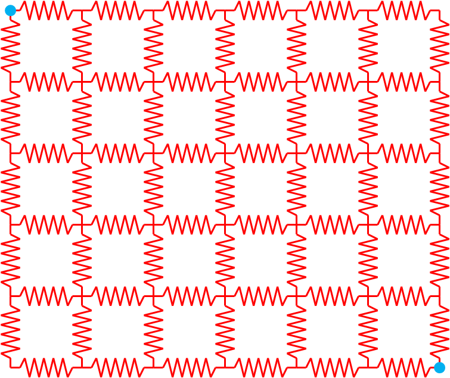
The topology and choice of nodes held at fixed potential is determined by the network configuration file, as are the values of the resistance on each of the branches. The system is described by a set of coupled equations representing the application of Kirchhoff’s law to each of the nodes that is not held at a fixed potential. Kirchhoff’s law is expressed by the equations
where is the current flowing between nodes and and is the set of nodes connected directly to . The current can be found from Ohm’s law
Where and are the voltage potentials on nodes and and is the resistance on the branch connecting nodes and . Plugging the expression for the current back into Kirchhoff’s law gives the equation
The unknowns in this system are the potentials . Kirchhoff’s law applies to any node that does not have an applied value of the potential. The nodes that do have a fixed potential appear as part of the right hand side vector. Assuming that any node with a non-fixed value of the potential is attached to at most one fixed node, then the th element of the right hand side vector is
where is the value of the fixed potential on node and is attached to . If is not attached to , then the element is zero. The voltages can be evaluated by solving the matrix equation
The voltage vector and right hand side have already been discussed. The matrix elements have the form
With this background, we can talk about the implementation of the resistor grid application.
Much of the basic structure of the classes has already been discussed in the “Hello world” example in section 9.1, so we will limit ourselves to discussing new features. The source code for this example can be found in the resistor_grid directory. The RGBus class inherits from the BaseBusComponent class and implements the following functions (in addition to the constructor and destructor)
void load(const boost::shared_ptr <gridpack::component::DataCollection> &data); bool isLead() const; double voltage() const; bool matrixDiagSize(int *isize, int *jsize) const; bool matrixDiagValues(ComplexType *values); bool vectorSize(int *isize) const; bool vectorValues(ComplexType *values); void setValues(gridpack::ComplexType *values); int getXCBufSize(); void setXCBuf(); bool serialWrite(char *string, const int bufsize, const char *signal = NULL);
In addition, the RGBus class has three private members
bool p_lead; double *p_voltage; double p_v;
The variable p_lead keeps track of whether a bus has a fixed voltage applied to it. In order to correctly calculate the currents, it is necessary to exchange voltages at the end of the calculation. The voltages at each bus are stored in an exchange buffer that can be accessed by the pointer p_voltage. The voltages in the external PSS/E file are read in before the exchange buffer is allocated, so to make sure there is a variable to store the value, the variable p_v is also included as a private member. In addition to implementing load and serialWrite, the RGBus class implements several functions in the MatVecInterface, as well as two functions, isLead() and voltage(), that are unique to this class.
Similarly, the RGBranch class implements the functions
void load(const boost::shared_ptr <gridpack::component::DataCollection> &data); double resistance(void) const; bool matrixForwardSize(int *isize, int *jsize) const; bool matrixReverseSize(int *isize, int *jsize) const; bool matrixForwardValues(ComplexType *values); bool matrixReverseValues(ComplexType *values); bool serialWrite(char *string, const int bufsize, const char *signal = NULL);
and has the private member
double p_resistance;
The RGBus load method has the implementation
void gridpack::resistor_grid::RGBus::load(const boost::shared_ptr<gridpack::component::DataCollection> &data) { int type; data->getValue(BUS_TYPE,&type); if (type == 2) { p_lead = true; data->getValue(BUS_BASEKV,&p_v); } }
The PSS/E file that is used to run this application has been configured so that the bus type parameter is set to 2 if the bus has a fixed voltage and the value of the voltage is stored in the BUS_BASEKV variable. The private member p_lead is initialized to false in the RGBus constructor and p_v is initialized to zero. In the load method, the bus type is assigned from the BUS_TYPE variable in the data collection. If it is 2, the bus has a fixed value of the potential and p_lead is set to true. The value of p_v is assigned to whatever is stored in the BUS_BASEKV variable when the bus type is 2. The contents of p_v will eventually be mapped to p_voltage, once the exchange buffers are allocated.
The load function for RGBranch simply assigns the data collection variable BRANCH_R to the private member p_resistance.
void gridpack::resistor_grid::RGBranch::load( const boost::shared_ptr <gridpack::component::DataCollection> &data) { data->getValue(BRANCH_R,&p_resistance,0); }
Once the bus and branch private members have been set using the load methods, the values can be recovered by other objects using the accessors isLead, voltage, and resistance. These functions are used in the math interface implementations to calculate values of the matrix elements and right hand side vectors and have the relatively simple forms
bool gridpack::resistor_grid::RGBus::isLead() const { return p_lead; } double gridpack::resistor_grid::RGBus::voltage() const { return *p_voltage; } double gridpack::resistor_grid::RGBranch::resistance(void) const { return p_resistance; }
Note that the voltage function is returning the contents of p_voltage, which will contain up-to-date values of the voltage once the calculation begins.
The diagonal matrix block routines in the bus class have the implementations
bool gridpack::resistor_grid::RGBus::matrixDiagSize(int *isize, int *jsize) const { if (!p_lead) { *isize = 1; *jsize = 1; return true; } else { return false; } } bool gridpack::resistor_grid::RGBus::matrixDiagValues( ComplexType *values) { if (!p_lead) { gridpack::ComplexType ret(0.0,0.0); std::vector<shared_ptr<BaseComponent> > branches; getNeighborBranches(branches); int size = branches.size(); int i; for (i=0; i<size; i++) { gridpack::resistor_grid::RGBranch *branch = dynamic_cast<gridpack::resistor_grid::RGBranch*> (branches[i].get()); ret += 1.0/branch->resistance(); } values[0] = ret; return true; } else { return false; } }
The matrixDiagSize routine returns a single element in the values array if the bus is not a lead with a fixed voltage, otherwise it returns false and there are no values in the values array. The matrixDiagValues function sets the first element of the values array equal to the sum of the reciprocal of the resistances on all the attached branches, if the bus is not a lead. To calculate this quantity, it starts by calling the getNeighborBranches function to get a list of pointers to attached branches. These pointers are all of type BaseComponent, so they need to be cast to pointers of type RGBranch before functions like resistance can be called on them. This is done by first calling the get function on the shared_ptr to the BaseComponent object to get a bare pointer to the neighboring branch and then doing a dynamic cast to a pointer of type RGBranch. The resistance method can now by called on the RGBranch pointer to get the resistance of the branch and use it to calculate the contribution to the diagonal matrix element. This value is assigned to values[0]. If the bus is a lead, then no values are calculated and the function returns false. It is also worth noting that this function will only be called on buses that are local to the process, so each bus that evaluates a diagonal matrix element will have a complete set of branches attached to it. This is not the case for ghost buses. These have only one branch attached to them, no matter how many branches are attached to it in the original network.
The off-diagonal elements are calculated by the branch components in the functions matrixForwardSize, matrixReverseSize, matrixForwardValues, and matrixReverseValues. The matrix for the resistor grid problem is completely symmetric, so in this case, the forward and reverse calculations are identical. For realistic power problems, this is not generally true, and the forward and reverse functions will have different implementations. The forward functions are described below, the implementation of the reverse functions is identical. The branch forward size and value functions are
bool gridpack::resistor_grid::RGBranch::matrixForwardSize( int *isize, int *jsize) const { gridpack::resistor_grid::RGBus *bus1 = dynamic_cast<gridpack::resistor_grid::RGBus*>(getBus1().get()); gridpack::resistor_grid::RGBus *bus2 = dynamic_cast<gridpack::resistor_grid::RGBus*>(getBus2().get()); if (!bus1->isLead() && !bus2->isLead()) { *isize = 1; *jsize = 1; return true; } else { return false; } } bool gridpack::resistor_grid::RGBranch::matrixForwardValues( ComplexType *values) { gridpack::resistor_grid::RGBus *bus1 = dynamic_cast<gridpack::resistor_grid::RGBus*>(getBus1().get()); gridpack::resistor_grid::RGBus *bus2 = dynamic_cast<gridpack::resistor_grid::RGBus*>(getBus2().get()); if (!bus1->isLead() && !bus2->isLead()) { values[0] = -1.0/p_resistance; return true; } else { return false; } }
Before these functions can calculate return values, they must first determine if one of the buses at either end of the branch is a lead bus. To do this, the functions need to get pointers to the “from” and “to” buses at either end of the branch. They can do this through the getBus1 and getBus2 calls in the BaseBranchComponent class which return pointers of type BaseComponent. These pointers can then be converted to RGBus pointers by a dynamic cast. The isLead functions can be called to find out if either bus is a lead bus. If neither bus is a lead bus, the size of the off-diagonal block is returned as a 1x1 matrix and the off-diagonal matrix element is calculated and returned in values[0]. Otherwise both functions return false to indicate that there is no contribution to the matrix from this branch.
In addition to calculating values of the matrix , it is also necessary to set up the right hand side vector. This is done via the functions vectorSize and vectorValues defined on the buses. Only buses that are not lead buses contribute to the right hand side vector. On the other hand, the only non-zero values in the right hand side vector come from non-lead buses that are attached to lead buses. The vectorSize function has the implementation
bool gridpack::resistor_grid::RGBus::vectorSize(int *isize) const { if (!p_lead) { *isize = 1; return true; } else { return false; } }
If a bus is not a lead bus, it contributes a single value, otherwise it does not and the function returns false. The vectorValues function is a bit more complicated. It has the form
bool gridpack::resistor_grid::RGBus::vectorValues(ComplexType *values) { if (!p_lead) { std::vector<boost::shared_ptr<BaseComponent> > branches; getNeighborBranches(branches); int size = branches.size(); int i; gridpack::ComplexType ret(0.0,0.0); for (i=0; i<size; i++) { gridpack::resistor_grid::RGBranch *branch = dynamic_cast<gridpack::resistor_grid::RGBranch*> (branches[i].get()); gridpack::resistor_grid::RGBus *bus1 = dynamic_cast<gridpack::resistor_grid::RGBus*> (branch->getBus1().get()); gridpack::resistor_grid::RGBus *bus2 = dynamic_cast<gridpack::resistor_grid::RGBus*> (branch->getBus2().get()); if (bus1 != this && bus1->isLead()) { ret += bus1->voltage()/branch->resistance(); } else if (bus2 != this && bus2->isLead()) { ret += bus2->voltage()/branch->resistance(); } } values[0] = ret; return true; } else { return false; } }
The vectorValues function starts by getting a list of branches that are attached to the calling bus and then looping over the list. Pointers to each of the branches, as well as the buses at each end of the branch are obtained using the getBus1 and getBus2 functions. It is still necessary to determine which end of the branch is opposite the calling bus and this can be done by checking the conditions bus1 != this and bus2 != this. One of these will be true for the bus opposite the calling bus. If this bus is also a lead bus, then a contribution is added to the right hand side vector element. The contribution can be calculated by getting the value of the fixed voltage from the lead bus and dividing it by the resistance of the branch. These values can be obtained by calling the bus voltage function and the branch resistance function. The *p_voltage value of the calling bus is not used. If the calling bus is a lead bus, then the function returns false.
The last function related to vectors that is implemented in the MatVecInterface is the setValues function
void gridpack::resistor_grid::RGBus::setValues( gridpack::ComplexType *values) { if (!p_lead) { *p_voltage = real(values[0]); } }
Once the voltages have been calculated by solving Kirchhoff’s equations, it is necessary to have some way of pushing these back on the buses so they can be written to output. The results of the linear solver are returned in the values array. The number of values in this array corresponds to the number of values contributed to the right hand side vector (in this case 1 if the bus is not a lead). Thus, the value is assigned to the internal p_voltage variable if the bus is not a lead bus. This function will be called by all buses as part of the mapToBus function in the BusVectorMap. In order to correctly calculate the current on all branches for export to standard out, it is necessary to have up-to-date values of the voltage on all buses, including ghost buses. This requires a data exchange at the end of the calculation. To enable this exchange, the getXCBufSizeand setXCBuf functions must be implemented in the RGBus class. These functions have the form
int gridpack::resistor_grid::RGBus::getXCBufSize() { return sizeof(double); } void gridpack::resistor_grid::RGBus::setXCBuf(void *buf) { p_voltage = static_cast<double*>(buf); *p_voltage = p_v; }
The only variable that needs to be exchanged is the value of the potential, so getXCBufSize returns the number of bytes in a single double precision variable. The setXCBuf function assigns the buffer pointed to by the variable buf to the internal data member p_voltage. At the same time, it initializes the contents of p_voltage to the variable p_v, which contains the voltage read in from the external PSS/E file. The serialWrite functions on the buses and branches are used to write the voltages and currents on all buses and branches to standard output. The serialWrite function on the buses has the form
bool gridpack::resistor_grid::RGBus::serialWrite(char *string, const int bufsize, const char *signal) { if (p_lead) { sprintf(string,"Voltage on bus %d: %12.6f (lead)\n", getOriginalIndex(),*p_voltage); } else { sprintf(string,"Voltage on bus %d: %12.6f\n", getOriginalIndex(),*p_voltage); } return true; }
All buses return a string so the function always returns true. The printout consists of the bus index, obtained with the getOriginalIndex function, and the value of the voltage on the bus. Lead buses are marked in the output, indicating that the voltage is the same as that specified in the input file, the remaining voltages are calculated by solving Kirchhoff’s equations. For branches, the serialWrite function is used to calculate and print the current flowing across each branch
bool gridpack::resistor_grid::RGBranch::serialWrite(char *string, const int bufsize, const char *signal) { gridpack::resistor_grid::RGBus *bus1 = dynamic_cast<gridpack::resistor_grid::RGBus*>(getBus1().get()); gridpack::resistor_grid::RGBus *bus2 = dynamic_cast<gridpack::resistor_grid::RGBus*>(getBus2().get()); double v1 = bus1->voltage(); double v2 = bus2->voltage(); double icur = (v1 - v2)/p_resistance; sprintf(string,"Current on line from bus %d to %d is: %12.6f\n", bus1->getOriginalIndex(),bus2->getOriginalIndex(),icur); return true; }
All branches report the current flowing through them, so this function also returns true for all branches. To calculate the current, it is necessary to get the value of the voltages at both ends of the branch using methods already described and then calculate the current by dividing the difference in voltages by the resistance of the branch. The print line prints the current and uniquely identifies each branch by including the IDs of the buses at either end.
The factory class for resistor grid application only uses functionality in the BaseFactory class and has the simple form
class RGFactory : public gridpack::factory::BaseFactory<RGNetwork> { public: RGFactory(boost::shared_ptr<RGNetwork> network) : gridpack::factory::BaseFactory<RGNetwork>(network) {} ˜RGFactory() {} };
Again, the BaseFactory class from which RGFactory inherits is initialized by passing the network argument through the constructor. The declaration for this class is in the file rg_factory.hpp. There is no corresponding .cpp file.
The RGApp class declaration is also simple and consists of the functions
class RGApp { public: RGApp(void); ˜RGApp(void); void execute(int argc, char** argv); };
Again, arguments from the top level main program can be passed through to the execute function, which is responsible for implementing the actual resistor grid calculation. The RGApp class declaration is contained in the rg_app.hpp file. The implementation is contained in the rg_app.cpp file. The only complicated function in the implementation is execute, which consists of
void gridpack::resistor_grid::RGApp::execute(int argc, char** argv) { // read configuration file gridpack::parallel::Communicator world; gridpack::utility::Configuration *config = gridpack::utility::Configuration::configuration(); config->open("input.xml",world); gridpack::utility::Configuration::CursorPtr cursor; cursor = config->getCursor("Configuration.ResistorGrid"); // create network and read in external PTI file // with network configuration boost::shared_ptr<RGNetwork> network(new RGNetwork(world)); gridpack::parser::PTI23_parser<RGNetwor> parser(network); std::string filename; if (!cursor->get("networkConfiguration",&filename)) { filename = "small.raw"; } parser.parse(filename.c_str()); // partition network network->partition(); // create factory and load parameters from input // file to network components gridpack::resistor_grid::RGFactory factory(network); factory.load(); // set network components using factory and set up exchange // of voltages between buses factory.setComponents(); factory.setExchange(); network->initBusUpdate(); // create mapper to generate voltage matrix gridpack::mapper::FullMatrixMap<RGNetwork> vMap(network); boost::shared_ptr<gridpack::math::Matrix> V = vMap.mapToMatrix(); // create mapper to generate RHS vector gridpack::mapper::BusVectorMap<RGNetwork> rMap(network); boost::shared_ptr<gridpack::math::Vector> R = rMap.mapToVector(); // create solution vector by cloning R boost::shared_ptr<gridpack::math::Vector> X(R->clone()); // create linear solver and solve equations gridpack::math::LinearSolver solver(*V); solver.configure(cursor); solver.solve(*R, *X); // push solution back on to buses rMap.mapToBus(X); // exchange voltages so that all buses have correct values. This // guarantees that current calculations on each branch are correct network->updateBuses(); // create serial IO objects to export data gridpack::serial_io::SerialBusIO<RGNetwork> busIO(128,network); char ioBuf[128]; busIO.header("\nVoltages on buses\n\n"); busIO.write(); gridpack::serial_io::SerialBranchIO<RGNetwork> branchIO(128,network); branchIO.header("\nCurrent on branches\n\n"); branchIO.write(); }
The beginning of the resistor grid application is more complicated than “Hello world” in that it uses an input file to control the properties of the linear solver that is used to solve current equations. To read in the input file, the application starts by creating a communicator on the set of all processors. Only one configuration object is available to the application and the execute function gets a pointer to this instance by calling the static function Configuration::configuration(). This pointer can then be used to read in the input file, “input.xml”, across all processes in the communicator world using the open method. All processors now have access to the contents of input.xml. The input file contains two pieces of information, the name of the PSS/E-formatted resistor grid configuration file and the parameters for the linear solver. The input file has the form
<?xml version="1.0" encoding="utf-8"?> <Configuration> <ResistorGrid> <networkConfiguration> small.raw </networkConfiguration> <LinearSolver> <PETScOptions> -ksp_view -ksp_type richardson -pc_type lu -pc_factor_mat_solver_package superlu_dist -ksp_max_it 1 </PETScOptions> </LinearSolver> </ResistorGrid> </Configuration>
The resistor grid file name can be obtained by getting a CursorPtr that is pointed at the ResistorGrid block in the input file by using the getCursor function and then using the get function to retrieve the actual file name located in the networkConfiguration field. If no file is specified in the input deck, the file name defaults to “small.raw”. At the same time, an RGNetwork object is instantiated and used to initialize an instance of PTI23_parser. This can then read in the resistor grid configuration file using the parse function.
At this point, all buses and branches have been created, but they may not be distributed in a way that supports computation. The network partition function is called to redistribute the network so that each process has maximal connections between components located on the process and minimal connections to components located on other processes. The ghost buses and branches are also added by the partition function.
After partitioning, an RGFactory object is created and the base class load method is called to initialize the internal data elements on each bus and branch in the network. This function initializes both locally held components as well as ghost components, so there is no need for a data exchange to guarantee that all components are up to date. The factory also calls the base class setComponents method, which determines several types of internal indices that are used to set up calculations. The buffers needed to exchange data at the end of the calculation are set up by a call to the factory setExchange method. Additional internal data structures needed for the data exchange between buses are created by calling the network initBusUpdate method. No data exchanges are needed between branch components.
The next step in the algorithm is to create the matrix , the right hand side vector and a vector to contain the solution. Two separate mappers are needed, one for the matrix and the other for the right hand side vector. For the matrix, the code creates an instance of a FullMatrixMap that is initialized with the resistor grid network. The mapToMatrix function is called to create the matrix V. The right hand side vector is created by creating instance of a BusVectorMap and using the mapToVector function to create the vector R. The solution vector X does not need to be initialized to any particular value, it just needs to be the same size as R so it is created by having R call the clone method in the Vector class and using the result to initialize X.
Once V, R, and X are available, the equations can be solved using a linear solver. The linear solver is created by initializing an instance of LinearSolver with the matrix V. The solver class configure method can be used to transfer solver parameters in the LinearSolver block in input.xml to the solver. The cursor pointer that is taken as an argument to configure is already pointing to the ResistorGrid block in the input file, so configure will pick up any parameters in a LinearSolver block within the ResistorGrid block. After configuring the solver, the solution vector can be obtained by calling the solve method and the resulting voltages are pushed back to buses using the mapToBus method in the BusVectorMap class.
After calling mapToBus, all locally held buses have correct values of the voltage, but ghost buses still have their initial values. To correct the voltages on ghost buses, it is necessary to call the network updateBuses function. The buffer p_voltage now contains correct values of the voltage on all buses.
The only remaining step is to write the results to standard output. The voltages are written by creating an instance of SerialBusIO. The maximum buffer size is set to 128 characters, which is enough to hold any lines of output coming from the buses. A header labeling the bus output is written to standard out using the header method and then bus voltages are written by calling write. Similarly, output from the branches can be written by creating an instance of SerialBranchIO, writing a header using the header method and then calling write. Since only one type of output comes from the branches and buses, no character string is passed in as an argument to the write functions. The execute function has now completed all tasks associated with solving the resistor grid problem and passes control back to the main calling program.
The main calling program is relatively simple and consists of the code
int main(int argc, char **argv) { gridpack::parallel::Environment env(argc, argv); { gridpack::resistor_grid::RGApp app; app.execute(argc, argv); } return 0; }
The parallel computing environment is set up by creating an instance of Environment. The computing environment is also cleaned up at the end of the calculation when the destructor for this object is called. The math libraries are initialized Environment constructor and cleaned up at the end of the calculation by a call to thelEnvironment destructor. The only remaining calls are to create an instance of an RGApp and call its execute method. The extra brackets around the resistor_grid instance guarantees that the destructor for resistor_grid is called before the destructor for Environment. This ensures that any data structure in the application are cleaned up before the parallel environment is shut down.
A portion of the output from the resistor grid calculation is shown below
GridPACK math module configured on 8 processors : Voltages on buses Voltage on bus 1: 1.000000 (lead) Voltage on bus 2: 0.667958 Voltage on bus 3: 0.467469 Voltage on bus 4: 0.329598 Voltage on bus 5: 0.227289 Voltage on bus 6: 0.148733 Voltage on bus 7: 0.088491 : Current on branches Current on line from bus 1 to 2 is: 20.000000 Current on line from bus 2 to 3 is: 4.009776 Current on line from bus 3 to 4 is: 2.757436 Current on line from bus 4 to 5 is: 2.046167 Current on line from bus 5 to 6 is: 4.545785 :
The first line is written by the call to the math library Initialize function and reports on the number of processors being used in the calculation. This information is useful in keeping track of the performance characteristics of different calculations. Some information from the solvers is usually printed after this. At the end of the calculation, the values of the voltages on the buses are printed out and then the current on each of the branches. The buses with externally applied voltages are identified with keywork ”lead”.
An example contingency application has been included in the contingency analysis directory. This contingency analysis is simpler than the one available under the applications directory and provides a relatively compact demonstration of some of the advanced features of GridPACK. This application is built entirely around the power flow module, so it has no network component classes of its own. The main functionality is located in the CADriver class that consists of two methods (other than the constructor and destructor). One function is used to read in a list of contingencies and convert them to a corresponding Contingency data structure and the other function executes the contingency analysis calculation. These two functions will be discussed in detail.
The function for reading in the contingencies and converting them to a list of Contingency data structures has the calling signature
std::vector<gridpack::powerflow::Contingency> getContingencies( gridpack::utility::Configuration::ChildCursors contingencies)
The Contingency data structures are defined as part of the power flow module and exist in the gridpack::powerflow namespace. The list of cursors represented by the contingencies variable is obtained by the calling program before calling this function. The function itself is
std::vector<gridpack::powerflow::Contingency> ret; int size = contingencies.size(); int i, idx; gridpack::utility::StringUtils utils; for (idx = 0; idx < size; idx++) { std::string ca_type; contingencies[idx]->get("contingencyType",&ca_type); std::string ca_name; contingencies[idx]->get("contingencyName",&ca_name); if (ca_type == "Line") { std::string buses; contingencies[idx]->get("contingencyLineBuses",&buses); std::string names; contingencies[idx]->get("contingencyLineNames",&names); std::vector<std::string> string_vec = utils.blankTokenizer(buses); std::vector<int> bus_ids; for (i=0; i<string_vec.size(); i++) { bus_ids.push_back(atoi(string_vec[i].c_str())); } string_vec.clear(); string_vec = utils.blankTokenizer(names); std::vector<std::string> line_names; for (i=0; i<string_vec.size(); i++) { line_names.push_back(utils.clean2Char(string_vec[i])); } if (bus_ids.size() == 2*line_names.size()) { gridpack::powerflow::Contingency contingency; contingency.p_name = ca_name; contingency.p_type = Branch; int i; for (i = 0; i < line_names.size(); i++) { contingency.p_from.push_back(bus_ids[2*i]); contingency.p_to.push_back(bus_ids[2*i+1]); contingency.p_ckt.push_back(line_names[i]); contingency.p_saveLineStatus.push_back(true); } ret.push_back(contingency); } }se if (ca_type == "Generator") { std::string buses; contingencies[idx]->get("contingencyBuses",&buses); std::string gens; contingencies[idx]->get("contingencyGenerators",&gens); std::vector<std::string> string_vec = utils.blankTokenizer(buses); std::vector<int> bus_ids; for (i=0; i<string_vec.size(); i++) { bus_ids.push_back(atoi(string_vec[i].c_str())); } string_vec.clear(); string_vec = utils.blankTokenizer(gens); std::vector<std::string> gen_ids; for (i=0; i<string_vec.size(); i++) { gen_ids.push_back(utils.clean2Char(string_vec[i])); } if (bus_ids.size() == gen_ids.size()) { gridpack::powerflow::Contingency contingency; contingency.p_name = ca_name; contingency.p_type = Generator; int i; for (i = 0; i < bus_ids.size(); i++) { contingency.p_busid.push_back(bus_ids[i]); contingency.p_genid.push_back(gen_ids[i]); contingency.p_saveGenStatus.push_back(true); } ret.push_back(contingency); } } } return ret;
This function is designed to parse input of the form
<?xml version="1.0" encoding="utf-8"?> <ContingencyList> <Contingency\_analysis> <Contingencies> <Contingency> <contingencyType>Line</contingencyType> <contingencyName>CTG1</contingencyName> <contingencyLineBuses> 13 14</contingencyLineBuses> <contingencyLineNames> B1 </contingencyLineNames> </Contingency> <Contingency> <contingencyType>Generator</contingencyType> <contingencyName>CTG2</contingencyName> <contingencyBuses> 2 </contingencyBuses> <contingencyGenerators>1 </contingencyGenerators> </Contingency> </Contingencies> </Contingency\_analysis> </ContingencyList>
The contingencies list in the argument consists of a vector of Configuration module cursors, each of which is pointing to one of the Contingency blocks in this input.
The first few lines in the getContingencies function are used to create the return list, determine the number of contingencies in the ChildCursors list and create a StringUtils object that can be used to parse the input. The function then loops over all cursors in the contingencies list. All contingencies should contain the contingencyType and contingencyName field, so these values are obtained using the get function from the Configuration module. The type can be either “Line” or “Generator”. Based on the type, the function bifurcates into two branches. The “Line” branch looks for the strings corresponding to contingencyLineBuses and contingencyLineNames and assigns these to the string variables buses and names. More than one transmission element may be involved in the contingency. The StringUtilsblankTokenizer function is used to parse the buses string into a list of strings that can then be converted to a list of integers. These represent the original indices of the buses at each end of the branch. The names string is also converted to a list representing the two character tag identifying the individual transmission element between the two buses. This is then reformatted to a consistent 2-character format using the StringUtilsclean2Char function. The string vector string_vec is used to hold the results from blankTokenizer, and the final list of integers and character tags are stored in the variables bus_ids and line_names. Each transmission element is characterized by two buses and a character tag, so the number of bus IDs should be twice the number of tags. If this condition is met, then the contingency is assumed to be well formed and a Contingency struct is created for it. After copying the data stored in the variables ca_type, ca_name, bus_ids and line_names, this contingency is added to the return variable ret.
The “Generator” branch is similar to the “Line” branch. The strings in the contingencyBuses and contingencyGenerators fields are copied into the string variables buses and gens. These are then converted into a list of bus IDs and generator tags using the blankTokenizer function and stored in the list bus_ids and gen_ids. A generator is characterized by the original index of the bus that it is associated with and the 2-character generator tag so the size of the bus_ids and gen_ids vectors must be equal. If this condition is met, then a Contingency struct is created, the contingency data is copied to it and the struct is added to the return variable ret.
After all cursor in contingencies have been processed, the getContingencies function returns a list of Contingency structs representing all the contingencies in the original XML input file.
The execute function actually runs the simulation and starts with the code block
void gridpack::contingency_analysis::CADriver::execute(int argc, char** argv) { gridpack::parallel::Communicator world; gridpack::utility::CoarseTimer *timer = gridpack::utility::CoarseTimer::instance(); int t_total = timer->createCategory("Total Application"); timer->start(t_total); gridpack::utility::Configuration *config = gridpack::utility::Configuration::configuration(); if (argc >= 2 && argv[1] != NULL) { char inputfile[256]; sprintf(inputfile,"%s",argv[1]); config->open(inputfile,world); } else { config->open("input.xml",world); } }
The user can pass in the name of the input file when they invoke the contingency analysis application, and this is transmitted via the variables argc and argv in the argument list. If an argument is detected, then the code will try and open a file using the argument as the filename, otherwise it will assume the input file is called “input.xml”. Once the input file is open, all processors have access to its contents. This section also creates a timing category for the calculation and starts the timer. The call to CoarseTime::instance returns the timer object and the createCategory call creates a timer category with the name “Total Application”. It also returns a handle to this category. The start call begins the timer. The timer can be started and stopped multiple times for the same category.
The next few lines are used to parse the input file and determine the size of the communicators that should be used to run individual tasks.
gridpack::utility::Configuration::CursorPtr cursor; cursor = config->getCursor("Configuration.Contingency_analysis"); int grp_size; double Vmin, Vmax; if (!cursor->get("groupSize",&grp_size)) { grp_size = 1; } if (!cursor->get("minVoltage",&Vmin)) { Vmin = 0.9; } if (!cursor->get("maxVoltage",&Vmax)) { Vmax = 1.1; } gridpack::parallel::Communicator task_comm = world.divide(grp_size);
A CursorPtr is defined and set to point to the contents of the Contingency_analysis block in the input file using the getCursor function. This block contains parameters defining some of the properties of the simulation. The groupSize parameter sets the size of the communicator on which individual power flow calculations are run. The power flow is not very scalable in GridPACK and it is usually fastest to run it on one processor, so the default value is 1. The minVoltage and maxVoltage parameters are the limits, in p.u., for acceptable voltage variations on individual buses. Once the group size has been set, the world communicator is divided into subcommunicators using the divide function. This guarantees that each subcommunicator contains at most the number of processes specified using groupSize (one subcommunicator may contain less than this number). Each process is now part of both the world communicator and one subcommunicator.
The next block of code creates a power flow application on each task communicator and initializes it.
boost::shared_ptr<gridpack::powerflow::PFNetwork> pf_network(new gridpack::powerflow::PFNetwork(task_comm)); gridpack::powerflow::PFAppModule pf_app; pf_app.readNetwork(pf_network,config); pf_app.initialize(); pf_app.solve(); pf_app.ignoreVoltageViolations(Vmin,Vmax);
The first line creates a power flow network on the task communicator. The second line creates a power flow application. The readNetwork function assigns the powerflow network (which currently has nothing in it) to the power flow application, along with the pointer to the configuration module. The input file is expected to have a Powerflow block that contains parameters for the power flow application. These include the location of the network configuration file and the type of solver that is to be used. An example of a complete input file is
<?xml version="1.0" encoding="utf-8"?> <Configuration> <Contingency\_analysis> <contingencyList>contingencies.xml</contingencyList> <groupSize>2</groupSize> <maxVoltage>1.1</maxVoltage> <minVoltage>0.9</minVoltage> </Contingency\_analysis> <Powerflow> <networkConfiguration> IEEE14\_ca.raw </networkConfiguration> <maxIteration>50</maxIteration> <tolerance>1.0e-6</tolerance> <LinearSolver> <PETScOptions> -ksp\_type richardson -pc\_type lu -pc\_factor\_mat\_solver\_package superlu\_dist -ksp\_max\_it 1 </PETScOptions> </LinearSolver> </Powerflow> </Configuration>
Note that it has two blocks, Contingency_analysis and Powerflow. The parameters describing the contingency calculation and the location of the contingencies are located in the first block and the power flow parameters are located in the second block. The readNetwork function will read in the network configuration file and partition the network. The initialize function is used to initialize the network components from the DataCollection objects and assign exchange buffers. The call to solve is used to obtain a power solution to the base problem with no contingencies. Since all tasks have the same data at this point, the network solution is duplicated across all subcommunicators. This duplication is faster than solving the base case powerflow on one processor and then broadcasting the result across the system. The final call to ignoreVoltageViolations sets a parameter in each network component that violates the voltage bounds for base case. These components will be ignored in any subsequent checks for voltage violations. This call is used to prevent all contingencies from reporting a violation.
The next step is to read in the contingencies and convert these to a list of contingency data structs.
std::string contingencyfile; if (!cursor->get("contingencyList",&contingencyfile)) { contingencyfile = "contingencies.xml"; } bool ok = config->open(contingencyfile,world); cursor = config->getCursor( "ContingencyList.Contingency_analysis.Contingencies"); gridpack::utility::Configuration::ChildCursors contingencies; if (cursor) cursor->children(contingencies); std::vector<gridpack::powerflow::Contingency> events = getContingencies(contingencies); if (world.rank() == 0) { int idx; for (idx = 0; idx < events.size(); idx++) { printf("Name: %s\n",events[idx].p_name.c_str()); if (events[idx].p_type == Branch) { int nlines = events[idx].p_from.size(); int j; for (j=0; j<nlines; j++) { printf(" Line: (from) %d (to) %d (line) \’%s\’\n", events[idx].p_from[j],events[idx].p_to[j], events[idx].p_ckt[j].c_str()); } } else if (events[idx].p_type == Generator) { int nbus = events[idx].p_busid.size(); int j; for (j=0; j<nbus; j++) { printf(" Generator: (bus) %d (generator ID) \’%s\’\n", events[idx].p_busid[j],events[idx].p_genid[j].c_str()); } } } }
The location of the contingency file is contained in the contingencyList field in the input file. If this field is not present, the code defaults to the file name contingencies.xml. The contintency file is then opened using the open function in the Configuration module and a cursor is set to the Contingencies block within this file. The Configuration::children function returns a list of cursor pointers that point to each of the individual Contingency blocks. The getContingencies function described above parses each of these blocks and returns a vector of contingency data structs. The contingency list is replicated on all processors. Process 0 is used to provide a listing of the contingencies to standard output by looping over the events vector returned by the getContingencies function.
Once the contingencies have been determined, the code next sets up a task manager on the world communicator and sets the number of tasks equal to the number of contingencies.
gridpack::parallel::TaskManager taskmgr(world); int ntasks = events.size(); taskmgr.set(ntasks);
The task loop is created by defining a task_id variable and a character string buffer that is used inside the loop to create messages. The task manager then begins iterating over different tasks.
int task_id; char sbuf[128]; while (taskmgr.nextTask(task_comm, &task_id)) { printf("Executing task %d on process %d\n",task_id,world.rank());
The call to nextTask takes the task communicator as one of its arguments so the value of task_id that is returned is the same for all processors on the task communicator. This guarantees that each of the processors in this copy of the power flow applicatin is working on the same contingency. If the nextTask function returns false, the tasks have been completed and the code exits from the while loop. At the start of the task, the code prints out a statement to standard out describing which tasks are being executed by each processor.
The next few lines in the task loop are used to open a file so that the output from each task is directed to a separate file. This can be used later to examine individual tasks.
sprintf(sbuf,"%s.out",events[task_id].p_name.c_str()); pf_app.open(sbuf); sprintf(sbuf,"\nRunning task on %d processes\n",task_comm.size()); pf_app.writeHeader(sbuf); if (events[task_id].p_type == Branch) { int nlines = events[task_id].p_from.size(); int j; for (j=0; j<nlines; j++) { sprintf(sbuf," Line: (from) %d (to) %d (line) \’%s\’\n", events[task_id].p_from[j],events[task_id].p_to[j], events[task_id].p_ckt[j].c_str()); } } else if (events[task_id].p_type == Generator) { int nbus = events[task_id].p_busid.size(); int j; for (j=0; j<nbus; j++) { sprintf(sbuf," Generator: (bus) %d (generator ID) \’\%s\’\n", events[task_id].p_busid[j], events[task_id].p_genid[j].c_str()); } } pf_app.writeHeader(sbuf);
The first line is used to create a name for the output file using the contingency name. The output from the power flow calculation is then redirected to this file using the power flow open function. Next, some information about this particular contingency is written to the file using some calls to the writeHeader method. This includes the number of processors used to calculate the contingency and the details of the contingency itself.
The remaining lines in the while loop are used to solve the power flow equations.
pf_app.resetVoltages(); pf_app.setContingency(events[task_id]); if (pf_app.solve()) { pf_app.write(); bool ok = pf_app.checkVoltageViolations(Vmin,Vmax); ok = ok && pf_app.checkLineOverloadViolations(); if (ok) { sprintf(sbuf,"\nNo violation for contingency %s\n", events[task_id].p_name.c_str()); } else { sprintf(sbuf,"\nViolation for contingency %s\n", events[task_id].p_name.c_str()); } pf_app.print(sbuf); } pf_app.unSetContingency(events[task_id]); pf_app.close(); }
Before doing the calculation, all voltages are returned to the original values defined in the network configuration file using resetVoltages. The contingency parameters are set to the values specified by the task_id element in the events list using the setContingency method.
The system is then solved using the power flow solve function. If the solution succeeds, the calculation writes out the voltages and branch power flow values to the outpuf file. The calculation also checks for voltage violations and line overload violations. The results of these checks are written to the output file for each power flow calculation. After this is complete, the powerflow calculation returns all contingency related parameters to their original values using unSetContingency and closes the output file. This is repeated until all contingencies in the event list have been evaluated.
At this point, the contingency application is essentially complete. The remaining lines of code
taskmgr.printStats(); timer->stop(t_total); if (events.size()*grp_size >= world.size()) { timer->dump(); }
are used to print out a list of how many tasks were evaluated on each processor and to stop the timing of the “Total Application” category. The timer dump method will print statistics on the amount of time spent in the total application as well as reporting timings inside the power flow application. The check on the dump call is to verify that all processors have participated in at least one power flow calculation. If this condition is not met, then the timing statistics will not be valid (note that if this condition is not fulfilled, then it indicates that too many processors were requested for the calculation).